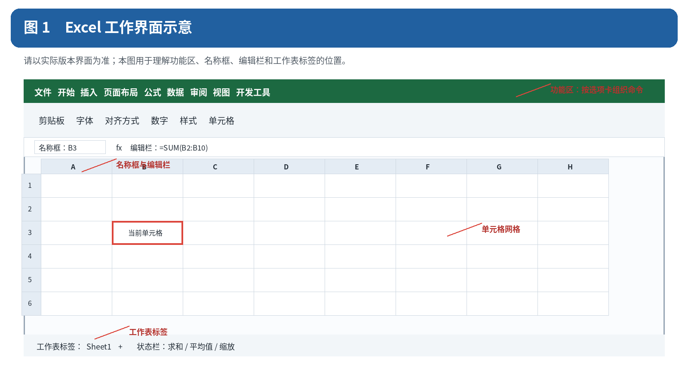
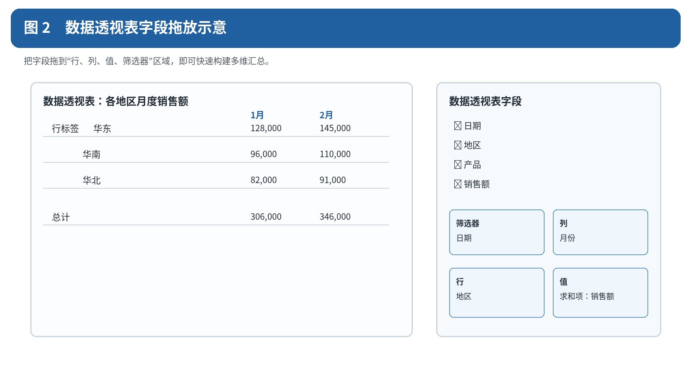
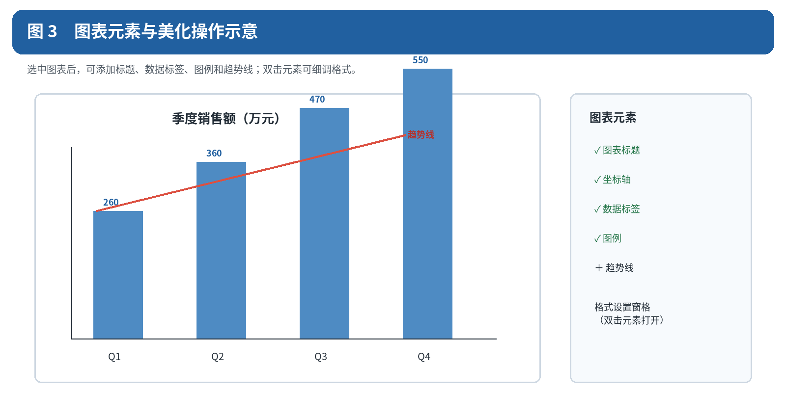
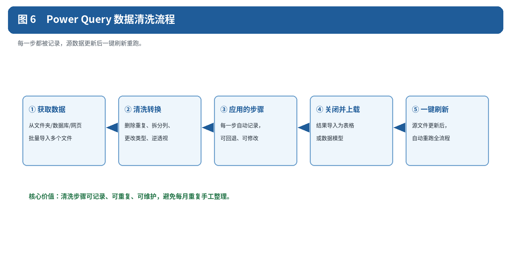
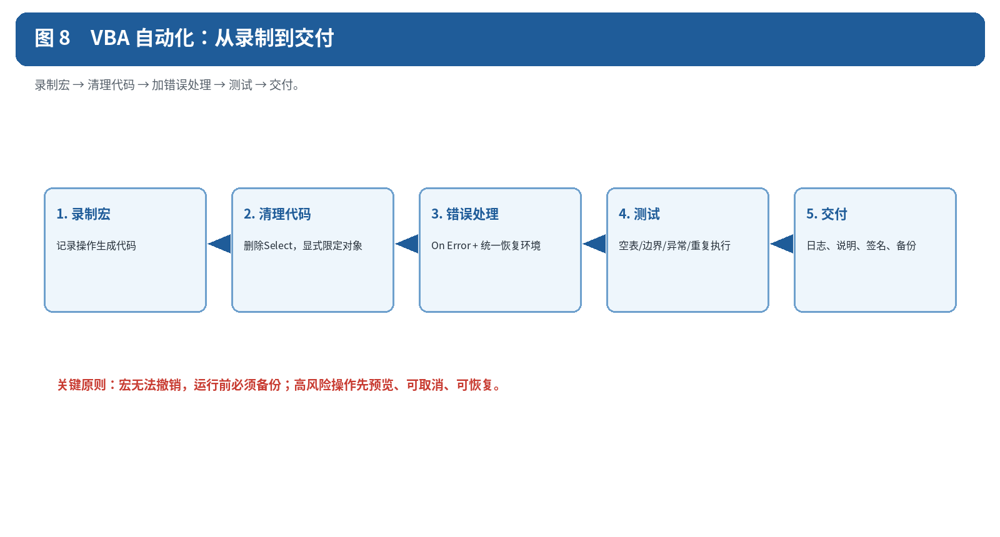
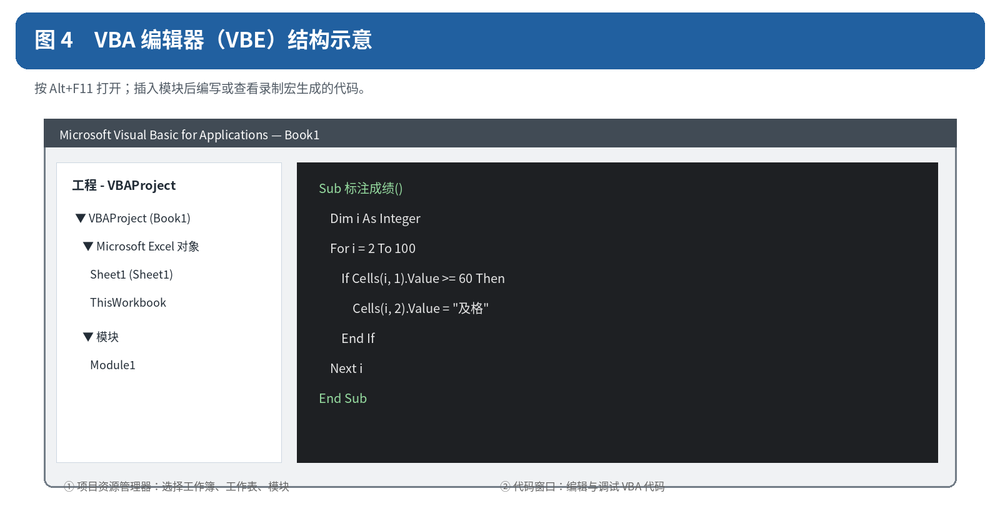
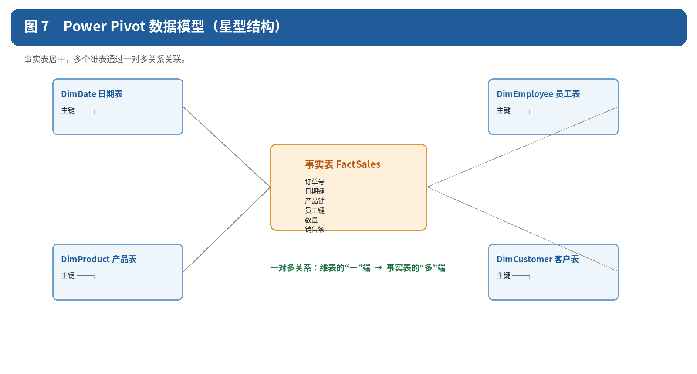

第一编 基础到进阶：完整教程主干
第一部分 入门篇
1. Excel 是什么、版本与文件格式
Microsoft Excel 是微软 Office 办公套件中的电子表格软件，用于数据录入、计算、分析、可视化和自动化处理。它以“工作簿”为文件单位，一个工作簿包含多个“工作表（Sheet）”，每张工作表由行列交叉的“单元格”构成网格。
常见应用场景：
财务记账、预算表、报销单
销售数据统计与分析报表
项目进度管理、甘特图
数据清洗、透视分析、可视化图表
结合宏与 VBA 实现办公自动化
1.1 版本说明
本文菜单与快捷键主要按 Windows 桌面版编写，函数兼容范围覆盖 Excel 2019、2021、2024 与 Microsoft 365。macOS 的快捷键和加载项不同；“在线教程”指阅读方式，不代表所有示例都能在 Excel 网页版运行。版本标注约定如下：
【2019+】：指 Excel 2019 及之后的永久版，以及支持该功能的 Microsoft 365；具体平台仍需看附录
【365/2021+】：Excel 2021、2024 与 Microsoft 365 支持的函数
【365】：以 Microsoft 365 为适用环境；部分函数已进入 Excel 2024，具体以附录和函数官方页面为准
1.2 文件格式对比
| 格式 | 特点与适用场景 |
|---|---|
| .xlsx | 默认格式，不能保存宏。日常首选 |
| .xlsm | 启用宏的工作簿。含有宏或 VBA 代码时必须用此格式，否则代码会在保存时丢失 |
| .xlsb | 二进制格式，体积更小、打开更快，适合超大工作簿；兼容性略差，也可保存宏 |
| .csv | 纯文本逗号分隔，只保存单张表的值。不保存公式、格式、多工作表和图表 |
| .xls | Excel 2003 及更早的旧格式，最多 65,536 行，除非必须兼容否则不建议使用 |
1.3 Excel 的规格上限
| 项目 | 上限 |
|---|---|
| 单张工作表行数 | 1,048,576 行 |
| 单张工作表列数 | 16,384 列（最后一列为 XFD） |
| 单元格可容纳字符数 | 32,767 个字符 |
| 工作表数量 | 受可用内存限制，无固定上限 |
2. 认识 Excel 界面
| 区域名称 | 说明 |
|---|---|
| 快速访问工具栏 | 位于左上角，可自定义添加“保存”“撤销”“格式刷”等常用按钮 |
| 功能区（Ribbon） | 顶部的选项卡式菜单，包含“开始、插入、页面布局、公式、数据、审阅、视图”等选项卡 |
| 名称框 | 显示当前选中单元格的地址（如 A1），也可直接输入地址快速跳转，或为区域命名 |
| 编辑栏 | 显示与编辑当前单元格中的公式或内容 |
| 工作表标签 | 位于底部，用于切换、新建、重命名工作表 |
| 状态栏 | 底部显示求和、平均值、计数等即时统计信息，以及视图切换和缩放条 |
| 列标/行号 | 字母表示列（A、B、C…），数字表示行（1、2、3…），交叉点即为单元格，如 B3 |
打开 Excel 后，界面主要由以下几部分组成：

3. 工作簿与工作表基本操作
3.1 新建、保存、打开
新建工作簿：Ctrl+N，或“文件”→“新建”选择模板
保存：Ctrl+S；另存为：F12 或“文件”→“另存为”
打开已有文件：Ctrl+O
自动恢复：Excel 默认每隔几分钟自动保存临时文件，意外关闭后可在“文件”→“信息”→“管理工作簿”中恢复
3.2 工作表管理
新建工作表：点击标签栏“+”号，或右键标签→“插入”
重命名：双击工作表标签直接输入新名称
删除：右键标签→“删除”（此操作不可撤销）
移动/复制：右键标签→“移动或复制工作表”，勾选“建立副本”即为复制
标签颜色：右键标签→“工作表标签颜色”，便于分类管理
隐藏/取消隐藏：右键标签→“隐藏”/“取消隐藏”
同时选中多个工作表（编组）：按住 Ctrl 点击多个标签，可批量输入或格式化
4. 数据输入、数据类型与自动填充
4.1 三种基本数据类型
Excel 只有三类基础数据：文本、数值、逻辑值。日期、时间、货币、百分比本质上都是“带特定显示格式的数值”。判断某格是文本还是数值，最简单的方法是看默认对齐方式：文本靠左，数值靠右。
文本：默认左对齐；若数字需按文本处理（如以 0 开头的编号），先输入英文单引号 ' 再输入数字，例如 '0012
数值：默认右对齐，支持整数、小数、百分比、科学计数法等
日期/时间：输入 2026/7/29 或 2026-7-29 识别为日期；输入 20:30 识别为时间
单元格内换行：Alt+Enter
4.2 日期的本质是序列号（新手必读）
默认 1900 日期系统中，1900/1/1 对应序列号 1。为兼容旧软件，Excel 保留了不存在的 1900/2/29；旧工作簿也可能使用 1904 系统，两者相差 1462 天。时间是一天的小数部分：0.5 表示 12:00。跨文件复制日期后整体偏移时，先核对日期系统。
理解这一点，很多“怪现象”就都说得通了：
两个日期可以直接相减，结果就是相差的天数：=B2-A2
给日期加 7 就是加一周：=A2+7
日期单元格突然显示成 46000 这样的数字，不是数据坏了，只是格式被改成了“常规”——按 Ctrl+Shift+3 改回日期格式即可
反过来，若想查看某个日期的序列号，把格式改为“常规”即可
4.3 文本型数字与真数值（错误高发区）
“看起来是数字，实际是文本”是 Excel 中最常见的隐蔽问题。它会导致求和结果为 0、VLOOKUP 明明有值却返回 #N/A、排序顺序错乱。
识别方法：
数字默认靠左对齐，就要怀疑它是文本
单元格左上角出现绿色三角标记，选中后有“以文本形式存储的数字”提示
用公式验证：=ISNUMBER(A1) 返回 FALSE 即为文本
选中一列数字，状态栏若只显示“计数”而没有“求和”“平均值”，说明它们不是数值
三种转换方法：
1. 选中带绿色三角的区域，点击左侧感叹号图标→“转换为数字”（最快）
2. 选中该列→“数据”→“分列”→直接点“完成”（批量修复的通用方案）
3. 在空白单元格输入 1 并复制，选中目标区域→选择性粘贴→运算“乘”
反向问题也存在：数字被当成数值，但你需要它保留前导零（如工号 0012）。此时应先把单元格格式设为“文本”再输入，或使用自定义格式代码 0000 让其显示为四位数。
4.4 自动填充（填充柄）
选中单元格后右下角会出现小十字“填充柄”，拖动即可：
复制内容：普通文本或数字直接拖动为复制
序列填充：输入“1、2”后选中两格再拖动，按等差数列递增；输入“一月”拖动可自动补全后续月份
双击填充柄：当左侧列有连续数据时，双击可一次性填充到与左列等长
自定义序列：“文件”→“选项”→“高级”→“编辑自定义列表”，添加自己的填充序列（如部门名称）
5. 规范表格设计原则（核心基础）
这一节没有任何按钮操作，却是整本教程最重要的部分。后面讲到的排序、筛选、函数、数据透视表能否顺利工作，几乎完全取决于你的表格结构是否规范。绝大多数“Excel 用不起来”的问题，根源都在这里。
5.1 区分“数据表”与“报表”
“数据表”是用来存储和计算的原始数据，“报表”是给人看的最终呈现。二者应分开放在不同的工作表中：原始数据保持规范整洁，报表通过透视表、公式或图表从原始数据生成。把二者混在一张表里（一边是明细一边是花哨的汇总），是后续所有麻烦的开始。
5.2 一维表 vs 二维表
一维表（也称长表、清单式表格）是标准的数据存储结构：每一行是一条完整记录，每一列是一个字段。
一维表（推荐用于存储）
日期 地区 产品 销售额
2026-01-05 华东 A 1200
2026-01-05 华南 A 800
2026-02-03 华东 B 1500
二维表（交叉表）把某个字段的值铺开成了多个列，适合阅读，但不适合作为原始数据存储：
二维表（适合展示，不适合存储）
地区 1月 2月 3月
华东 1200 1500 1800
华南 800 900 1100
原则：用一维表存储数据，需要二维展示时用数据透视表生成。若已有二维表需要转回一维，用 Power Query 的“逆透视列”转换，并核对行数与汇总金额（见第 23 章）。
5.3 表格设计七条设计原则
1. 首行必须是唯一且明确的表头，且只占一行——不要用两行合并的复杂表头
2. 不要有合并单元格。合并单元格会破坏排序、筛选、透视表和公式填充，是数据表的头号杀手
3. 不要有空行和空列。Excel 依靠连续区域判断数据边界，一个空行会让 Ctrl+A、筛选和透视表只识别到一半数据
4. 一个单元格只放一个信息。“张三 138xxxx1234”应拆成“姓名”和“电话”两列
5. 同一列的数据类型必须一致。金额列里混入“待定”“暂无”等文字，会让求和与平均值全部失效
6. 不要在数据区域中间插入小计行。小计交给透视表或分类汇总生成，原始数据只保留明细
7. 不要用颜色作为唯一的信息载体。“标黄表示已付款”这种约定无法参与计算，应单独增加一列“付款状态”
5.4 快速自检清单
在把一张表交给公式或透视表之前，用这四步自检：
1. 按 Ctrl+A：如果选中范围小于你的实际数据，说明中间有空行或空列
2. 按 Ctrl+End：如果光标跳到了远超实际数据的位置，说明存在残留的空白格式，删除多余行列后保存可减小文件体积
3. 用 =ISNUMBER(A2) 检查数值类型。默认对齐只能提供线索，手动设置过对齐后不能据此判断
4. “开始”→“查找和选择”→“定位条件”→“合并单元格”：确认数据区内没有合并单元格
6. 行列操作与窗口冻结/拆分
6.1 行列基本操作
插入行/列：右键行号或列标→“插入”，或选中后 Ctrl+Shift+加号(+)
删除行/列：右键→“删除”，或 Ctrl+减号(-)
调整行高/列宽：拖动行号或列标边界；或右键→“行高/列宽”精确设置数值
自动调整列宽：双击列标右边界，或“开始”→“格式”→“自动调整列宽”
隐藏/取消隐藏：右键→“隐藏”；取消隐藏需先选中相邻两侧的行列再右键→“取消隐藏”
6.2 冻结窗格
表格很长或很宽、需要固定表头查看时使用：“视图”→“冻结窗格”。
冻结首行：始终显示第一行
冻结首列：始终显示第一列
冻结拆分窗格：先选中某个单元格（如 B2），再点此选项，会同时冻结该单元格上方的所有行与左侧的所有列
6.3 拆分窗口
“视图”→“拆分”可将窗口分成上下或左右（或四个）独立滚动的区域，便于对照查看同一张表的不同部分。与冻结窗格不同的是，拆分出的每个区域都能各自滚动。
7. 单元格格式化
7.1 数字格式
| 格式类型 | 示例 | 说明 |
|---|---|---|
| 常规 | 1234.5 | 默认格式，不做特殊处理 |
| 数值 | 1,234.50 | 可设置小数位数与千位分隔符 |
| 货币/会计专用 | ¥1,234.50 | 自动添加货币符号；会计专用会对齐符号与小数点 |
| 百分比 | 12.30% | 数值乘以 100 并加百分号 |
| 日期 | 2026年7月29日 | 多种日期显示样式可选 |
| 文本 | 0012 | 适合在录入前设置编号列；只把已有数值改为文本格式不会自动转换其类型 |
| 自定义 | 0.00"元" | 用格式代码自由定义显示样式 |
选中单元格按 Ctrl+1 打开“设置单元格格式”，在“数字”选项卡中设置：
7.2 字体、边框、底纹、对齐
字体设置：在“开始”选项卡调整字体、字号、颜色、加粗/斜体/下划线
边框：“开始”→边框按钮下拉，或 Ctrl+1→“边框”选项卡自定义线型与位置
底纹（填充色）：“开始”→油漆桶图标选择填充颜色
对齐方式：水平/垂直对齐，以及自动换行、缩小字体填充、跨列居中等文本控制
合并单元格：仅在纯展示用的报表标题处使用，数据区域请改用“跨列居中”
7.3 格式刷与样式
格式刷：选中已设置好格式的单元格，点击“开始”→格式刷图标，再刷过目标区域即可复制格式；双击格式刷图标可连续刷多处，按 Esc 退出
清除格式：“开始”→“清除”→“清除格式”，只清除样式不删除内容
套用单元格样式：“开始”→“单元格样式”，快速应用预设的标题、强调、警告等样式
8. 复制、粘贴与选择性粘贴
| 粘贴选项 | 用途 |
|---|---|
| 数值 | 只粘贴计算结果，不带公式，用于“固化”公式结果 |
| 公式 | 只粘贴公式，不带原格式 |
| 格式 | 只复制格式（字体、颜色、边框等），不复制内容 |
| 转置 | 行列互换，把横向数据转成纵向或反之 |
| 运算（加/减/乘/除） | 将复制的数值与目标区域现有数值批量运算，如整列乘以汇率 |
| 跳过空单元格 | 粘贴时不用空白覆盖目标区域中已有的内容 |
| 链接的图片 | 生成随源数据自动更新的图片，常用于把多表内容拼进一页看板 |
普通复制粘贴使用 Ctrl+C 和 Ctrl+V。选择性粘贴（Ctrl+Alt+V）还能分别控制数值、公式、格式、列宽和运算方式：
第二部分 公式与函数篇
9. 公式基础与单元格引用
9.1 公式的基本写法
Excel 中所有公式都以等号 = 开头：
=A1+B1 （加法）=A1-B1 （减法）=A1*B1 （乘法）=A1/B1 （除法）=A1^2 （乘方）=(A1+B1)*C1 （用括号控制运算顺序）输入公式后按 Enter 确认。按 Ctrl+`（数字 1 左边的键）可在“显示公式”与“显示结果”两种视图间切换，便于整表核对逻辑。
9.2 单元格引用：相对、绝对、混合
| 引用类型 | 写法 | 特点 |
|---|---|---|
| 相对引用 | A1 | 公式向下或向右填充时，引用随之偏移 |
| 绝对引用 | $A$1 | 填充时行列都不变，始终指向 A1 |
| 混合引用（列绝对） | $A1 | 填充时列不变，行随之变化 |
| 混合引用（行绝对） | A$1 | 填充时行不变，列随之变化 |
选中公式中的地址后按 F4，可在四种引用方式间循环切换。
9.3 跨工作表与跨工作簿引用
=Sheet2!A1 （引用同一工作簿中 Sheet2 的 A1）='1月销售'!B2 （表名以数字开头或含空格时需加单引号）=[销售数据.xlsx]Sheet1!A1 （引用另一个已打开的工作簿）9.4 定义名称
“公式”→“定义名称”可以给单元格或区域起一个易记的名字（如 Tax_Rate），公式中直接用名称代替地址：=B2*Tax_Rate。这样既提高可读性，也便于全表统一维护。
9.5 循环引用
如果公式直接或间接引用了自己所在的单元格（例如在 A1 中输入 =A1+1），就形成了循环引用，Excel 会弹出警告并把结果显示为 0。状态栏左下角会提示循环引用所在的单元格地址。
解决办法是修正公式逻辑。只有在做迭代计算（如某些财务模型）时，才需要在“文件”→“选项”→“公式”中勾选“启用迭代计算”，并设置最多迭代次数。
10. 常用函数详解（数学/统计/文本/逻辑/查找/日期/通配符）
函数的通用写法为：=函数名(参数1, 参数2, …)。以下按类别介绍最常用、最重要的函数。
10.1 数学与求和类
| 函数 | 语法 | 说明与示例 |
|---|---|---|
| SUM | =SUM(区域) | 求和。=SUM(A1:A10) |
| SUMIF | =SUMIF(条件区域,条件,求和区域) | 单条件求和。=SUMIF(B:B,"华东",C:C) |
| SUMIFS | =SUMIFS(求和区域,条件区域1,条件1,…) | 多条件求和。注意求和区域在最前，与 SUMIF 参数顺序相反 |
| SUMPRODUCT | =SUMPRODUCT(数组1,数组2,…) | 对应元素相乘再求和，可做加权计算与多条件统计，在旧版本中是 SUMIFS 的替代方案 |
| SUBTOTAL | =SUBTOTAL(功能码,区域) | 忽略筛选隐藏行。9=求和、1=平均、2=COUNT、3=COUNTA；1–11 包含手动隐藏行，101–111 也忽略手动隐藏行 |
| ROUND | =ROUND(数值,位数) | 四舍五入。=ROUND(3.14159,2) → 3.14 |
| ROUNDUP / ROUNDDOWN | =ROUNDUP(数值,位数) | ROUNDUP 远离零舍入，ROUNDDOWN 向零舍入；负数时不要与 INT 向负无穷取整混淆 |
| INT | =INT(数值) | 向下取整为整数 |
| ABS | =ABS(数值) | 取绝对值 |
| MOD | =MOD(数值,除数) | 取余数。=MOD(A1,2)=0 判断偶数 |
SUMPRODUCT 的两个经典用法：
=SUMPRODUCT(B2:B10, C2:C10)单价×数量后直接求出总金额，无需辅助列
=SUMPRODUCT((A2:A100="华东")*(B2:B100>1000))统计“华东且金额大于1000”的记录条数（等效于 COUNTIFS）
10.2 统计类
| 函数 | 语法 | 说明与示例 |
|---|---|---|
| AVERAGE | =AVERAGE(区域) | 求平均值，自动忽略空单元格和文本 |
| AVERAGEIF / AVERAGEIFS | =AVERAGEIF(条件区域,条件,平均区域) | 条件平均值，用法同 SUMIF / SUMIFS |
| COUNT | =COUNT(区域) | 统计区域中数字的个数 |
| COUNTA | =COUNTA(区域) | 统计非空单元格个数（含文本） |
| COUNTBLANK | =COUNTBLANK(区域) | 统计空白单元格个数 |
| COUNTIF | =COUNTIF(区域,条件) | 单条件计数。=COUNTIF(B:B,"合格") |
| COUNTIFS | =COUNTIFS(区域1,条件1,区域2,条件2,…) | 多条件计数 |
| MAX / MIN | =MAX(区域) | 求最大值 / 最小值 |
| LARGE / SMALL | =LARGE(区域,k) | 求第 k 大 / 第 k 小的值 |
| RANK.EQ | =RANK.EQ(数值,区域,0) | 排名。0 或省略为降序，1 为升序；并列时占用名次（1,1,3） |
| MEDIAN | =MEDIAN(区域) | 求中位数 |
密集排名（并列不跳号，如 1、1、2）可用以下写法。先在 B2:B5 输入 90、90、80、70，C2 输入公式并向下填充，结果应为 1、1、2、3。示例区域必须全部是数值，不能包含空白或错误值：
=SUMPRODUCT(($B$2:$B$5>B2)/COUNTIF($B$2:$B$5,$B$2:$B$5))+110.3 文本处理类
| 函数 | 语法 | 说明与示例 |
|---|---|---|
| LEFT / RIGHT | =LEFT(文本,n) | 从左 / 右截取 n 个字符 |
| MID | =MID(文本,起始位置,长度) | 从中间截取。=MID(A1,7,8) 提取身份证中的出生日期 |
| LEN | =LEN(文本) | 返回字符个数 |
| TRIM | =TRIM(文本) | 删除首尾普通空格并压缩连续普通空格；不间断空格需先用 SUBSTITUTE 处理 |
| CLEAN | =CLEAN(文本) | 删除 ASCII 码 0–31 的控制字符，不会删除所有 Unicode 不可见字符 |
| CONCAT【2019+】 | =CONCAT(A1,"-",B1) | 文本拼接。旧版本请用 CONCATENATE 或 & 符号 |
| TEXTJOIN【2019+】 | =TEXTJOIN(分隔符,忽略空值,区域) | 按分隔符批量拼接。=TEXTJOIN(",",TRUE,A1:A5) |
| FIND / SEARCH | =FIND(要找的文本,源文本) | 返回位置序号。FIND 区分大小写且不支持通配符，SEARCH 相反 |
| SUBSTITUTE | =SUBSTITUTE(文本,旧文本,新文本) | 按内容替换 |
| REPLACE | =REPLACE(文本,起始位置,字符数,新文本) | 按位置替换 |
| UPPER / LOWER / PROPER | =PROPER(文本) | 转大写 / 小写 / 首字母大写 |
| TEXT | =TEXT(数值,格式代码) | 按指定格式转为文本。=TEXT(TODAY(),"yyyy年m月d日") |
| VALUE | =VALUE(文本) | 把文本型数字转换为真正的数值 |
10.4 逻辑判断类
| 函数 | 语法 | 说明与示例 |
|---|---|---|
| IF | =IF(条件,真值,假值) | =IF(A1>=60,"及格","不及格") |
| IF 嵌套 | =IF(条件1,值1,IF(条件2,值2,值3)) | 多层判断，超过三层建议改用 IFS 或查找表 |
| IFS【2019+】 | =IFS(条件1,值1,条件2,值2,…) | 多条件判断，替代 IF 嵌套，更易读 |
| AND / OR / NOT | =IF(AND(A1>60,B1>60),"通过","不通过") | AND 全真才真，OR 一真即真 |
| IFERROR | =IFERROR(公式,出错时的值) | 屏蔽所有错误值，常配合 VLOOKUP 使用 |
| IFNA | =IFNA(公式,值) | 只处理 #N/A，其他错误照常暴露，排错时比 IFERROR 更安全 |
=IFS(A1>=90,"优秀",A1>=80,"良好",A1>=60,"及格",TRUE,"不及格")10.5 查找与引用类（重点）
| 函数 | 语法 | 说明 |
|---|---|---|
| VLOOKUP | =VLOOKUP(查找值,数据表,列号,0) | 按列查找。最后一个参数 0 表示精确匹配。只能从左向右查找 |
| HLOOKUP | =HLOOKUP(查找值,数据表,行号,0) | 按行横向查找 |
| INDEX | =INDEX(区域,行号,列号) | 返回区域中指定行列交叉处的值 |
| MATCH | =MATCH(查找值,区域,0) | 返回查找值在区域中的位置序号 |
| INDEX+MATCH | =INDEX(结果列,MATCH(查找值,查找列,0)) | 可向左查找，插入列也不会失效，是 VLOOKUP 的最佳替代 |
| XLOOKUP【365/2021+】 | =XLOOKUP(查找值,查找区域,返回区域,[未找到时],[匹配模式],[搜索模式]) | 新一代查找函数：默认精确匹配、支持双向查找、可直接指定未找到时的返回值 |
| LOOKUP | =LOOKUP(查找值,查找向量,结果向量) | 简化版查找，要求查找区域升序排列 |
| OFFSET | =OFFSET(基准,行偏移,列偏移,[高],[宽]) | 返回偏移后的区域引用，可做动态范围 |
| INDIRECT | =INDIRECT(文本地址) | 把文本转换成真正的引用，常用于跨表动态取数 |
| ROW / COLUMN | =ROW(A1) | 返回行号 / 列号，常用于生成动态序号或配合其他函数 |
查找函数用于按编号补充姓名、价格或类别。先检查编号是否唯一，以及两张表中的编号类型是否一致。
VLOOKUP 与 INDEX+MATCH 的等效写法：
=VLOOKUP(A2, 员工信息表!$A:$C, 2, 0)=INDEX(员工信息表!$B:$B, MATCH(A2, 员工信息表!$A:$A, 0))XLOOKUP 反向查找（VLOOKUP 无法做到）：
=XLOOKUP(A2, 员工信息表!$C:$C, 员工信息表!$A:$A, "未找到")VLOOKUP 的四大常见错误：
1. 第 3 参数列号搞错。它是相对于“数据表”区域的第几列，不是工作表的列号。若数据表写作 C:F，想取 D 列的值，列号应是 2 而不是 4
2. 忘记锁定数据表区域。向下填充时区域会跟着偏移，应写成 $A:$C 或 $A$2:$C$100
3. 省略第 4 参数会启用近似匹配。按编号匹配时明确写 FALSE 或 0；按分数区间等做近似匹配时可用 TRUE，但首列必须升序排列，并测试边界值
4. 查找值与数据源类型不一致。一边是数值 1001、一边是文本 "1001" 时永远匹配不上，返回 #N/A。先用第 4.3 节的方法统一类型
10.6 日期与时间类
| 函数 | 语法 | 说明 |
|---|---|---|
| TODAY() / NOW() | =TODAY() | 当前日期 / 当前日期时间，每次重算都会刷新 |
| DATE | =DATE(年,月,日) | 组合生成日期 |
| YEAR / MONTH / DAY | =YEAR(A1) | 提取年 / 月 / 日 |
| WEEKDAY | =WEEKDAY(A1,2) | 返回星期几，第 2 参数用 2 表示周一为 1 |
| DATEDIF | =DATEDIF(开始,结束,"单位") | 计算间隔。Y=整年，M=整月，D=天，YM=不足一年的月数 |
| EDATE | =EDATE(日期,月数) | 返回若干月之后（或之前）的同一天 |
| EOMONTH | =EOMONTH(日期,月数) | 返回指定月份的最后一天。=EOMONTH(TODAY(),0) 为本月末 |
| NETWORKDAYS | =NETWORKDAYS(开始,结束,[节假日]) | 计算工作日天数，自动排除周末 |
| WORKDAY | =WORKDAY(开始,天数,[节假日]) | 计算 N 个工作日之后的日期 |
=DATEDIF(入职日期, TODAY(), "Y") & "年" & DATEDIF(入职日期, TODAY(), "YM") & "个月"10.7 通配符的使用
| 通配符 | 含义 | 示例 |
|---|---|---|
| * | 任意多个字符 | =COUNTIF(A:A,"北京*") 统计所有以“北京”开头的项 |
| ? | 任意单个字符 | =COUNTIF(A:A,"?东") 匹配“华东”“广东”等两字且以东结尾的项 |
| ~ | 转义符，用于查找 * 或 ? 本身 | =COUNTIF(A:A,"~*") 统计内容恰好是星号的单元格 |
在 COUNTIF、SUMIF、SUMIFS、COUNTIFS、VLOOKUP、MATCH、SEARCH 等函数的条件参数中，可以使用通配符做模糊匹配：
=SUMIF(B:B, "*笔记本*", C:C)对产品名中包含“笔记本”的所有记录求和
11. 动态数组函数（Excel 2021 / Microsoft 365）
| 函数 | 语法 | 说明 |
|---|---|---|
| FILTER | =FILTER(区域,条件,[无结果时]) | 按条件筛选出所有符合的行，结果自动溢出 |
| SORT | =SORT(区域,[按第几列],[顺序]) | 排序。顺序 1 为升序，-1 为降序 |
| SORTBY | =SORTBY(区域,依据区域,顺序) | 按另一列的值给目标区域排序 |
| UNIQUE | =UNIQUE(区域) | 提取不重复值列表，结果随源数据动态更新 |
| SEQUENCE | =SEQUENCE(行数,[列数],[起始值],[步长]) | 生成等差序列，如快速生成 1–100 序号 |
| TEXTSPLIT【365/2024+】 | =TEXTSPLIT(文本,分隔符) | 按分隔符把文本拆分到多个单元格 |
Excel 2021 与 Microsoft 365 支持“动态数组”：一个公式的结果可以自动“溢出”填充到多个单元格，不再需要 Ctrl+Shift+Enter 输入数组公式。
组合使用——筛选华东区数据并按第 4 列降序排列：
=IF(COUNTIF(C2:C100,"华东")=0,"无匹配记录",SORT(FILTER(A2:D100,C2:C100="华东"),4,-1))12. 公式常见错误与审核工具
12.1 错误代码速查
| 错误代码 | 常见原因 | 排查方向 |
|---|---|---|
| #DIV/0! | 除数为 0 或为空单元格 | 用 =IFERROR(公式,"") 或先判断除数是否为 0 |
| #N/A | 查找类函数找不到匹配值 | 检查查找值是否有多余空格、数字与文本类型是否一致 |
| #REF! | 引用的单元格已被删除 | 撤销删除操作，或重新指定引用区域 |
| #VALUE! | 参数类型错误，如文本参与数值运算 | 检查参与计算的区域中是否混入了文字 |
| #NAME? | 函数名拼写错误，或使用了未定义的名称 | 检查拼写；文本参数是否漏了英文引号 |
| #NUM! | 数值超出有效范围，或迭代无法收敛 | 检查参数取值，如对负数开平方 |
| #NULL! | 两个区域用空格连接却没有交集 | 检查是否误把逗号写成了空格，如 =SUM(A1:A5 C1:C5) |
| #SPILL! | 动态数组的溢出区域被其他内容占用 | 清空公式下方或右侧被占用的单元格 |
| #CALC! | 动态数组计算出了空结果等无法返回的情况 | 为 FILTER 补上第 3 参数“无结果时”的返回值 |
| ##### | 列宽不足以显示内容（不是公式错误） | 加宽列即可；若为负数日期则需检查日期计算 |
12.2 公式审核工具
“公式”选项卡下的“公式审核”组是排错利器：
追踪引用单元格 / 追踪从属单元格：用箭头显示公式与相关单元格之间的依赖关系
显示公式（Ctrl+`）：整表切换查看公式而非结果，快速核对逻辑
错误检查：自动扫描全表并标记可能有问题的公式
公式求值：单步执行公式的每一部分，精确定位是哪一步出错
监视窗口：把关键单元格加入监视列表，滚动到工作簿任何位置都能持续查看其值
第三部分 数据管理篇
13. 排序
简单排序：选中数据列中任意单元格，“数据”→“升序 / 降序”
多条件排序：“数据”→“排序”，可添加多个条件（如先按部门，再按销售额降序）
自定义顺序排序：在排序对话框的“次序”中选择“自定义序列”，可按职级、月份等业务顺序排列，而非按拼音
按颜色排序：排序依据可选“单元格颜色”“字体颜色”或“条件格式图标”
横向排序：排序对话框→“选项”→“按行排序”，用于对列进行左右重排
14. 筛选（自动筛选/高级筛选）
14.1 自动筛选
选中表头任意单元格，“数据”→“筛选”（Ctrl+Shift+L），每列表头出现下拉箭头。可按值勾选，也可按文本、数字、日期条件筛选（如“大于”“介于”“前 10 项”），还支持按颜色筛选。
14.2 高级筛选
“数据”→“高级”适用于复杂的多条件组合，需要先在表格外单独设置一个“条件区域”（条件区域的表头必须与数据表表头完全一致）：
写在同一行的多个条件是“且”关系（AND）
写在不同行的条件是“或”关系（OR）
勾选“将筛选结果复制到其他位置”，可在不影响原数据的情况下导出结果
勾选“选择不重复的记录”，可在筛选的同时去重
15. 数据验证
“数据”→“数据验证”用于规范录入、从源头减少错误：
下拉列表：验证条件选“序列”，来源可直接输入用英文逗号分隔的选项（如：是,否），或引用某个单元格区域
限制输入范围：如只允许 0–100 的整数、限制日期区间、限制文本长度
自定义公式：灵活度最高，例如禁止重复录入 =COUNTIF($A:$A,A2)=1
输入提示与出错警告：在对应选项卡中自定义提示文字，提升填表体验
圈释无效数据：“数据验证”下拉→“圈释无效数据”，可把已录入的违规值全部圈出来
16. 数据分列
当一列数据混合了多种信息时（如“张三,138xxxx1234”），使用“数据”→“分列”：
分隔符号：按逗号、空格、Tab 或自定义符号拆分成多列
固定宽度：按字符位置手动拖动分割线拆分
在向导第 3 步可为每列指定格式，把长数字列设为“文本”能避免身份证号变成科学计数法
常见妙用：把文本型数字批量转成真数值——选中该列，分列，直接点“完成”
17. 删除重复项与分类汇总
17.1 删除重复项
“数据”→“删除重复值”，可指定按哪些列判断重复，Excel 保留第一条并删除其余重复行。
17.2 分类汇总
适用于已按分类字段排序好的数据：“数据”→“分类汇总”，选择分类字段、汇总方式和汇总项，Excel 会在每个分类下方自动插入汇总行，并生成可折叠的分级显示（左侧的 1/2/3 与 +/- 按钮）。
18. 超级表（Table）
选中数据区域后按 Ctrl+T（或“插入”→“表格”）即可转换为“超级表”，好处很多：
自动扩展：在表格下方或右侧新增数据时，格式、公式、条件格式会自动延续
结构化引用：公式可用表名与列名代替地址，如 =SUM(表1[销售额])，可读性远高于 =SUM(D2:D999)
自动汇总行：可对每列选择求和、平均、计数等汇总方式
表头始终可见：向下滚动时列标会自动变成表头名称，无需冻结窗格
与透视表、切片器无缝配合：新增数据后刷新透视表即可纳入，无需重设数据源
19. 条件格式
| 类型 | 效果 |
|---|---|
| 突出显示单元格规则 | 大于 / 小于 / 介于某值、文本包含、发生日期、重复值时自动标色 |
| 项目选取规则 | 自动标出前 10 项、前 10%、高于平均值的项目 |
| 数据条 | 在单元格内绘制长短不一的色条，直观对比数值大小 |
| 色阶 | 用颜色深浅渐变表现数值高低，如红-黄-绿三色阶 |
| 图标集 | 用箭头、红绿灯、星级等图标表示等级 |
| 自定义公式规则 | 最灵活，可用任意公式判断，例如整行标色 |
“开始”→“条件格式”可根据单元格的值自动改变外观，是数据可视化最轻量的手段。
整行高亮案例——选中 A2:D100，新建规则→“使用公式确定要设置格式的单元格”：
=$C2>1000这里的关键是列绝对、行相对（$C2）：锁定列保证整行都参照 C 列判断，行号不锁定保证每行独立判断自己的值。
19.1 规则优先级与“如果为真则停止”
同一区域可以叠加多条规则，Excel 按“管理规则”列表中从上到下的顺序依次判断，排在越上面优先级越高。当多条规则设置了冲突的格式（如都改填充色）时，靠上的规则获胜。
调整优先级：“条件格式”→“管理规则”，用上下箭头移动规则顺序
“如果为真则停止”：勾选后，一旦该行满足此规则，就不再继续判断下面的规则，常用于构建互斥的分级配色
清除规则：“条件格式”→“清除规则”，可选择清除所选区域或整个工作表
第四部分 数据分析篇
20. 数据透视表
数据透视表是 Excel 最强大的汇总分析工具：不写任何公式，就能对成千上万行数据做多维度分类汇总与交叉分析。
20.1 创建步骤
| 区域 | 作用 |
|---|---|
| 筛选器 | 作为整张报表的筛选条件，如按年份筛选 |
| 行 | 纵向分组的标签，如按地区、部门分组 |
| 列 | 横向展开的标签，如按月份展开 |
| 值 | 需要汇总计算的数值字段，默认求和 |
1. 确保数据源是规范的一维表（见第 5 章），并建议先按 Ctrl+T 转成超级表
2. 点击数据区域任意单元格，“插入”→“数据透视表”
3. 确认数据源区域，选择放置位置（推荐“新工作表”）
4. 在右侧“数据透视表字段”窗格中，把字段拖入“筛选器、列、行、值”四个区域

20.2 值汇总方式与值显示方式
| 值显示方式 | 用途 |
|---|---|
| 总计的百分比 | 每一项占全表总额的比例 |
| 列汇总的百分比 | 每一项占所在列合计的比例，常用于分析各地区内部的结构 |
| 父行汇总的百分比 | 在多层级行标签下，计算占上一级分类的比例 |
| 差异 / 差异百分比 | 与指定的基准项对比，可做同比、环比分析 |
| 按某一字段汇总 | 生成累计值，如全年累计销售额 |
这是两个不同的设置，很多人只用了前者：
值汇总方式：决定“怎么算”——求和、计数、平均值、最大值、最小值等。右键值区域→“值汇总依据”
值显示方式：决定“怎么展示”——右键值区域→“值显示方式”，可切换为占比、同比、环比等
20.3 分组、计算字段与刷新
日期分组：右键日期字段→“组合”，可按年、季度、月自动分组
数值分组：右键数值字段→“组合”，可按区间分段统计（如 0–10、10–20）
计算字段：“数据透视表分析”→“字段、项目和集”→“计算字段”，可基于现有字段新增公式列，如“利润率 = 利润 / 销售额”
钻取明细：双击任意汇总数字，会自动新建工作表列出构成该数字的所有明细行
刷新：源数据变化后，右键→“刷新”或“数据”→“全部刷新”（快捷键 Ctrl+Alt+F5）
20.4 切片器与日程表
“数据透视表分析”→“插入切片器”，可为字段生成按钮式可视化筛选器；日期字段建议用“插入日程表”，以时间轴形式筛选更直观。
21. 数据透视图
基于透视表创建的图表：“插入”→“数据透视图”，或在已有透视表上点击“数据透视表分析”→“数据透视图”。图表会随透视表的字段布局与筛选自动联动，并自带字段筛选按钮，适合做动态汇总看板。若嫌图上的筛选按钮影响美观，可右键→“隐藏图表上的所有字段按钮”。
22. 图表制作与美化
22.1 创建图表
选中数据区域（含表头），在“插入”选项卡选择图表类型；或按 Alt+F1 在当前表快速插入默认柱形图，按 F11 创建独立的图表工作表。
22.2 图表类型选择建议
| 图表类型 | 适用场景 |
|---|---|
| 柱形图 / 条形图 | 比较不同类别的数值大小。类别名称较长时用条形图 |
| 折线图 | 展示数据随时间变化的趋势 |
| 饼图 / 环形图 | 展示占比，类别不宜超过 5–6 个，否则改用条形图 |
| 散点图 | 展示两个变量之间的相关性 |
| 面积图 | 强调累积总量随时间的变化 |
| 组合图 | 同时展示量纲不同的两组数据，如“销售额（柱）+ 增长率（折线，次坐标轴）” |
| 瀑布图【2016+】 | 展示数值的逐项增减过程，如利润构成分析 |
| 雷达图 | 多维度指标的综合对比 |
22.3 美化技巧
点击图表后右上角有三个快捷按钮：图表元素（增删标题、坐标轴、数据标签）、图表样式、图表筛选器
双击任意元素（坐标轴、数据系列、图例）可打开对应的格式设置窗格精细调整
组合图：右键某个数据系列→“更改系列图表类型”，单独改为折线并勾选“次坐标轴”
添加趋势线：右键数据系列→“添加趋势线”，可选线性、指数、移动平均等
减少视觉噪音：删除多余的网格线和图例，直接为数据添加数据标签，图表会清爽很多

22.4 动态图表
最简单的动态方案是基于“超级表”创建图表，数据增减后图表自动同步。更进阶的做法是结合“定义名称 + OFFSET/INDEX”或“数据验证下拉框 + INDEX”，实现根据下拉选择切换显示内容的图表。
23. Power Query 数据获取与转换

Power Query（“数据”→“获取数据”）是 Excel 内置的数据清洗与整合工具，适合处理多个文件或多种格式的数据。编辑器会记录每一步转换；源数据更新后，执行“刷新”即可按原顺序重新运行这些步骤。
23.1 典型流程
1. “数据”→“获取数据”，选择数据源：可从文件夹批量合并多个 Excel/CSV、从数据库、从网页等
2. 进入 Power Query 编辑器，执行清洗操作，每一步都记录在右侧“应用的步骤”中，可随时回退修改
3. 常见清洗动作：删除重复行、拆分列、合并列、更改数据类型、筛选行、填充空值、逆透视列
4. 点击“关闭并上载”，结果导入为 Excel 表格或数据模型
5. 源文件更新后，在 Excel 中点击“全部刷新”即可，无需重复手工清洗
23.2 逆透视列（最常用技巧）
当拿到的是二维表（各月份分别占一列），而分析需要一维表时：选中除首列外的所有列→“转换”→“逆透视列”，一键把宽表转为“属性 + 值”的标准长表结构。这正是第 5.2 节所说的从二维回到一维的最快方法。
24. 假设分析
24.1 模拟运算表
“数据”→“模拟分析”→“模拟运算表”：设定一个或两个输入变量的多种取值，批量计算出对应结果。常用于敏感性分析，如不同利率与年限组合下的月供对比表。
24.2 单变量求解
“数据”→“模拟分析”→“单变量求解”：已知想要的目标结果（如利润 10 万元），反推需要的输入值（如销量应达到多少）。Excel 通过迭代自动求解。
24.3 方案管理器
“数据”→“模拟分析”→“方案管理器”：保存多组输入值组合（乐观 / 正常 / 悲观情景），一键切换查看对应结果，还能生成方案摘要报告做横向对比。
24.4 规划求解
先在“文件”→“选项”→“加载项”中勾选“规划求解加载项”启用。启用后“数据”选项卡会出现“规划求解”，用于在满足多个约束条件的前提下，求出让目标单元格达到最大、最小或指定值的最优解，适合资源分配、成本最小化等运筹优化问题。
第五部分 进阶与自动化篇
25. 宏与 VBA 入门

25.1 显示开发工具选项卡
功能区默认不显示“开发工具”，需手动开启：“文件”→“选项”→“自定义功能区”，在右侧勾选“开发工具”。
25.2 录制宏（无需写代码）
1. “开发工具”→“录制宏”，为宏命名并选择保存位置
2. 正常执行一遍你想自动化的操作（如格式化表格、生成汇总）
3. “开发工具”→“停止录制”
4. 通过“开发工具”→“宏”（Alt+F8）选中宏名→“执行”，即可一键重放；也可把宏指定给按钮或快捷键
关于“个人宏工作簿”：录制宏时若把保存位置选为“个人宏工作簿”，代码会存入一个名为 PERSONAL.XLSB 的隐藏工作簿。它会随 Excel 自动打开，因此其中的宏在你打开的任何文件里都能调用，非常适合存放日常通用工具。若选择“当前工作簿”，则该宏只能在这个文件中使用，且文件必须另存为 .xlsm。
25.3 VBA 编辑器与代码示例
按 Alt+F11 打开 VBA 编辑器（VBE），插入模块后即可编写录制宏无法实现的复杂逻辑，如循环、条件判断、批量处理多个文件。

示例一——遍历 A 列并在 B 列标注是否及格：
Sub 标注成绩()
Dim i As Integer
For i = 2 To 100
If Cells(i, 1).Value = "" Then Exit For
If Cells(i, 1).Value >= 60 Then
Cells(i, 2).Value = "及格"
Else
Cells(i, 2).Value = "不及格"
End If
Next i
MsgBox "标注完成！"
End Sub
示例二——自定义函数，可在单元格中像普通函数一样调用 =MyDiscount(A1)：
Function MyDiscount(price As Double) As Double
If price > 1000 Then
MyDiscount = price * 0.8
Else
MyDiscount = price * 0.9
End If
End Function
运行宏：在 VBE 中按 F5，或在 Excel 中按 Alt+F8 选择宏名运行
含宏的文件必须保存为 .xlsm，否则代码会在保存时被静默丢弃
宏的执行结果无法用 Ctrl+Z 撤销，运行前请务必先备份文件
来源不明的宏文件不要启用宏，宏可以执行删除文件等系统级操作
26. 保护、加密与协作
| 方式 | 入口 | 作用与强度 |
|---|---|---|
| 保护工作表 | 审阅→保护工作表 | 防止修改单元格内容。属于防误改，密码可被工具移除，不具备保密能力 |
| 保护工作簿结构 | 审阅→保护工作簿 | 防止增删、重命名、隐藏工作表。同样只是防误改 |
| 文件加密（打开密码） | 文件→信息→保护工作簿→用密码进行加密 | 真正的加密，采用 AES 加密算法。密码遗失后文件无法恢复 |
26.1 三种保护级别及其真实强度
26.2 只保护部分区域
工作表保护默认锁定所有单元格。若希望别人只能填写指定区域：
1. 全选工作表→Ctrl+1→“保护”选项卡→取消勾选“锁定”
2. 选中需要保护的单元格（如公式区），重新勾选“锁定”
3. “审阅”→“保护工作表”，设置密码并勾选允许的操作（如允许排序、筛选）
26.3 批注与协作
批注 / 注释：右键单元格→“新建批注”，用于沟通讨论而不影响数据本身
共同编辑：文件保存到 OneDrive 或 SharePoint 后，可多人同时在线编辑，右上角显示协作者头像与实时光标
版本历史：“文件”→“信息”→“版本历史记录”，可查看并恢复云端的历史版本
共享：“文件”→“共享”，生成可查看或可编辑的链接
27. 打印设置
打印区域：选中区域→“页面布局”→“打印区域”→“设置打印区域”
页面设置：“页面布局”中设置纸张方向、大小、页边距，以及缩放（如“将所有列调整为一页”）
打印标题：“页面布局”→“打印标题”→设置“顶端标题行”，让表头在每页顶部重复出现
分页预览：“视图”→“分页预览”，可直接拖动蓝色分页线调整分页位置
页眉页脚：“插入”→“页眉和页脚”，可添加页码、日期、文件名、公司 Logo
打印网格线：默认不打印，需在“页面布局”→“工作表选项”中勾选“网格线-打印”
28. 性能优化：让大表跑得更快
工作簿变慢时，先区分打开、输入、重算和刷新分别耗时多久，再检查下面几类原因。数据量、内存、加载项与外部连接也会影响速度。
28.1 慎用整列引用
整列引用会扩大公式依赖范围，但 SUMIF 等函数有内部优化，不能一概认为每次都会逐行扫描一百多万行。重点检查整列数组运算、SUMPRODUCT 和大量重复查找；以实际重算耗时判断是否需要改写。
改为有限区域：=SUMIF($A$2:$A$5000,"华东",$B$2:$B$5000)
更好的做法是把数据转成超级表，用结构化引用 =SUMIF(表1[地区],"华东",表1[金额])，它只覆盖实际数据行，且能自动扩展
28.2 减少易失性函数
| 易失性函数 | 说明与替代方案 |
|---|---|
| NOW() / TODAY() | 参与重算时会重新求值。只需固定日期时，用 Ctrl+; 直接输入静态日期 |
| OFFSET | 常用于动态区域，可用超级表或 INDEX 替代 |
| INDIRECT | 开销大且无法被追踪引用，尽量用直接引用或 CHOOSE 替代 |
| RAND / RANDBETWEEN | 生成随机数后，用选择性粘贴为数值固化结果 |
| CELL / INFO | 尽量避免在大表中大量使用 |
易失性函数（volatile function）的特点是：在触发重算时通常会重新求值，即使本身的引用数据没有变化；手动计算模式下需主动重算。
28.3 其他提速手段
清理无用区域：按 Ctrl+End 若跳到很远的空白处，说明存在残留格式。删除多余的整行整列后保存，文件体积往往能大幅下降
精简条件格式：反复复制粘贴会让规则成倍堆积，定期到“管理规则”中清理合并
避免过多的跨工作簿链接：改用 Power Query 导入
把不再变动的公式结果选择性粘贴为数值
数据量超过十万行时，把计算交给 Power Query 或数据透视表，而不是几十万个单元格公式
临时手动计算：“公式”→“计算选项”→“手动”，编辑完再按 F9 统一重算，可避免每次输入都触发全表计算
29. 疑难排查 FAQ
以下是日常使用中出现频率最高的问题及其原因。遇到异常时，先按这里对照排查。
29.1 公式不计算，单元格里显示的是公式本身
原因一：该单元格的格式被设成了“文本”。解决：改为“常规”，然后双击单元格再按 Enter 重新激活
原因二：误开了“显示公式”视图。解决：按 Ctrl+` 切回
原因三：公式前面多了一个空格或英文单引号。解决：删掉等号前的多余字符
29.2 求和结果是 0，或比实际值小很多
最常见原因：这些“数字”其实是文本。按第 4.3 节的方法转换为数值
其次：区域中包含隐藏行且用了 SUBTOTAL，或求和区域选错了范围
还有一种情况：计算选项被设成了“手动”，按 F9 重算即可
29.3 VLOOKUP 有数据却返回 #N/A
查找值与源数据一边是数值、一边是文本
存在肉眼看不见的空格：用 =TRIM() 清洗，或用 =LEN() 对比两边的字符数
源数据中有不可见字符（常见于系统导出）：用 =CLEAN() 清理
查找区域没有锁定，向下填充时跑偏了
查找值不在查找区域的第一列——VLOOKUP 只能从区域的首列向右找
29.4 筛选或排序只作用于一部分数据
几乎可以肯定是数据中间存在空行或空列，Excel 把连续区域判断到那里就截断了。删除空行，或先按 Ctrl+T 转成超级表，即可彻底解决。
29.5 文件异常臃肿、打开很慢
按 Ctrl+End 检查是否存在大量残留的空白区域，删除多余行列后保存
检查是否堆积了大量条件格式规则
检查是否插入了未压缩的高清图片
另存为 .xlsb 二进制格式，体积通常能明显减小
29.6 日期显示成一串数字，或输入后变成了别的内容
显示成数字：格式被改成了“常规”，按 Ctrl+Shift+3 改回日期
输入 1-2 变成 1月2日：这是 Excel 的日期自动识别。若要保留原文，先把单元格设为“文本”格式再输入
不同电脑上日期格式不一致：这取决于操作系统的区域设置，跨地区协作时建议统一使用 yyyy-mm-dd 格式
29.7 打印时只有一页有表头 / 内容被切成两半
表头重复要用“页面布局”→“打印标题”设置顶端标题行；内容被切断则在“分页预览”中拖动分页线，或用“页面布局”→“缩放”将所有列调整为一页宽。
29.8 复制粘贴后行高列宽全乱了
用“选择性粘贴”→“保留源列宽”，或粘贴后使用右下角出现的“粘贴选项”按钮切换粘贴方式。若只是想要数据，直接选择“数值”即可。
30. 快捷键大全
| 功能 | 快捷键 |
|---|---|
| 新建工作簿 / 打开 / 保存 / 另存为 | Ctrl+N / Ctrl+O / Ctrl+S / F12 |
| 撤销 / 恢复 | Ctrl+Z / Ctrl+Y |
| 复制 / 剪切 / 粘贴 | Ctrl+C / Ctrl+X / Ctrl+V |
| 选择性粘贴 | Ctrl+Alt+V |
| 查找 / 替换 | Ctrl+F / Ctrl+H |
| 全选当前连续区域 | Ctrl+A |
| 加粗 / 斜体 / 下划线 | Ctrl+B / Ctrl+I / Ctrl+U |
| 设置单元格格式 | Ctrl+1 |
| 插入当前日期 / 当前时间 | Ctrl+; / Ctrl+Shift+; |
| 单元格内换行 | Alt+Enter |
| 批量填充选中区域（全部输入相同内容） | Ctrl+Enter |
| 自动求和 | Alt+= |
| 向下填充 / 向右填充 | Ctrl+D / Ctrl+R |
| 插入行列 / 删除行列 | Ctrl+Shift+加号(+) / Ctrl+减号(-) |
| 切换显示公式与结果 | Ctrl+` |
| 切换引用方式（相对/绝对） | F4 |
| 定位条件（空值、可见单元格等） | Ctrl+G 或 F5，再点“定位条件” |
| 只选中可见单元格 | Alt+; |
| 开关筛选 | Ctrl+Shift+L |
| 新建工作表 | Shift+F11 |
| 切换工作表 | Ctrl+PageUp / Ctrl+PageDown |
| 插入默认图表 / 新建图表工作表 | Alt+F1 / F11 |
| 移动到数据区域边缘 | Ctrl+方向键 |
| 选中到数据区域边缘 | Ctrl+Shift+方向键 |
| 跳转到 A1 / 数据区域末尾 | Ctrl+Home / Ctrl+End |
| 选中当前区域（含表头） | Ctrl+Shift+8 |
| 数字格式：两位小数千位分隔 / 时间 / 日期 / 货币 / 百分比 | Ctrl+Shift+1 / 2 / 3 / 4 / 5 |
| 重算工作簿 / 强制全部重算 | F9 / Ctrl+Alt+F9 |
| 编辑当前单元格 | F2 |
| 打开 VBA 编辑器 / 宏窗口 | Alt+F11 / Alt+F8 |
| 打印预览 | Ctrl+P |
31. 实用技巧合集
快速求和：选中数字下方或右侧的空格，按 Alt+= 自动生成 SUM 公式
一键生成图表：选中数据按 Alt+F1
跨列居中不合并：Ctrl+1→对齐→水平对齐→“跨列居中”，视觉居中且不破坏排序筛选
批量填充空值：Ctrl+G→定位条件→空值，输入内容后按 Ctrl+Enter，一次性填满所有空格
只复制可见行：选中区域后按 Alt+; 再复制，跳过隐藏与筛选掉的行
快速核对两列差异：选中两列后按 Ctrl+\ 定位出行内容不同的单元格，再填色标记
固化公式结果：复制→选择性粘贴→数值，避免源数据变动导致结果改变
限制重复录入：数据验证→自定义→ =COUNTIF($A:$A,A2)=1
快速美化表格：选中数据按 Ctrl+T 转为超级表，一键获得专业配色与边框
名称框妙用：直接输入 A1:D100 回车即可选中该区域，输入名称可跳转到已定义区域
快速跳到数据末尾：Ctrl+方向键，或双击单元格边框
同时查看同一文件的两处：“视图”→“新建窗口”→“全部重排”
从身份证号提取信息（第 7 位起 8 位为出生日期）：
提取为文本：
=TEXT(MID(A1,7,8),"0000-00-00")提取为真正的日期（可参与计算、可排序）：
=DATEVALUE(TEXT(MID(A1,7,8),"0000-00-00"))由出生日期计算周岁年龄：
=DATEDIF(DATEVALUE(TEXT(MID(A1,7,8),"0000-00-00")), TODAY(), "Y")32. 综合实战：销售数据从清洗到看板
本章把前面的知识点串成一条完整的工作流。假设你收到一份各分公司发来的销售明细，存在典型的脏数据问题，目标是产出一份可交付的分析看板。建议对照自己手头的真实数据边做边练。
32.1 场景与初始问题
原始数据的常见状况：
“客户信息”一列里混着客户名与联系电话
金额列有一部分是文本型数字，求和结果偏小
地区名称前后带空格，导致相同地区被当成不同类别
中间夹着几行空行和手工写的小计行
表头是两行合并的复杂表头
32.2 第一步：整理结构（对应第 5 章）
1. 把两行合并表头改为单行表头，取消所有合并单元格
2. 删除数据区中间的空行与手工小计行——小计后面交给透视表生成
3. 删除表格右侧和下方的残留空白区域，按 Ctrl+End 确认边界正常
4. 把整理好的原始数据单独放在一张名为“数据源”的工作表中，报表另建工作表
32.3 第二步：清洗数据（对应第 10、16 章）
1. 拆分客户信息：选中该列→“数据”→“分列”→按逗号分隔，得到“客户名称”和“联系电话”两列（分列前先在右侧插入两列空白）
2. 清除多余空格：新增辅助列输入 =TRIM(C2) 向下填充，再把结果选择性粘贴为数值覆盖原列
3. 修复文本型数字：选中金额列→“数据”→“分列”→直接点“完成”，随后确认状态栏能正常显示求和
4. 统一日期类型：用 ISNUMBER 检查，并确认序列值对应的日期正确；若为文本，在分列向导第 3 步选择与原文一致的日期顺序，例如 YMD
5. 检查重复：用 =COUNTIF($B:$B,B2)>1 标记重复订单号，人工确认后再决定是否删除
32.4 第三步：补充计算列（对应第 10 章）
先按 Ctrl+T 把数据源转为超级表（命名为“销售表”），再新增计算列，公式会自动向下填充：
金额 =[@单价]*[@数量]
月份 =TEXT([@日期],"yyyy-mm")
业务员 =IFNA(VLOOKUP([@员工编号], 员工表!$A:$B, 2, 0), "未匹配")
等级 =IFS([@金额]>=10000,"A", [@金额]>=5000,"B", TRUE,"C")
32.5 第四步：透视分析（对应第 20 章）
1. 选中超级表→“插入”→“数据透视表”→放到新工作表
2. 行放“地区”，列放“月份”，值放“金额（求和）”，得到地区×月份交叉汇总
3. 把“金额”再拖入值区域一次，右键→“值显示方式”→“列汇总的百分比”，同时看到金额与占比
4. 要按季度分析，将真实“日期”字段拖入行或列区域，再右键日期项→“组合”，选择“年”和“季度”；TEXT 生成的月份文本不能直接按日期分组
5. 再建一个透视表：行放“业务员”，值放“金额”，并按降序排序，得到业绩排行
32.6 第五步：做成看板（对应第 19、21、22 章）
1. 基于地区透视表插入柱形图，基于月份趋势插入折线图
2. 插入切片器（地区、产品类别）与日程表（日期），右键切片器→“报表连接”，让它同时控制所有透视表与图表
3. 把图表与切片器排列到同一张工作表，命名为“看板”
4. 对业绩排行表应用条件格式的“数据条”，让排名一眼可辨
5. 隐藏“数据源”工作表，并对“看板”表执行“保护工作表”，防止他人误改布局
32.7 第六步：交付与维护
下个月拿到新数据时，直接把明细追加到超级表末尾，然后“数据”→“全部刷新”，所有透视表与图表自动更新
若数据来自多个文件，改用 Power Query 的“从文件夹”批量合并，刷新一次即可完成清洗与汇总
交付前检查：计算选项是否为“自动”、是否残留辅助列、公式是否存在错误值
含宏则另存为 .xlsm；数据量很大则另存为 .xlsb 以提升打开速度
走完这一遍，你已经使用了本教程中最核心的能力：规范表格结构、清洗数据、函数计算、透视汇总、可视化呈现与自动化刷新。真正的熟练来自重复——把这套流程在自己的业务数据上再跑两三次，它就会变成肌肉记忆。
33. 学习路径建议
建议按以下节奏推进，每个阶段都配合真实数据动手练习，效果远好于单纯阅读：
1. 【入门 1–2 周】熟悉界面与基本操作，重点吃透第 5 章的表格设计原则，能独立做出一张结构规范的表
2. 【进阶 2–4 周】掌握常用函数（SUMIFS、COUNTIFS、IF、VLOOKUP 或 INDEX+MATCH、TEXT、DATEDIF），能完成日常统计需求
3. 【提高 1–2 个月】熟练使用数据透视表、图表与条件格式，能独立产出一份可视化分析报告
4. 【精通 长期精进】用 Power Query 处理复杂数据源，用 VBA 实现流程自动化，并养成性能优化意识
两个建议：第一，遇到问题先回到第 29 章的 FAQ 对照排查，多数疑难都出在数据结构而非函数本身；第二，找一份自己工作或生活中的真实数据（个人记账、班级成绩单、销售明细），把第 32 章的流程完整走一遍，比背下一百个函数语法更有价值。
34. 函数速查索引（附录）
本章是全书的函数工具书。共收录教程中出现的 86 个函数，提供三种查法：不记得用法时按字母查（34.1）；知道要做什么但想不起函数名时按场景查（34.2）；公式在别人电脑上报 #NAME? 时按版本查（34.3）。表格末列的“§”标注了该函数的详细讲解所在章节。
34.1 按字母速查（A–Z）
标注【2019+】【365/2021+】【365】的函数对版本有要求，详见 34.3。标注“易失”的函数会频繁触发重算，大表中应慎用，详见第 28 章。
A – C
| 函数 | 语法 | 用途 | § |
|---|---|---|---|
| ABS | =ABS(数值) | 取绝对值 | 10.1 |
| AND | =AND(条件1,条件2,…) | 全部条件为真才返回 TRUE | 10.4 |
| AVERAGE | =AVERAGE(区域) | 求平均值，自动忽略空格与文本 | 10.2 |
| AVERAGEIF | =AVERAGEIF(条件区域,条件,平均区域) | 单条件平均值 | 10.2 |
| AVERAGEIFS | =AVERAGEIFS(平均区域,条件区域1,条件1,…) | 多条件平均值 | 10.2 |
| CELL（易失） | =CELL(信息类型,[引用]) | 返回单元格的格式、位置等信息 | 28.2 |
| CHOOSE | =CHOOSE(序号,值1,值2,…) | 按序号返回对应值，可替代部分 INDIRECT | 28.2 |
| CLEAN | =CLEAN(文本) | 删除不可打印字符，清洗系统导出数据 | 10.3 |
| COLUMN | =COLUMN([引用]) | 返回列号 | 10.5 |
| CONCAT【2019+】 | =CONCAT(文本1,文本2,…) | 拼接文本 | 10.3 |
| CONCATENATE | =CONCATENATE(文本1,文本2,…) | 旧版拼接函数，建议改用 & 或 CONCAT | 10.3 |
| COUNT | =COUNT(区域) | 统计数字个数 | 10.2 |
| COUNTA | =COUNTA(区域) | 统计非空单元格个数（含文本） | 10.2 |
| COUNTBLANK | =COUNTBLANK(区域) | 统计空白单元格个数 | 10.2 |
| COUNTIF | =COUNTIF(区域,条件) | 单条件计数，也用于查重 | 10.2 |
| COUNTIFS | =COUNTIFS(区域1,条件1,…) | 多条件计数 | 10.2 |
D – I
| 函数 | 语法 | 用途 | § |
|---|---|---|---|
| DATE | =DATE(年,月,日) | 由年月日组合成日期 | 10.6 |
| DATEDIF | =DATEDIF(开始,结束,"Y/M/D/YM") | 计算日期间隔，算工龄年龄必备（无智能提示） | 10.6 |
| DATEVALUE | =DATEVALUE(日期文本) | 把日期文本转成真正的日期值 | 31 |
| DAY | =DAY(日期) | 提取“日” | 10.6 |
| EDATE | =EDATE(日期,月数) | 返回若干月之后（或之前）的同一天 | 10.6 |
| EOMONTH | =EOMONTH(日期,月数) | 返回指定月份的最后一天 | 10.6 |
| FILTER【365/2021+】 | =FILTER(区域,条件,[无结果时]) | 按条件筛选出所有符合的行，结果自动溢出 | 11 |
| FIND | =FIND(要找的文本,源文本) | 返回位置序号，区分大小写、不支持通配符 | 10.3 |
| HLOOKUP | =HLOOKUP(查找值,数据表,行号,0) | 按行横向查找 | 10.5 |
| IF | =IF(条件,真值,假值) | 条件判断 | 10.4 |
| IFERROR | =IFERROR(公式,出错时的值) | 屏蔽所有错误值（可能掩盖真问题） | 10.4 |
| IFNA | =IFNA(公式,值) | 只屏蔽 #N/A，排错更安全，查找类首选 | 10.4 |
| IFS【2019+】 | =IFS(条件1,值1,条件2,值2,…) | 多条件判断，替代 IF 多层嵌套 | 10.4 |
| INDEX | =INDEX(区域,行号,[列号]) | 返回区域中指定行列交叉处的值 | 10.5 |
| INDIRECT（易失） | =INDIRECT(文本地址) | 把文本转换成真正的引用，用于跨表动态取数 | 10.5 |
| INFO（易失） | =INFO(类型) | 返回操作环境信息 | 28.2 |
| INT | =INT(数值) | 向下取整为整数 | 10.1 |
| ISNUMBER | =ISNUMBER(值) | 判断是否为数值，用于识别文本型数字 | 4.3 |
L – R
| 函数 | 语法 | 用途 | § |
|---|---|---|---|
| LARGE | =LARGE(区域,k) | 求第 k 大的值 | 10.2 |
| LEFT | =LEFT(文本,n) | 从左截取 n 个字符 | 10.3 |
| LEN | =LEN(文本) | 返回字符个数，常用于排查隐藏空格 | 10.3 |
| LOOKUP | =LOOKUP(查找值,查找向量,结果向量) | 简化版查找，要求查找区域升序 | 10.5 |
| LOWER | =LOWER(文本) | 转为小写 | 10.3 |
| MATCH | =MATCH(查找值,区域,0) | 返回查找值在区域中的位置序号 | 10.5 |
| MAX / MIN | =MAX(区域) | 求最大值 / 最小值 | 10.2 |
| MEDIAN | =MEDIAN(区域) | 求中位数 | 10.2 |
| MID | =MID(文本,起始位置,长度) | 从中间截取，提取身份证生日常用 | 10.3 |
| MOD | =MOD(数值,除数) | 取余数，可判断奇偶 | 10.1 |
| MONTH | =MONTH(日期) | 提取“月” | 10.6 |
| NETWORKDAYS | =NETWORKDAYS(开始,结束,[节假日]) | 计算工作日天数，自动排除周末 | 10.6 |
| NOT | =NOT(条件) | 逻辑取反 | 10.4 |
| NOW（易失） | =NOW() | 当前日期和时间 | 10.6 |
| OFFSET（易失） | =OFFSET(基准,行偏移,列偏移,[高],[宽]) | 返回偏移后的区域引用，可做动态范围 | 10.5 |
| OR | =OR(条件1,条件2,…) | 任一条件为真即返回 TRUE | 10.4 |
| PROPER | =PROPER(文本) | 每个单词首字母大写 | 10.3 |
| RAND / RANDBETWEEN（易失） | =RANDBETWEEN(下限,上限) | 生成随机数 | 28.2 |
| RANK.EQ | =RANK.EQ(数值,区域,[0/1]) | 排名，并列时占用名次 | 10.2 |
| REPLACE | =REPLACE(文本,起始位置,字符数,新文本) | 按位置替换 | 10.3 |
| RIGHT | =RIGHT(文本,n) | 从右截取 n 个字符 | 10.3 |
| ROUND | =ROUND(数值,位数) | 四舍五入到指定位数 | 10.1 |
| ROUNDUP / ROUNDDOWN | =ROUNDUP(数值,位数) | ROUNDUP 远离零舍入，ROUNDDOWN 向零舍入；负数时不要与 INT 向负无穷取整混淆 | 10.1 |
| ROW | =ROW([引用]) | 返回行号，可生成动态序号 | 10.5 |
S – Y
| 函数 | 语法 | 用途 | § |
|---|---|---|---|
| SEARCH | =SEARCH(要找的文本,源文本) | 返回位置序号，不区分大小写、支持通配符 | 10.3 |
| SEQUENCE【365/2021+】 | =SEQUENCE(行数,[列数],[起始],[步长]) | 生成等差序列 | 11 |
| SMALL | =SMALL(区域,k) | 求第 k 小的值 | 10.2 |
| SORT【365/2021+】 | =SORT(区域,[列],[1/-1]) | 对区域排序并溢出结果 | 11 |
| SORTBY【365/2021+】 | =SORTBY(区域,依据区域,顺序) | 按另一列的值给目标区域排序 | 11 |
| SUBSTITUTE | =SUBSTITUTE(文本,旧文本,新文本) | 按内容替换（可指定第几次出现） | 10.3 |
| SUBTOTAL | =SUBTOTAL(功能码,区域) | 忽略筛选隐藏行；9 包含手动隐藏行，109 也忽略手动隐藏行 | 10.1 |
| SUM | =SUM(区域) | 求和 | 10.1 |
| SUMIF | =SUMIF(条件区域,条件,求和区域) | 单条件求和 | 10.1 |
| SUMIFS | =SUMIFS(求和区域,条件区域1,条件1,…) | 多条件求和（求和区域在最前） | 10.1 |
| SUMPRODUCT | =SUMPRODUCT(数组1,数组2,…) | 乘积求和，也可做多条件统计与加权计算 | 10.1 |
| TEXT | =TEXT(数值,格式代码) | 按指定格式转为文本 | 10.3 |
| TEXTJOIN【2019+】 | =TEXTJOIN(分隔符,忽略空值,区域) | 按分隔符批量拼接区域内容 | 10.3 |
| TEXTSPLIT【365/2024+】 | =TEXTSPLIT(文本,分隔符) | 按分隔符把文本拆分到多个单元格 | 11 |
| TODAY（易失） | =TODAY() | 返回当前日期 | 10.6 |
| TRIM | =TRIM(文本) | 删除多余空格，清洗导入数据必备 | 10.3 |
| UNIQUE【365/2021+】 | =UNIQUE(区域) | 提取不重复值列表，结果动态更新 | 11 |
| UPPER | =UPPER(文本) | 转为大写 | 10.3 |
| VALUE | =VALUE(文本) | 把文本型数字转换为真正的数值 | 10.3 |
| VLOOKUP | =VLOOKUP(查找值,数据表,列号,0) | 纵向查找，只能从左往右找 | 10.5 |
| WEEKDAY | =WEEKDAY(日期,2) | 返回星期几，第 2 参数用 2 表示周一为 1 | 10.6 |
| WORKDAY | =WORKDAY(开始,天数,[节假日]) | 计算 N 个工作日之后的日期 | 10.6 |
| XLOOKUP【365/2021+】 | =XLOOKUP(查找值,查找区域,返回区域,[未找到时]) | 新一代查找：默认精确匹配、支持双向查找 | 10.5 |
| YEAR | =YEAR(日期) | 提取“年” | 10.6 |
34.2 按场景速查（想做什么 → 用什么）
| 我想要… | 推荐函数 | § |
|---|---|---|
| 按条件求和 / 计数 / 平均 | SUMIFS、COUNTIFS、AVERAGEIFS | 10.1、10.2 |
| 筛选后只统计看得见的行 | SUBTOTAL(9,区域) | 10.1 |
| 单价×数量直接算总额，不要辅助列 | SUMPRODUCT | 10.1 |
| 用一个编号去另一张表取对应信息 | XLOOKUP，或 INDEX+MATCH，或 VLOOKUP | 10.5 |
| 从右往左反向查找 | XLOOKUP 或 INDEX+MATCH（VLOOKUP 做不到） | 10.5 |
| 查不到时不显示 #N/A | IFNA(查找公式,"未找到") | 10.4 |
| 判断等级 / 分段打标签 | IFS，或 IF 嵌套 | 10.4 |
| 把几列内容拼成一句话 | & 符号，或 CONCAT / TEXTJOIN | 10.3 |
| 从一长串文本里截取一段 | LEFT、RIGHT、MID | 10.3 |
| 清除导入数据里的空格和乱码字符 | TRIM、CLEAN | 10.3 |
| 把 20260729 变成 2026-07-29 | =DATE(LEFT(A2,4),MID(A2,5,2),RIGHT(A2,2))，再设置 yyyy-mm-dd 格式；先确认 A2 是有效的八位年月日 | 31 |
| 文本型数字转成能求和的真数值 | VALUE，或用“分列”批量修复 | 4.3、10.3 |
| 算工龄、年龄、两个日期差几个月 | DATEDIF | 10.6 |
| 算若干工作日之后是哪天 / 期间有几个工作日 | WORKDAY、NETWORKDAYS | 10.6 |
| 取本月最后一天 / 下个月同一天 | EOMONTH、EDATE | 10.6 |
| 列出某一列有哪些不重复的值 | UNIQUE（旧版用“删除重复值”或透视表） | 11 |
| 用公式筛选出符合条件的所有行 | FILTER（旧版用高级筛选） | 11 |
| 公式结果自动排序 | SORT、SORTBY | 11 |
| 统计包含某关键词的记录 | 在 COUNTIF/SUMIF 条件中使用通配符 * | 10.7 |
| 做排名 | RANK.EQ；密集排名用 SUMPRODUCT 组合 | 10.2 |
| 取前三名 / 倒数第二 | LARGE、SMALL | 10.2 |
| 判断某格是不是真数字 | ISNUMBER | 4.3 |
| 禁止某列录入重复值 | 数据验证 + =COUNTIF($A:$A,A2)=1 | 15 |
| 整行按条件自动变色 | 条件格式 + 公式 =$C2>1000 | 19 |
知道目标却想不起函数名时，从这里反查。
34.3 版本兼容速查
| 函数 | 最低版本 | 在旧版本中的替代方案 |
|---|---|---|
| CONCAT、TEXTJOIN、IFS | Excel 2019 | CONCATENATE 或 & 拼接；IFS 改写为 IF 多层嵌套 |
| XLOOKUP | Excel 2021 | INDEX+MATCH 组合，功能几乎等价 |
| FILTER、SORT、SORTBY、UNIQUE、SEQUENCE | Excel 2021 | 高级筛选、排序按钮、删除重复值、ROW 函数生成序号 |
| TEXTSPLIT | Excel 2024 / Microsoft 365 | “数据”→“分列”，或 LEFT/MID/FIND 组合 |
| 瀑布图、旭日图等新图表 | Excel 2016 | 用堆积柱形图手工模拟 |
公式在自己电脑上正常、发给同事却显示 #NAME?，通常就是对方的 Excel 版本不支持该函数。下表列出本教程中有版本要求的函数及其替代方案。
34.4 易失性函数清单
| 易失性函数 | 典型替代或优化方式 |
|---|---|
| TODAY、NOW | 只需固定日期时，用 Ctrl+; 直接输入静态日期 |
| OFFSET | 改用超级表的结构化引用，或用 INDEX 构造区域 |
| INDIRECT | 尽量改为直接引用；分支选择可用 CHOOSE |
| RAND、RANDBETWEEN | 生成后选择性粘贴为数值固化 |
| CELL、INFO | 避免在大表中批量使用 |
以下函数属于易失性函数：在 Excel 触发重算时通常会重新求值；手动计算模式下不会随每次输入立即更新。在几万行的大表中大量使用会明显拖慢速度，优化思路见第 28 章。
本编用于查阅。需要完整操作过程时，继续阅读第二至第五编的对应案例。
第二编 基础操作与数据管理详解
适用范围与约定：本模块以 Microsoft 365 桌面版为主，同时标注 Excel 2021/2024、Windows、macOS 与 Excel 网页版差异。按钮名称按中文界面书写；若界面为英文，可按括号内英文关键词查找。示例中的制表符数据可整段复制，从 Excel 的 A1 单元格粘贴。不同更新通道的按钮位置可能略有变化，但操作逻辑相同。
练习方法：建议新建一个名为“基础数据练习.xlsx”的工作簿，每个主题建立独立工作表。操作前保存原始数据副本；遇到不可逆的删除、分列、去重操作时，先复制工作表。
教学环境与通用约定
- Windows 常用快捷键使用 Ctrl，Mac 对应 Command；Windows 的 Alt 功能区键提示在 Mac 与 Web 中通常不可用。
- Mac 键盘上的删除键一般只清除内容；若要打开“删除单元格”对话框，可用菜单或 Control+-。Web 版快捷键可能被浏览器拦截。
- 公式参数分隔符由系统“区域设置”的列表分隔符决定。多数中文与英文环境使用逗号，如 =IF(A1>0,"是","否")；部分欧洲区域使用分号，如 =IF(A1>0;"是";"否")。教程示例默认逗号；若输入后提示公式有问题，先尝试把所有参数逗号替换成分号，而不要改动字符串中的标点。
- 行号、列标与单元格地址共同定位数据。B3 表示 B 列第 3 行；名称框可直接跳转；编辑栏显示当前单元格的真实值或公式。
- 文件扩展名很重要：.xlsx 保留公式、格式、多个工作表；.xlsm 还可保留 VBA；.csv 只保存当前工作表的纯文本值，不能保存格式、公式逻辑、批注、图片或多个工作表。
1. 版本、平台与文件格式差异
学完本节后可以完成｜版本、平台与文件格式差异
- 能判断 Microsoft 365、Excel 2021/2024 与旧版功能差异
- 能在 Windows、Mac、Web 之间迁移操作
- 能选择 xlsx、xlsm、csv 等正确格式
跟做数据｜版本、平台与文件格式差异
场景 推荐平台 推荐格式 原因
日常台账 Windows/Mac/Web xlsx 保留格式与公式
含宏报表 Windows桌面版 xlsm 保留VBA
系统导入 任意 csv UTF-8 纯文本交换
协作填报 Web xlsx 自动保存与共同编辑跟着完成｜版本、平台与文件格式差异
1. 打开 Excel，选择“文件→账户”（Mac 为“Excel→关于 Microsoft Excel”），记录版本号、许可证和更新通道。
2. 选择“文件→新建→空白工作簿”，输入示例数据。
3. 依次执行“文件→另存为/保存副本”，观察“文件格式”列表中的 .xlsx、.xlsm、.csv UTF-8。
4. 在网页浏览器打开同一工作簿，比较“数据”“公式”“页面布局”选项卡；确认 Web 版缺少或简化的打印、宏、部分外部连接功能。
5. 将结果保存为 xlsx；只有明确需要系统交换时才另存一份 CSV。
完成后检查｜版本、平台与文件格式差异
得到一个可在桌面版和 Web 版继续编辑的 xlsx；CSV 副本只含活动工作表的值。
为什么这样设置｜版本、平台与文件格式差异
Excel 功能由“版本＋平台＋许可证＋更新通道”共同决定。Microsoft 365 持续更新，永久版功能固定；Web 版强调协作，桌面版拥有更完整的数据连接、打印与自动化能力。文件格式决定能否容纳某类对象，而不是简单的文件后缀装饰。
出错时先检查｜版本、平台与文件格式差异
- 问题 1：找不到按钮：先用窗口顶部搜索框输入功能名；Web 版没有的命令需“在桌面应用中打开”。
- 问题 2：保存为 CSV 后工作表消失：CSV 天生只有一张二维文本表，应回到原 xlsx。
- 问题 3：宏不能运行：Web 与多数 Mac 场景不支持完整 ActiveX/VBA 生态；用 Windows 桌面版并保存为 xlsm。
动手练习与参考｜版本、平台与文件格式差异
1. 练习：为什么协作原稿不宜只保存为 CSV？
2. 练习：Microsoft 365 与 Excel 2021 的核心区别是什么？
3. 练习：Mac 上没有 Alt 键提示怎么办？
2. 认识界面与高效导航
本节要掌握的操作｜认识界面与高效导航
- 认识标题栏、快速访问工具栏、功能区、名称框、编辑栏和状态栏
- 能用名称框与快捷键快速选区
- 能自定义视图缩放与冻结窗格
本节练习数据｜认识界面与高效导航
编号 姓名 部门 金额
1001 陈晨 销售 1250
1002 李敏 财务 980
1003 王涛 运营 1430
1004 周佳 销售 760操作步骤｜认识界面与高效导航
1. 把数据粘贴到 A1。单击 C3，观察名称框显示 C3、编辑栏显示“财务”。
2. 单击名称框，输入 A2:D5 后回车，整块数据被选中。
3. 按 Ctrl+Home（Mac 常为 Fn+Control+← 或名称框输入 A1）返回 A1；按 Ctrl+End 跳到 Excel 认为的最后使用单元格。
4. 选择“视图→冻结窗格→冻结首行”，向下滚动验证标题保持可见。
5. 拖动右下角缩放滑块至 120%；右键状态栏，勾选“平均值、计数、求和”，再选择 D2:D5 查看即时统计。
结果应当是这样｜认识界面与高效导航
能准确定位区域，滚动时标题不消失，状态栏显示所选金额的计数、平均值和合计。
操作背后的原因｜认识界面与高效导航
- 功能区按任务组织命令。
- 名称框负责地址与命名区域。
- 编辑栏显示未经视觉格式化的真实内容。
- 状态栏统计不会写入单元格，适合快速核对。冻结窗格固定的是当前活动单元格上方和左侧区域。
常见问题与处理｜认识界面与高效导航
- 问题 1：Ctrl+End 跳到很远：曾对远处单元格应用格式；删除多余行列后保存、关闭并重开。
- 问题 2：冻结了错误行：先“视图→冻结窗格→取消冻结窗格”，选择正确位置重做。
- 问题 3：编辑栏不见了：在“视图”中重新勾选编辑栏。
课后练习及答案｜认识界面与高效导航
1. 练习：名称框输入 D4 有何作用？
2. 练习：怎样只冻结首行？
3. 练习：状态栏求和会改变数据吗？
3. 工作簿、工作表与单元格管理
本节能力目标｜工作簿、工作表与单元格管理
- 区分工作簿与工作表
- 能新增、重命名、移动、复制、隐藏工作表
- 理解跨表引用与工作表保护边界
先准备这组数据｜工作簿、工作表与单元格管理
月份 收入 成本
1月 120000 76000
2月 135000 82000
3月 128000 79000从这里开始操作｜工作簿、工作表与单元格管理
1. 新建工作簿，把 Sheet1 重命名为“1月”：双击标签或右键“重命名”。
2. 按住 Ctrl 拖动工作表标签（Mac 按 Option 拖动），复制一张并重命名“2月”；也可右键“移动或复制”，勾选“建立副本”。
3. 新建“汇总”表，在 A1 输入 ='1月'!B2，观察跨表引用；带空格或特殊字符的表名要用单引号包围。
4. 右键“2月”标签选择“标签颜色”；再用“视图→新建窗口”观察同一工作簿的不同区域。
5. 右键某表选择“隐藏”，再右键任意可见标签选择“取消隐藏”。保存工作簿。
核对操作结果｜工作簿、工作表与单元格管理
工作簿包含“1月、2月、汇总”等工作表；汇总表可引用明细表单元格。
理解这个结果｜工作簿、工作表与单元格管理
工作簿是文件容器，工作表是网格对象。移动工作表可能改变三维引用；复制工作表通常连同格式、公式、名称和部分对象一起复制。隐藏不是安全措施，保护工作表也主要防误操作，并非加密。
结果不对时怎么查｜工作簿、工作表与单元格管理
- 问题 1：无法删除唯一可见表：Excel 要求至少保留一张可见工作表。
- 问题 2：引用出现 #REF!：源工作表或单元格被删除；撤销或重建引用。
- 问题 3：移动到另一工作簿后公式链接旧文件：检查“数据→工作簿链接/编辑链接”。
自己试一遍｜工作簿、工作表与单元格管理
1. 练习：工作簿与工作表是什么关系？
2. 练习：复制工作表的稳妥菜单路径？
3. 练习：隐藏工作表能保密吗？
4. 数据输入、数据类型与日期系统
学完本节后可以完成｜数据输入、数据类型与日期系统
- 掌握文本、数值、日期时间、逻辑值与错误值
- 识别“看起来像数字”的文本
- 理解 1900/1904 日期系统与精度限制
跟做数据｜数据输入、数据类型与日期系统
订单号 下单日期 时间 数量 单价 已付款
00125 2026-07-01 09:30 3 19.90 TRUE
00126 2026-07-02 14:05 2 35.00 FALSE
00127 2026-07-03 08:15 10 8.50 TRUE跟着完成｜数据输入、数据类型与日期系统
1. 粘贴数据前，先选 A 列并在“开始→数字格式”选择“文本”，以保留订单号前导零。
2. 粘贴数据；选择 B2:B4，按 Ctrl+1（Mac Command+1）→“数字→日期”，设置 yyyy-mm-dd；C 列设置 hh:mm。
3. 在 G1 输入“金额”，G2 输入 =D2*E2 并向下填充。若公式分隔符报错，本例无参数；有参数公式需按区域设置改逗号/分号。
4. 选中任意日期，把格式临时改为“常规”，观察它变成序列号；时间显示为一天的小数。再恢复日期格式。
5. Windows：文件→选项→高级→“计算此工作簿时”查看“使用 1904 日期系统”；Mac：Excel→偏好设置/设置→计算。只查看，不随意切换。
完成后检查｜数据输入、数据类型与日期系统
订单号保留 00125；日期可排序计算；金额分别为 59.7、70、85。
为什么这样设置｜数据输入、数据类型与日期系统
Excel 把日期存为从基准日开始的序列数，把时间存为 0 到 1 的小数。Windows 常用 1900 系统；早期兼容原因使其虚构了 1900-02-29。Mac 旧文件可能使用 1904 系统；两个系统相差 1462 天，切换会使已有日期整体漂移。Excel 数值有效精度约 15 位，身份证号、银行卡号、长条码必须按文本存储。
出错时先检查｜数据输入、数据类型与日期系统
- 问题 1：00125 变成 125：粘贴前未设文本；重新设置文本后再粘贴，或导入时指定文本列。
- 问题 2：日期变成五位数：只是格式为常规，改回日期格式。
- 问题 3：日期相差约四年一天：两个工作簿日期系统不同，统一系统并谨慎校正 1462 天。
- 问题 4：公式不计算且左对齐：公式被存为文本；改为常规后按 F2、Enter。
动手练习与参考｜数据输入、数据类型与日期系统
1. 练习：为什么身份证号必须用文本？
2. 练习：时间 12:00 的底层值约是多少？
3. 练习：1900 与 1904 系统相差多少天？
4. 练习：怎样保留 00125？
5. 设计规范的二维表
本节要掌握的操作｜设计规范的二维表
- 掌握一行一记录、一列一字段原则
- 建立稳定字段名与唯一键
- 避免合并单元格、空行空列和混合粒度
本节练习数据｜设计规范的二维表
订单ID 订单日期 客户ID 地区 产品 数量 单价
SO001 2026-07-01 C001 华东 键盘 2 129
SO002 2026-07-01 C002 华南 鼠标 3 69
SO003 2026-07-02 C001 华东 显示器 1 1299
SO004 2026-07-03 C003 华北 键盘 4 129操作步骤｜设计规范的二维表
1. 粘贴到 A1，确认第一行只有字段名，没有大标题或说明文字。
2. 检查每列数据含义单一：不要把“产品×数量”写在同一列，也不要把省市区混成不可拆分字符串。
3. 检查每行粒度相同：本表每行是一条订单明细，而不是有时订单、有时小计。
4. 选择 A2:A5，使用“开始→条件格式→突出显示单元格规则→重复值”检查订单ID；若同一订单允许多行，则改用“订单ID+明细序号”复合键。
5. 删除数据区域内部的整空行、整空列与手工小计行；把说明放到独立“说明”工作表。
结果应当是这样｜设计规范的二维表
得到连续矩形数据区，每列类型一致，每行粒度一致，字段名唯一，适合排序、筛选、透视和 Power Query。
操作背后的原因｜设计规范的二维表
规范表是关系型数据思想在 Excel 中的应用。唯一键用于识别记录；字段名是机器处理的接口。合并单元格、双层标题、空行和人工小计会打断“连续区域”，使筛选、引用和自动扩展失效。
常见问题与处理｜设计规范的二维表
- 问题 1：排序后数据错位：只排序了单列；应选整表或在提示中选“扩展选定区域”。
- 问题 2：同一列既有数字又有“无”：改为空值或独立状态列。
- 问题 3：字段名重复：改成“销售数量”“退货数量”等唯一、稳定名称。
课后练习及答案｜设计规范的二维表
1. 练习：“一行一记录”是什么意思？
2. 练习：为什么不要在数据中插入小计行？
3. 练习：订单号不唯一时怎么办？
6. 单元格与表格格式化
本节能力目标｜单元格与表格格式化
- 区分值与显示格式
- 掌握字体、对齐、边框、填充和数字格式
- 能创建自定义数字格式且避免视觉误导
先准备这组数据｜单元格与表格格式化
项目 预算 实际 完成率 日期
市场活动 50000 46800 0.936 2026-07-15
设备采购 80000 82500 1.03125 2026-07-20
培训 20000 17500 0.875 2026-07-28从这里开始操作｜单元格与表格格式化
1. 粘贴数据，选择 B2:C4，按 Ctrl+1→“数字→会计专用/货币”，设置千位分隔符和 0 位小数。
2. 选择 D2:D4，在“开始→数字”点击“百分比样式”，再设置 1 位小数。注意 0.936 才显示 93.6%。
3. 选择 E2:E4，设置自定义格式 yyyy"年"m"月"d"日"。
4. 选择标题行，应用粗体、浅色填充、底部边框；不要用大面积高饱和颜色。双击列标右边界自动调整列宽。
5. 复制一格格式良好的单元格，选择目标区域→“开始→粘贴→选择性粘贴→格式”，只复制外观。
核对操作结果｜单元格与表格格式化
预算和实际以带千分位的金额显示；完成率显示为 93.6%、103.1%、87.5%；底层值未改变。
理解这个结果｜单元格与表格格式化
格式控制“如何显示”，不改变大多数底层值。百分比格式把 0.936 显示为 93.6%；若先输入 93.6 再套百分比会显示 9360%。自定义格式最多可用“正数;负数;零;文本”四段，但它不能真正隐藏或删除数据。
结果不对时怎么查｜单元格与表格格式化
- 问题 1：####：列宽不足或负日期无法显示；加宽列并检查日期。
- 问题 2：金额看似整数但计算有小数：格式隐藏了小数，增加显示位数核对。
- 问题 3：格式刷后公式也变了：格式刷通常只复制格式；若用普通粘贴，应改用选择性粘贴→格式。
自己试一遍｜单元格与表格格式化
1. 练习：格式化会改变底层数值吗？
2. 练习：0.875 应显示为多少百分比？
3. 练习：出现 #### 首先检查什么？
7. 复制、填充与选择性粘贴
学完本节后可以完成｜复制、填充与选择性粘贴
- 掌握复制、剪切、填充柄与序列填充
- 会使用选择性粘贴的值、格式、公式、转置和运算
- 理解相对引用在复制时的变化
跟做数据｜复制、填充与选择性粘贴
商品 数量 单价 金额
A 2 15.5
B 5 8
C 3 12.5
D 4 6.8跟着完成｜复制、填充与选择性粘贴
1. 粘贴数据，在 D2 输入 =B2*C2，按 Enter。
2. 选中 D2，将右下角填充柄向下拖至 D5，或双击填充柄；检查公式依次变为 B3*C3 等。
3. 选中 D2:D5，复制；在 F2 右键→“选择性粘贴→值”，得到固定结果，不带公式。
4. 复制 A1:D5，在 A8 选择“选择性粘贴→转置”，观察行列互换。
5. 在空白单元格输入 1.1 并复制；选择 C2:C5→选择性粘贴→“乘”，可把单价统一上调 10%。操作前先留副本。
完成后检查｜复制、填充与选择性粘贴
D2:D5 得到 31、40、37.5、27.2；F 列为静态值；转置区域行列互换。
为什么这样设置｜复制、填充与选择性粘贴
普通复制会复制内容、公式和格式。相对引用随目标位置移动，绝对引用 $A$1 固定。选择性粘贴把复制对象拆成值、公式、格式、批注、验证等层次；“乘/加”会直接修改目标值，属于不易恢复的批量操作。
出错时先检查｜复制、填充与选择性粘贴
- 问题 1：双击填充柄未填到底：相邻列中间有空行；手工框选后用 Ctrl+D。
- 问题 2：粘贴后出现外部链接：复制了引用其他工作簿的公式；改粘贴为值。
- 问题 3：转置按钮灰色：处于单元格编辑状态或复制区域不连续；按 Esc 后重新复制连续区域。
动手练习与参考｜复制、填充与选择性粘贴
1. 练习：只要计算结果不要公式，选哪种粘贴？
2. 练习：D2 向下复制时 B2 为什么变 B3？
3. 练习：统一涨价 10% 可怎样操作？
8. 排序：单列、多关键字与自定义序列
本节要掌握的操作｜排序：单列、多关键字与自定义序列
- 能安全排序整张表
- 掌握多级排序与自定义序列
- 理解文本、数字、空白及稳定性的影响
本节练习数据｜排序：单列、多关键字与自定义序列
工号 部门 姓名 绩效分 入职日期
E005 销售 陈晨 88 2024-03-01
E002 财务 李敏 92 2023-11-15
E009 销售 王涛 92 2025-01-08
E001 运营 周佳 76 2022-06-20
E007 财务 赵强 88 2024-08-12操作步骤｜排序：单列、多关键字与自定义序列
1. 粘贴数据，单击数据区任意单元格。不要只选绩效分一列。
2. 选择“数据→排序”，勾选“数据包含标题”。
3. 第一层“主要关键字”选“部门”，排序依据“单元格值”，次序“A到Z/升序”。
4. 单击“添加条件”，第二层选“绩效分”，次序“从大到小”；第三层选“入职日期”，次序“从早到晚”。
5. 确认后检查每一行的工号、姓名、绩效仍保持配对。若要按“销售、运营、财务”排序，在“次序”中选择“自定义序列”并新建序列。
结果应当是这样｜排序：单列、多关键字与自定义序列
记录先按部门分组，部门内绩效高者在前；同分时入职较早者在前。
操作背后的原因｜排序：单列、多关键字与自定义序列
排序本质是依据键值重新排列整行。多关键字按层级依次比较。数字文本“100”与真正数字 100 的排序行为可能不同；空白通常被放在末尾。排序不会自动恢复原顺序，重要数据应保留“原序号”列。
常见问题与处理｜排序：单列、多关键字与自定义序列
- 问题 1：姓名和分数错位：只排序了单列；立即撤销并对整表排序。
- 问题 2：日期顺序异常：日期是文本；先转换为真正日期。
- 问题 3：月份按 1月、10月、2月排序：它们是文本；用自定义序列或辅助数字列。
课后练习及答案｜排序：单列、多关键字与自定义序列
1. 练习：多关键字排序先比较哪一层？
2. 练习：怎样确保可恢复原顺序？
3. 练习：为什么数字排序像文本？
9. 筛选与高级筛选思维
本节能力目标｜筛选与高级筛选思维
- 会启用自动筛选并组合条件
- 区分文本、数字、日期筛选
- 理解筛选只隐藏记录而不删除
先准备这组数据｜筛选与高级筛选思维
订单 地区 产品 日期 销售额 状态
SO101 华东 键盘 2026-07-01 258 已完成
SO102 华南 鼠标 2026-07-02 207 待发货
SO103 华东 显示器 2026-07-03 1299 已完成
SO104 华北 键盘 2026-07-03 516 已取消
SO105 华东 鼠标 2026-07-04 345 已完成从这里开始操作｜筛选与高级筛选思维
1. 选数据任意单元格，选择“数据→筛选”，标题出现下拉箭头。
2. 打开“地区”下拉，取消“全选”，只勾选“华东”。
3. 打开“销售额”下拉→“数字筛选→大于或等于”，输入 300。不同列条件之间是 AND。
4. 打开“状态”下拉，只勾选“已完成”；观察左侧行号变蓝或不连续。
5. 选择可见结果后，可按 Alt+;（Windows）只选可见单元格再复制；Mac/Web 建议“开始→查找与选择→定位条件→可见单元格”或直接复制筛选结果并核对。
6. 选择“数据→清除”清除所有筛选条件，但保留筛选按钮。
核对操作结果｜筛选与高级筛选思维
仅显示华东、销售额不低于 300、状态为已完成的 SO103 与 SO105。
理解这个结果｜筛选与高级筛选思维
自动筛选通过隐藏不满足条件的整行形成视图，数据仍存在。一个列内勾选多个值通常是 OR；不同列的筛选条件是 AND。筛选后的普通合计可能包含隐藏行，需使用 SUBTOTAL 等能识别筛选状态的函数。
结果不对时怎么查｜筛选与高级筛选思维
- 问题 1：筛选箭头只出现在部分列：数据中有整空列或选区错误；清除筛选后选完整标题区重开。
- 问题 2：复制时带上隐藏行：先选择可见单元格。
- 问题 3：找不到某值：可能有前后空格或不可见字符；用 TRIM/CLEAN 清洗。
自己试一遍｜筛选与高级筛选思维
1. 练习：筛选会删除未显示记录吗？
2. 练习：同列勾选华东和华南是什么关系？
3. 练习：地区=华东且销售额>=300是什么关系？
10. 数据验证与输入控制
学完本节后可以完成｜数据验证与输入控制
- 创建整数、日期与列表验证
- 设置输入信息和错误警告
- 理解验证无法完全阻止粘贴与外部导入
跟做数据｜数据验证与输入控制
员工ID 部门 入职日期 评分
E001 销售 2026-07-01 5
E002 财务 2026-07-02 4
E003 运营 2026-07-03 3跟着完成｜数据验证与输入控制
1. 在 H1:H3 输入“销售、财务、运营”，选择 B2:B100。
2. 选择“数据→数据验证”，允许选择“序列/列表”，来源输入 =$H$1:$H$3；勾选“提供下拉箭头”。
3. 切换“输入信息”，标题写“选择部门”，内容写“请勿手输新部门”；在“出错警告”选择“停止”。
4. 选择 D2:D100，再建验证：允许“整数”，数据“介于”，最小值 1、最大值 5。
5. 选择 C2:C100，允许“日期”，范围设为 2020-01-01 至 2030-12-31。
6. 用“数据→数据验证→圈释无效数据”（部分版本位于验证下拉菜单）检查已有脏数据。
完成后检查｜数据验证与输入控制
部门单元格出现下拉列表；评分只能输入 1 至 5 的整数；非法手工输入会被“停止”警告阻止。
为什么这样设置｜数据验证与输入控制
数据验证是单元格级规则，包含允许条件、提示与错误样式。“停止”最严格，“警告”和“信息”允许用户继续。列表来源最好放在表或命名区域中。复制粘贴、宏、查询加载可能覆盖验证，因此验证是前端防错而非数据库约束。
出错时先检查｜数据验证与输入控制
- 问题 1：下拉没有箭头：确认勾选“提供下拉箭头”，且当前单元格处于选中状态。
- 问题 2：来源含逗号后被拆错：列表分隔符受区域设置影响；优先引用单元格区域。
- 问题 3：粘贴后非法值进入：粘贴可能绕过验证；定期圈释无效数据或用条件格式审计。
动手练习与参考｜数据验证与输入控制
1. 练习：最严格的错误警告样式是什么？
2. 练习：列表项目为何建议放单元格区域？
3. 练习：验证能保证数据永远有效吗？
11. 分列、文本解析与快速填充
本节要掌握的操作｜分列、文本解析与快速填充
- 会按分隔符或固定宽度拆分文本
- 正确处理日期、长编号与前导零
- 掌握分列前备份和目标区域检查
本节练习数据｜分列、文本解析与快速填充
原始字段
华东|上海|浦东
华南|广东|深圳
华北|北京|朝阳
华中|湖北|武汉操作步骤｜分列、文本解析与快速填充
1. 把数据粘贴到 A1；在 B:D 列确保没有重要数据，因为分列会覆盖目标区域。
2. 选择 A2:A5→“数据→分列”。Web 版若无完整向导，可用“数据→分列”简化命令或桌面应用。
3. 选择“分隔符号”，下一步；只勾选“其他”，输入竖线 |，预览应出现三列。
4. 下一步，在预览中逐列指定格式。编号、邮编、长数字应选择“文本”；日期列按实际 DMY/MDY/YMD 指定。
5. 目标区域设为 $B$2，单击“完成”，为 B1:D1 填写“区域、省市、城市区县”。
结果应当是这样｜分列、文本解析与快速填充
A 列保留原字段，B:D 分别得到区域、省市、城市区县。
操作背后的原因｜分列、文本解析与快速填充
分列先识别边界，再对每一列执行类型转换。若直接在原列完成，原字符串会被替换；指定其他目标区域更安全。日期顺序必须与原文本一致，否则会交换月日或产生文本。快速填充依据样例推断模式，适合一次性提取，但结果是静态值且规则不透明。
常见问题与处理｜分列、文本解析与快速填充
- 问题 1：完成后右侧数据消失：目标区域非空被覆盖；撤销，清空或换到空白区域。
- 问题 2：00123 变 123：列格式未设文本。
- 问题 3：竖线无法识别：确认输入的是半角 |，而非全角符号。
课后练习及答案｜分列、文本解析与快速填充
1. 练习：分列前为何检查右侧列？
2. 练习：邮编列应指定什么格式？
3. 练习：快速填充结果会随源数据自动更新吗？
12. 删除重复项与唯一性治理
本节能力目标｜删除重复项与唯一性治理
- 区分整行重复与关键字段重复
- 安全执行删除重复项
- 能用条件格式先审计再删除
先准备这组数据｜删除重复项与唯一性治理
客户ID 姓名 手机 城市
C001 陈晨 13800000001 上海
C002 李敏 13800000002 深圳
C001 陈晨 13800000001 上海
C003 王涛 13800000003 北京
C002 李敏 13800000022 深圳从这里开始操作｜删除重复项与唯一性治理
1. 复制原工作表作为备份；选中数据区任一单元格。
2. 先选 A2:A6→“开始→条件格式→突出显示单元格规则→重复值”，识别重复客户ID。
3. 选择整表→“数据→删除重复项”，勾选“数据包含标题”。
4. 若业务规定客户ID唯一，只勾选“客户ID”；Excel 保留排序后第一次出现的记录。因此应先决定保留规则，例如按更新时间降序排序。
5. 单击确定，记录“删除了几项、保留了几项”；复查 C002 两个手机号，确认保留版本符合业务规则。
核对操作结果｜删除重复项与唯一性治理
按客户ID去重后保留 C001、C002、C003 各一行；具体保留哪条取决于删除前顺序。
理解这个结果｜删除重复项与唯一性治理
删除重复项会直接删除记录，而不是给记录加标记。选中的列共同组成比较键：勾选全部列时，整行完全相同才会被判为重复；只勾选客户 ID 时，同一 ID 的记录都会参与去重。Excel保留首次出现的记录，因此排序顺序会决定保留哪一条。
结果不对时怎么查｜删除重复项与唯一性治理
- 问题 1：误删有差异记录：撤销或从备份恢复；先明确比较键。
- 问题 2：提示未发现重复但肉眼相同：存在空格、全半角、不可见字符或类型差异。
- 问题 3：表头被当数据：没有勾选“数据包含标题”。
自己试一遍｜删除重复项与唯一性治理
1. 练习：只勾客户ID意味着什么？
2. 练习：怎样保留最新记录？
3. 练习：为什么要先备份？
13. 超级表（Excel 表）
学完本节后可以完成｜超级表（Excel 表）
- 把普通区域转换为结构化表
- 使用表名、结构化引用、汇总行和切片器
- 理解自动扩展及与普通区域的差异
跟做数据｜超级表（Excel 表）
日期 地区 产品 数量 单价
2026-07-01 华东 键盘 2 129
2026-07-02 华南 鼠标 3 69
2026-07-03 华东 显示器 1 1299
2026-07-04 华北 键盘 4 129跟着完成｜超级表（Excel 表）
1. 粘贴数据并选任意单元格，按 Ctrl+T（Mac 通常 Command+T，若冲突用“插入→表格”）。
2. 确认区域为 $A$1:$E$5，勾选“表包含标题”，确定。
3. 在“表设计/表格”选项卡把表名称改为 tblSales；名称不得含空格且不能像单元格地址。
4. 在 F1 输入“金额”，F2 输入 =[@数量]*[@单价]，表会自动填满整列。
5. 在表末尾下一行输入新记录，观察表自动扩展。打开“汇总行”，在金额列下拉选择“求和”。
6. Microsoft 365 桌面版可“表设计→插入切片器”选择“地区”；Web 版对切片器创建/设置的支持依版本变化，必要时在桌面版完成。
完成后检查｜超级表（Excel 表）
得到名为 tblSales 的超级表，带筛选、条纹行、自动扩展的金额计算列和可筛选的汇总行。
为什么这样设置｜超级表（Excel 表）
超级表是带元数据的动态数据区域。结构化引用使用列名表达语义，例如 =SUM(tblSales[金额])；新增行自动纳入公式、图表和引用。汇总行常用 SUBTOTAL，可忽略筛选隐藏项。超级表不是数据透视表，也不会自动汇总维度。
出错时先检查｜超级表（Excel 表）
- 问题 1：结构化公式只填一格：该列存在不一致公式或关闭了自动填充；撤销手工例外后重输。
- 问题 2：表无法合并单元格：表内不支持合并，这是规范数据的保护。
- 问题 3：删除内容后表范围仍在：清空内容不等于删除表行；右键→删除→表行。
动手练习与参考｜超级表（Excel 表）
1. 练习：普通区域转表快捷键是什么？
2. 练习：新增行为何自动包含公式？
3. 练习：引用金额整列怎么写？
4. 练习：汇总行筛选后为何会变化？
14. 条件格式：规则、公式与优先级
本节要掌握的操作｜条件格式：规则、公式与优先级
- 创建色阶、数据条和公式规则
- 理解相对引用与应用范围
- 管理规则优先级并避免颜色滥用
本节练习数据｜条件格式：规则、公式与优先级
员工 部门 目标 实际 到期日
陈晨 销售 100 112 2026-07-20
李敏 财务 100 95 2026-08-05
王涛 运营 100 78 2026-07-25
周佳 销售 100 103 2026-08-10操作步骤｜条件格式：规则、公式与优先级
1. 选择 D2:D5→“开始→条件格式→数据条”，选择单色数据条，直观看实际值大小。
2. 选择 A2:E5→“条件格式→新建规则→使用公式确定要设置格式的单元格”。
3. 输入公式 =$D2<$C2，设置浅红填充。列 D、C 用 $ 固定，行号保持相对，使每行比较自己的实际与目标。
4. 再建到期规则：应用到 A2:E5，公式 =AND($E2<TODAY(),$D2<$C2)；若系统使用分号，写为 =AND($E2<TODAY();$D2<$C2)。
5. 打开“条件格式→管理规则”，把更具体的逾期规则移到上方，检查“应用于”范围，必要时启用“如果为真则停止”。
结果应当是这样｜条件格式：规则、公式与优先级
未达目标的整行呈浅红色；若日期已过且未达标，可由更高优先级规则显示更醒目的格式。
操作背后的原因｜条件格式：规则、公式与优先级
条件格式只改变显示，不改变值。公式按“应用于”区域左上角计算，再相对平移；因此 $D2 锁列不锁行。规则优先级决定冲突时采用哪一项。易变函数 TODAY 会随重算更新，打开文件日期变化时结果也会变化。
常见问题与处理｜条件格式：规则、公式与优先级
- 问题 1：整片区域都变色：公式行列引用锁错；以应用范围左上角为基准检查 $。
- 问题 2：规则新增行不生效：应用范围是固定区域；使用超级表可自动扩展。
- 问题 3：看到颜色却筛选不一致：条件格式是显示层，按颜色筛选还受规则计算和刷新影响。
课后练习及答案｜条件格式：规则、公式与优先级
1. 练习：公式规则为什么写 $D2？
2. 练习：条件格式会修改单元格值吗？
3. 练习：规则冲突时怎样处理？
15. 打印、页面布局与输出 PDF
本节能力目标｜打印、页面布局与输出 PDF
- 设置打印区域、方向、纸张、边距和缩放
- 重复打印标题并处理分页
- 理解打印预览与实际数据区域的关系
先准备这组数据｜打印、页面布局与输出 PDF
日期 订单 客户 产品 数量 金额
2026-07-01 SO001 海星公司 键盘 2 258
2026-07-02 SO002 远山商贸 鼠标 3 207
2026-07-03 SO003 青禾科技 显示器 1 1299
2026-07-04 SO004 云海实业 键盘 4 516从这里开始操作｜打印、页面布局与输出 PDF
1. 粘贴数据并根据需要扩展更多行。选 A1:F5→“页面布局→打印区域→设置打印区域”。
2. 在“页面布局”设置纸张 A4、方向“横向”或“纵向”、适当边距；列较多时选横向。
3. 打开“页面设置”缩放，设置“宽度 1 页，高度自动”，不要盲目设“将工作表调整为一页”，否则字体可能极小。
4. 选择“页面布局→打印标题”，将“顶端标题行”设为 $1:$1。Mac 菜单位置可能在“文件→页面设置”；Web 版通常在打印设置中提供较简化选项。
5. 选择“视图→分页预览”，拖动蓝色分页线；再“文件→打印”检查预览中的页数、截断列、页眉页脚。
6. 选择打印机“Microsoft Print to PDF”（Windows）或打印对话框左下角“PDF→存储为 PDF”（Mac）；Web 版由浏览器生成 PDF。
核对操作结果｜打印、页面布局与输出 PDF
打印预览中所有列位于一页宽度，标题行在后续页面重复，PDF 无截断且字体可读。
理解这个结果｜打印、页面布局与输出 PDF
打印是把无限网格映射到有限纸张。打印区域决定输出范围；分页决定分片；缩放决定比例。宽度设 1 页、高度自动通常比“整表一页”更可读。打印标题不同于冻结窗格：冻结只影响屏幕，打印标题影响每个打印页面。
结果不对时怎么查｜打印、页面布局与输出 PDF
- 问题 1：打印出许多空白页：远处单元格有内容或格式；清理多余使用区域并重新设打印区域。
- 问题 2：每页没有标题：冻结首行不等于打印标题；设置顶端标题行。
- 问题 3：文字太小：取消“整表一页”，只限定宽度 1 页，或改横向/更大纸张。
- 问题 4：Web 与桌面分页不同：字体、打印驱动和浏览器缩放会影响布局；最终以目标设备生成的 PDF 预览为准。
自己试一遍｜打印、页面布局与输出 PDF
1. 练习：冻结首行能让打印每页重复标题吗？
2. 练习：列多时优先采用哪种缩放？
3. 练习：空白页通常由什么引起？
16. CSV 导入导出与常见陷阱
学完本节后可以完成｜CSV 导入导出与常见陷阱
- 理解 CSV 是文本而非工作簿
- 安全处理 UTF-8、分隔符、引号、前导零和日期
- 建立“导入而非双击”的可靠流程
跟做数据｜CSV 导入导出与常见陷阱
订单号,客户,日期,金额,备注
00125,上海海星,2026-07-01,1299.50,"含税,已开票"
00126,深圳远山,2026-07-02,88.00,"客户说""尽快发货"""
00127,北京青禾,2026-07-03,560.00,"第一行备注"跟着完成｜CSV 导入导出与常见陷阱
1. 不要直接双击未知 CSV。新建空白工作簿，选择“数据→从文本/CSV”（Windows）；Mac 可用“数据→获取数据→从文本/CSV”或导入文本；Web 版能力因租户而异，可先上传后检查或使用桌面版。
2. 选择文件后，在预览中明确“文件原始格式/编码”为 65001: Unicode (UTF-8)，分隔符为逗号。
3. 进入“转换数据”或导入向导，把订单号列指定为“文本”，日期列按 YMD 解析，金额列为小数。不要让自动类型识别把 00125 变为 125。
4. 加载到新工作表，核对总行数、列数、中文、引号与备注中的逗号。CSV 规范中，含逗号、换行或双引号的字段应被双引号包围，字段内部双引号写成两个双引号。
5. 需要导出时保留 xlsx 原稿，再“文件→另存为→CSV UTF-8（逗号分隔）”。Excel 警告“可能丢失功能”时确认你正在保存交换副本，而非唯一原稿。
6. 关闭并用纯文本编辑器抽查导出的编码与分隔符；再通过“从文本/CSV”回读一次，验证往返一致。
完成后检查｜CSV 导入导出与常见陷阱
CSV 被正确导入为五列，订单号保留前导零，中文无乱码，备注中的逗号没有拆列。
为什么这样设置｜CSV 导入导出与常见陷阱
CSV 没有统一保证“逗号”：某些区域设置会以分号作为列表分隔符；扩展名相同也可能使用逗号、分号或制表符。它不存储数据类型，Excel 打开时会猜测，因此长数字、日期、科学计数法尤其危险。UTF-8 是否带 BOM 会影响旧软件识别。CSV 只保存活动表的显示值或计算结果，不保存公式本身、格式、合并、验证、图片和其他工作表。
出错时先检查｜CSV 导入导出与常见陷阱
- 问题 1：中文乱码：导入时明确选择 UTF-8，不要依赖双击自动判断。
- 问题 2：银行卡号尾数变 0：Excel 已按数值读取并超过 15 位精度；必须从原始文件重新导入并指定文本，事后改格式无法恢复。
- 问题 3：日期月日颠倒：区域自动识别错误；导入时指定 YMD/DMY/MDY。
- 问题 4：所有内容挤在 A 列：分隔符选择错误；重新导入并试逗号、分号或制表符。
- 问题 5：保存 CSV 后公式和多表消失：CSV 设计如此；恢复 xlsx 原稿。
动手练习与参考｜CSV 导入导出与常见陷阱
1. 练习：为什么不能靠双击打开重要 CSV？
2. 练习：含逗号的字段如何保存？
3. 练习：字段内部的双引号如何转义？
4. 练习：导出 CSV 前最重要的动作？
综合实训：从原始名单到可打印台账
本节要掌握的操作｜CSV 导入导出与常见陷阱
- 串联输入类型、规范表、数据验证、去重、超级表、筛选、条件格式和打印。
- 建立可重复、可审计的操作顺序，而不是依赖临时修补。
本节练习数据｜CSV 导入导出与常见陷阱
客户编号 客户名称 地区 注册日期 信用等级 累计金额
0001 海星公司 华东 2026-07-01 A 12500
0002 远山商贸 华南 2026/07/02 B 8300
0001 海星公司 华东 2026-07-01 A 12500
0003 青禾科技 华北 2026-07-03 C 5600
0004 云海实业 华东 2026-07-04 B 15200操作步骤｜CSV 导入导出与常见陷阱
1. 新建工作表“原始数据”，把 A 列预设为文本后再粘贴，确保 0001 不丢零。
2. 复制工作表并命名“清洗结果”，保留原始证据。检查“海星公司 ”尾部空格；在辅助列用 =TRIM(B2) 清理，再复制并选择性粘贴为值。
3. 将注册日期统一为真正日期并显示为 yyyy-mm-dd；切换常规格式验证其底层为序列数。
4. 先用条件格式标记客户编号重复项，确认两条 0001 是整行重复。按客户编号执行删除重复项。
5. 把清洗区域用“插入→表格”转换为 tblCustomer；增加“负责人”列并设置人员列表验证。
6. 给信用等级设置条件格式：A 为绿色、C 为浅红色；规则要应用于整个数据列。
7. 筛选“地区=华东”且“累计金额>=10000”，确认只显示符合两条件的记录。
8. 设置 A4 横向、宽度 1 页、高度自动、重复首行标题；导出 PDF 前检查预览。
9. 保存 客户台账.xlsx 作为主文件。若业务系统需要 CSV，再另存 CSV UTF-8 副本并回读验证客户编号。
结果应当是这样｜CSV 导入导出与常见陷阱
- 清洗结果只有四个唯一客户。
- 客户编号保持四位文本。
- 日期可以按时间排序。
- 表能自动扩展。
- 负责人只能从列表选择。
- 华东高金额客户可被正确筛选。
- 打印预览无截断。
操作背后的原因｜CSV 导入导出与常见陷阱
可靠流程遵循“保留原始数据→显式定义类型→清理→验证→去重→结构化→展示/输出”。顺序很重要：若先把长编号自动转换为数字，后面再设置文本格式也无法恢复已丢失的位数；若去重前不定义保留策略，可能保留旧记录；若直接用 CSV 当主文件，所有验证与条件格式都会丢失。
常见问题与处理｜CSV 导入导出与常见陷阱
- 0001 已变 1：从原始副本重新导入，导入前指定文本。
- TRIM 后看似没变化：可能含不间断空格，需结合 SUBSTITUTE(B2,CHAR(160),"")；Web/Mac 函数分隔符按区域设置调整。
- 去重后只剩三行：比较键选择错误或标题识别错误；撤销并重新确认。
- 打印只出现筛选后的记录：这是当前筛选状态的正常结果；若要打印全部，先清除筛选。
综合练习与答案
1. 练习：要求保留每个客户最新注册记录，应在去重前怎样做？
2. 练习：为什么主文件必须是 xlsx 而不是 CSV？
3. 练习：筛选华东或华南且金额不低于 10000，应怎样设置？
4. 练习：导出的 CSV 在另一个系统中中文乱码，如何排查？
平台差异速查与迁移建议
Windows 桌面版
- 功能最完整，适合 Power Query、复杂打印、VBA、外部连接与大数据量编辑。
- Ctrl+1 打开设置单元格格式，Ctrl+T 建表，Alt 显示功能区键提示，Alt+; 选择可见单元格。
- “文件→选项”集中管理高级设置，包括日期系统、自动更正、计算和信任中心。
macOS 桌面版
- 大部分基础功能与 Windows 一致，常把 Ctrl 快捷键替换为 Command，但不是所有组合都一一对应。
- 系统级设置常在“Excel→设置/偏好设置”；页面设置和 PDF 导出更多依赖 macOS 打印对话框。
- 某些 ActiveX、VBA API、外部连接和 Windows 专属加载项不可用。跨平台教材应优先给出按钮路径，不只给快捷键。
Excel 网页版
- 自动保存与共同编辑突出，适合填报、查看和轻量清洗。
- 部分数据导入、打印标题、复杂页面设置、宏和高级连接功能缺失或简化；按钮会随租户和更新节奏变化。
- 浏览器会占用部分快捷键；优先使用功能区搜索。关键输出应在桌面应用中打开并最终预览。
迁移检查清单
1. 检查字体是否在另一平台存在，否则列宽和分页可能变化。
2. 检查外部链接、查询、宏、切片器和数据验证是否可用。
3. 检查公式参数分隔符；文件内部公式通常会自动本地化，但复制到聊天或文本后需手工改逗号/分号。
4. 检查工作簿日期系统。若出现 1462 天偏差，不要逐格盲改，先确认源与目标系统。
5. 检查区域设置影响的小数点、千位符、日期顺序和 CSV 列表分隔符。
6. 在目标平台重新生成 PDF，不能假设 Windows 与 Mac 的打印分页完全一致。
结课自检
- 我能说明值、格式和数据类型的区别，并识别文本型数字。
- 我能解释 1900/1904 日期系统以及 1462 天偏差。
- 我会先备份，再执行分列、批量运算和删除重复项。
- 我会把原始数据整理为一行一记录、一列一字段的连续矩形表。
- 我能安全地进行多关键字排序、组合筛选和只复制可见单元格。
- 我能建立列表、整数和日期验证，并知道粘贴可能绕过验证。
- 我会使用超级表及结构化引用，让新增记录自动纳入计算。
- 我能写出基于公式的条件格式，并正确处理相对/绝对引用。
- 我能设置打印区域、重复标题、分页和一页宽度缩放。
- 我绝不会把重要工作簿的唯一原稿保存成 CSV；导入 CSV 时会显式指定 UTF-8、分隔符和文本列。
深度操作实验与诊断手册
本节不是目录，而是对前述主题的连续强化训练。每个实验都要求读者先预测结果，再操作，再用状态栏、公式栏或重新导入进行验证。这样可以把“记住按钮”提升为“理解数据为何变化”。
实验一：版本与平台迁移验收
学习目标：建立跨平台交付意识，能够在没有完全相同按钮的情况下找到等价功能，并判断哪些差异只是界面差异、哪些会影响结果。
示例数据：复制前文“版本、平台与文件格式差异”数据。另在工作簿中增加一个条件格式、一条数据验证规则和一个打印区域。
逐步操作：
1. 在 Windows 或 Mac 桌面版保存为 xlsx，关闭后重新打开，确认格式、验证和打印区域仍在。
2. 把文件上传到支持 Excel 网页版的位置，用浏览器打开；修改一条普通数据，观察自动保存状态。
3. 在网页端查看条件格式与验证是否仍能工作；若只能使用而不能完整编辑，记录这一差异。
4. 选择“在桌面应用中打开”，确认网页修改已经同步，再检查页面设置。
5. 另存一份 CSV UTF-8，关闭后重新打开，对比工作表数量、条件格式、验证和打印区域。
预期结果：xlsx 在不同平台间保留主要工作簿对象；CSV 只留下活动表的文本值。网页端可能能显示某项功能，却没有桌面版完整的创建或设置入口。
原理解释：兼容性不是“能否打开”这么简单，应分为可显示、可计算、可编辑、可刷新和可打印五个层级。交付前必须在收件人的实际平台验证，而不是只在作者电脑上检查。
常见错误排查：若网页端没有最新内容，检查文件是否确实保存到同一云端位置；若字体替换导致分页改变，在目标平台安装相同字体或改用常见字体；若功能区按钮名称不同，使用顶部搜索框寻找功能，而不要猜测按钮已被删除。
练习与答案：
1. 练习：宏工作簿能否只交付 CSV？答案：不能，CSV 不保存宏，也不保存公式和多表结构。
2. 练习：网页端能查看某规则是否代表能完整编辑它？答案：不一定，查看、执行与创建设置是不同支持层级。
3. 练习：跨平台打印最可靠的验收物是什么？答案：在目标平台生成并检查最终 PDF。
实验二：界面导航与选择区域
学习目标：在上万行数据中快速定位、选择和核对区域，避免通过滚动条反复拖动造成错选。
示例数据：把任意规范表复制十次，确保至少有四十行；在最后一行填入“结束标记”。
逐步操作：
1. 单击名称框输入 A1:D20 并回车，确认选区边框范围。
2. 单击 A1，按住 Shift，再单击 D20，得到相同矩形区域。
3. 在名称框输入最后标记所在单元格地址，直接跳转；再用 Ctrl+Home 返回起点。
4. 选择金额列的数值区域，在状态栏读取计数、平均值和求和，并与手工选区行数对照。
5. 冻结首行后滚动到末尾；取消冻结，再选择 B2 后执行“冻结窗格”，观察第一行和 A 列同时固定的差异。
预期结果：名称框能准确跳转和选择；状态栏只统计选中的数值；以 B2 为活动单元格冻结时，其上方第一行与左侧 A 列都被固定。
原理解释：选择区域是大多数 Excel 命令的作用域。很多所谓“Excel 算错”其实是选区漏行、含标题或包含隐藏小计。执行批量命令前，先读名称框、观察边框并核对状态栏计数，是最简单的审计方法。
常见错误排查：若按方向键只是移动页面而非活动单元格，检查 Scroll Lock；若 Ctrl+End 指向远处空白，清理末端残留格式；若名称框输入地址报错，检查是否使用了全角冒号。
练习与答案：
1. 练习：选择 A1 到 F100 的最快通用方法之一是什么？答案：在名称框输入 A1:F100 后回车。
2. 练习：选择区域后状态栏没有求和的常见原因？答案：所选内容是文本型数字，或状态栏未启用求和。
实验三：工作表生命周期与引用安全
学习目标：在复制、移动、重命名、隐藏和删除工作表时保持引用完整，并能发现外部链接。
示例数据：建立“华东”“华南”“汇总”三表，每张区域表在 B2 输入销售额。
逐步操作：
1. 在汇总表输入 ='华东'!B2+'华南'!B2，记录结果。
2. 把“华东”改名为“东区”，观察公式是否自动更新。
3. 通过“移动或复制”把东区复制到新工作簿，观察新工作簿公式和名称的变化。
4. 返回原工作簿，隐藏华南表；验证汇总仍然计算。
5. 删除华南表前先复制备份。删除后观察 #REF!，立即撤销。
预期结果：同一工作簿内重命名通常会自动更新引用；隐藏不影响计算；删除被引用的表会破坏公式。
原理解释：引用保存的是对象关系，但删除意味着对象不再存在。跨工作簿复制时，公式可能保留对原文件的外部路径。外部链接使结果依赖另一个文件的可访问性，交付前应决定保留链接还是粘贴为值。
常见错误排查：若公式中出现方括号文件名，说明存在外部工作簿引用；若取消隐藏列表中没有某表，可能是 VBA 的“非常隐藏”状态，需在具备权限的桌面版处理；若工作表保护阻止重命名，检查是否保护了工作簿结构。
练习与答案：
1. 练习：隐藏源表会使引用失败吗？答案：不会。
2. 练习：删除源表后出现什么典型错误？答案：#REF!。
3. 练习：怎样避免把外部链接交给不具备源文件的收件人？答案：在副本中粘贴为值，或把依赖文件一并交付并测试链接。
实验四：类型审计与日期偏移
学习目标：通过对齐、错误提示、常规格式和函数验证真实类型，并能诊断日期系统偏差。
示例数据：逐行输入 00123、123456789012345678、2026-07-31、12:00、1.25 和前置英文单引号的 '100。
逐步操作：
1. 在输入长编号前把单元格设为文本；旁边再以常规格式输入同一编号，比较末尾数字。
2. 把日期和时间单元格复制到旁边，副本格式改为常规，观察日期序列和 0.5 左右的时间值。
3. 使用 =ISTEXT(A1)、=ISNUMBER(A1) 检查类型；函数参数若有多个，依区域使用逗号或分号。
4. 新建测试工作簿，查看其日期系统设置，但不要对已有重要工作簿直接切换。
5. 若收到的日期整体相差 1462 天，先分别检查源、目标工作簿日期系统，再在副本中修正。
预期结果：
- 文本编号保留全部数字。
- 常规数值超过十五位后发生精度替换。
- 日期与时间可显示为底层数值。
- 类型函数给出 TRUE 或 FALSE。
原理解释：Excel 会根据输入形态和区域设置推断类型。显示为左对齐或右对齐只是线索，不是绝对证据，因为对齐可以手动改变。最可靠的方法是查看公式栏、切换常规格式和使用类型函数。日期系统偏差是基准日差异，不是时区差异。
常见错误排查：若文本型数字左上角有绿色三角，可以选择转换为数字，但编号类字段不应转换；若日期输入后不被识别，使用分列明确日期顺序；若长编号已经丢位，改为文本无法复原，必须返回原始来源重新导入。
练习与答案：
1. 练习：数值有效精度大约多少位？答案：十五位。
2. 练习：日期整体偏移 1462 天首先怀疑什么？答案：1900 与 1904 日期系统不一致。
3. 练习：把已损坏的长编号设为文本能否复原？答案：不能，只改变显示类型，不能找回已丢数字。
实验五：规范表审计清单
学习目标：能够在导入分析工具之前发现结构问题，并把“漂亮报表”转换为“可计算数据”。
示例数据：建立两层表头“销售情况”，第二层含“数量、金额”；每个地区之间插入空行，底部加入“合计”。
逐步操作：
1. 复制原表到“规范化”工作表，取消所有合并单元格。
2. 删除装饰性大标题，只保留一行唯一字段名，例如“销售数量”“销售金额”。
3. 删除地区之间的空行；将纵向合并后产生的空白地区向下填充为真实值。
4. 删除合计和小计行，另用透视表或公式在输出层汇总。
5. 增加唯一键并检查重复；逐列检查是否混有“暂无”“—”“不适用”等非同类值。
预期结果：形成一个连续矩形，每行同粒度、每列同含义，没有合并、空行、小计和重复表头。
原理解释：数据层与展示层应分离。展示层可以合并、缩进和小计，数据层则必须稳定、重复、机器可读。规范化不是为了让表难看，而是为了让排序、筛选、公式、透视和查询得到确定结果。
常见错误排查：若取消合并后只有左上角保留值，这是正常行为，需要向下填充；若删除小计后管理者担心丢结果，可在独立汇总表重建；若唯一键重复，先确认业务粒度而不是直接删行。
练习与答案：
1. 练习：一列同时保存“省”和“市”是否一定错误？答案：若后续需要分别分析就应拆列；字段应保持单一含义。
2. 练习：数据层能否保留人工合计行？答案：不建议，应在输出层计算。
3. 练习：为什么字段名必须唯一？答案：结构化引用、查询和透视需要无歧义地识别列。
实验六：格式与真实值的证据链
学习目标：识别四舍五入显示、百分比、日期和自定义格式造成的视觉错觉。
示例数据：输入 1.23456、0.075、45123、-1250，分别尝试数值、百分比、日期与会计格式。
逐步操作：
1. 把 1.23456 显示为两位小数，观察单元格显示 1.23，但公式栏仍为 1.23456。
2. 把 0.075 设为百分比一位小数，得到 7.5%；再把 7.5 设为百分比，观察错误的 750.0%。
3. 把 45123 设为日期，理解同一底层数值可有不同显示。
4. 给负数设置红色括号自定义格式，确认求和仍把它当负数。
5. 用增加小数位按钮展开隐藏精度；对财务结果，区分“显示四舍五入”和使用 ROUND 真正舍入。
预期结果：读者能证明格式通常不改变值，并知道何时必须用公式真正舍入。
原理解释：Excel 计算通常使用存储值，而不是屏幕显示值。报表显示到两位小数并不保证逐项显示值之和等于总计显示值，这叫舍入差异。需要法定货币舍入时，应明确使用 ROUND 等规则，而不能只减少小数位。
常见错误排查：若百分比大一百倍，检查录入值是否已经是百分数；若日期显示成数字，恢复日期格式；若负数被自定义格式隐藏，切换常规格式进行审计。
练习与答案：
1. 练习：显示 1.23 是否表示底层值就是 1.23？答案：不一定，可能仍为 1.23456。
2. 练习：输入 7.5% 的稳妥方式？答案：直接输入 7.5%，或输入 0.075 后应用百分比格式。
3. 练习：需要真正保留两位小数参与后续计算怎么办？答案：使用 ROUND，并明确业务舍入规则。
实验七：复制粘贴的审计与恢复
学习目标：在批量填充前判断引用变化，在粘贴后验证公式、值、格式和验证规则是否符合意图。
示例数据：在 A1 输入税率 0.13；B2:B5 输入未税金额；C2 输入 =B2*(1+$A$1)。
逐步操作：
1. 向下填充 C2，逐格检查 B2 相对变化、$A$1 保持固定。
2. 将 C 列复制到 D 列并选择性粘贴为值；随后修改 A1，观察 C 列变化而 D 列不变。
3. 复制一格仅含格式的模板，通过选择性粘贴“格式”应用到新区域。
4. 复制带下拉验证的单元格，通过选择性粘贴“验证”传递规则，不覆盖目标值。
5. 执行一次选择性粘贴“乘”前先保存；操作后用状态栏合计检查总体变化是否符合比例。
预期结果：公式列随税率变化，值列保持快照；绝对引用稳定；不同粘贴类别互不混淆。
原理解释：粘贴不是单一动作，而是一组可组合的属性传递。先问“我要传递值、逻辑、外观还是约束”，再选粘贴方式，可以避免外部链接、公式覆盖和格式污染。
常见错误排查：若税率引用向下移动，说明没有用绝对引用；若目标数据被覆盖，误用了普通粘贴；若取消复制虚线，按 Esc 即可，不会删除数据。
练习与答案：
1. 练习：税率为何写 $A$1？答案：复制公式时固定行列。
2. 练习：保存某时点计算结果应粘贴什么？答案：值。
3. 练习：只传下拉规则用什么？答案：选择性粘贴中的验证。
实验八：排序和筛选的组合审计
学习目标：在复杂条件下保持整行完整，并能区分排序、筛选和删除。
示例数据：使用前文订单表，增加“原序号”列，填入 1 至 5。
逐步操作：
1. 按地区升序、销售额降序做多级排序，随机抽查三行的订单号与金额是否仍匹配。
2. 按原序号升序恢复输入顺序，证明恢复依赖显式序号而不是记忆。
3. 筛选状态为已完成；再在地区列勾选华东和华南，理解同列多选为 OR。
4. 在金额列设置大于等于 300，理解跨列为 AND。
5. 选择筛选结果，使用可见单元格选择后复制到新表，核对复制行数。
6. 清除筛选而不是关闭工作簿，确认隐藏记录重新显示。
完成后逐项核对：
- 整行字段仍保持对应关系。
- 筛选条件组合正确。
- 利用原序号可以恢复初始顺序。
- 复制结果不包含隐藏行。
原理解释：排序改变记录排列，筛选改变可见性，删除改变数据存在性。三者的风险等级不同。任何需要可逆的排序都应准备稳定键；任何要复制筛选结果的操作都应核对可见行数量。
常见错误排查：若只排序一列导致错位，应立即撤销，不能靠再次排序猜回；若筛选菜单把数字列显示为文本筛选，先统一类型；若结果为空，逐列清除条件以定位过严的条件。
练习与答案：
1. 练习：排序后怎样可靠恢复原序？答案：按事先建立的原序号排序。
2. 练习：筛选为空时怎样诊断？答案：逐列清除条件，找出冲突或过严条件。
3. 练习：筛选和删除的本质区别？答案：筛选仅隐藏，删除会移除数据。
实验九：验证、分列和去重的安全流水线
学习目标：把输入控制、结构解析和唯一性治理组合为可重复流程。
示例数据：输入 C001|华东|A、C002|华南|B、C001|华东|A 和 C003|华北|D。
逐步操作：
1. 保留原始列，分列目标设到 B:D；分隔符指定半角竖线。
2. 给信用等级列设置列表验证，来源为 A、B、C；对已有的 D 使用圈释无效数据。
3. 先用条件格式突出客户编号重复项，再复制工作表。
4. 明确以客户编号为唯一键，决定保留首条；执行删除重复项。
5. 检查删除统计，确认只删除一条 C001；修正信用等级 D。
预期结果：字段被拆为三列，非法等级被识别，重复客户按明确键删除，原始字符串仍保留以供审计。
原理解释：原始列相当于证据，解析列相当于可计算结构。先验证再去重有助于发现“重复记录之间有冲突”的情况；若直接删除，可能把差异信息一起丢弃。
常见错误排查：若验证没有标出已有 D，使用圈释无效数据；若分列覆盖数据，撤销并更换目标；若 C001 只是一对多业务关系，则客户编号不应单独作为明细表唯一键。
练习与答案：
1. 练习：为何保留原始字符串列？答案：便于追溯、重新解析和证明源数据。
2. 练习：列表验证能否自动修正已有 D？答案：不能，只能识别或阻止后续非法输入。
3. 练习：去重比较键由什么决定？答案：由业务唯一性和记录粒度决定。
实验十：超级表与条件格式联动
学习目标：创建会随新记录自动扩展的计算和视觉规则。
示例数据：使用前文销售表，并增加“目标金额”列，所有行输入 500。
逐步操作：
1. 把数据转换为表并命名 tblSalesLab。
2. 新增金额计算列，输入结构化公式 =[@数量]*[@单价]。
3. 选择整张表的数据行建立公式条件格式，判断金额低于目标金额。
4. 在表格底部输入一条新记录，确认计算列自动填充。
5. 打开条件格式管理器，确认“应用于”是否随表扩展；若未扩展，改用表列范围重新建立规则。
6. 打开汇总行，对金额选择求和；筛选地区后观察汇总变化。
预期结果：新行自动得到金额公式，规则覆盖新增记录，汇总只反映当前筛选可见记录。
原理解释：超级表为范围增加了结构语义，减少固定地址造成的漏行风险。但条件格式规则如果最初只应用于普通固定区域，转换成表后仍可能保留旧范围，因此必须在规则管理器中验证。
常见错误排查：若新行没有自动扩展，确认输入紧邻表格下一行且没有空行；若公式列出现多个不同公式，恢复统一计算列；若汇总不随筛选变化，检查是否使用普通 SUM 而非表汇总的 SUBTOTAL。
练习与答案：
1. 练习：表名能否包含空格？答案：不能，建议用字母、数字和下划线且不似单元格地址。
2. 练习：为什么结构化引用比固定区域稳健？答案：表扩展时引用会自动纳入新行。
3. 练习：条件格式一定自动扩展吗？答案：不应盲信，必须检查规则的应用范围。
实验十一：打印交付验收
学习目标：从读者视角检查每页信息完整性、可读性和平台一致性。
示例数据：把销售表复制到至少六十行，故意将一列拉得很宽，并在第一行设置标题。
逐步操作：
1. 设置打印区域，仅包括实际表格；进入分页预览确认没有远处空白页。
2. 根据列数选择横向，纸张设 A4，边距设普通或窄。
3. 设置宽度一页、高度自动；检查字体是否至少保持可读，而非强行整表一页。
4. 设置顶端标题行 $1:$1；在第二页预览确认标题重复。
5. 添加页脚页码与文件名；避免页眉占据过多纵向空间。
6. Windows、Mac 或 Web 最终都输出 PDF，逐页检查截断、乱码、空白页和页码。
预期结果：多页 PDF 每页有列标题，所有列完整，字号可读，无多余空白页。
原理解释：打印预览是正式输出前的渲染测试。屏幕中“看得见”不代表纸面上“放得下”。不同字体度量和打印驱动会改变分页，因此 PDF 是固定版式交付的最终证据。
常见错误排查：若第二页标题不重复，检查打印标题而非冻结窗格；若只有第一列打印，重设打印区域；若缩放后太小，拆分宽表、改变方向或使用更大纸张。
练习与答案：
1. 练习：为什么不推荐总是“整张工作表一页”？答案：会把大量内容缩得无法阅读。
2. 练习：页面右侧列被截断应依次检查什么？答案：打印区域、方向、纸张、边距、列宽和缩放。
3. 练习：固定屏幕标题的命令是什么，固定打印标题的命令是什么？答案：前者是冻结窗格，后者是页面布局中的打印标题。
实验十二：CSV 往返完整性测试
学习目标：通过“导出—文本检查—重新导入”证明交换文件没有静默损坏。
示例数据：建立订单号 0000123456789012、中文客户名、日期、金额、包含逗号的备注、包含换行的备注和包含双引号的备注。
逐步操作：
1. 在 xlsx 主文件中把订单号列设为文本并录入数据，确认公式栏完整。
2. 另存为 CSV UTF-8 副本，接受功能丢失警告，因为主文件仍安全保存。
3. 用纯文本编辑器打开 CSV，确认中文正常；含逗号或换行的字段被双引号包围；字段内部双引号被写成两个。
4. 不要双击回读。新建工作簿，通过“数据→从文本/CSV”导入，显式选择 UTF-8 和正确分隔符。
5. 把订单号列指定为文本，日期指定为正确顺序，加载后比较行数、列数、编号长度、金额合计和备注内容。
6. 若目标系统要求分号或 GBK，单独生成符合目标规范的交换副本，不要改变 xlsx 主文件。
预期结果：往返后编号位数、中文、日期、金额及特殊备注全部一致；若不一致，测试在正式交付前暴露问题。
原理解释：CSV 不携带模式，接收程序必须猜测每列类型。可靠交换需要同时约定字符编码、字段分隔符、文本限定符、换行规则、日期格式、小数点和空值表达。文件扩展名本身不能表达这些约定。
常见错误排查：若一条含换行备注被拆成两行，检查字段是否被正确双引号包围及目标解析器是否遵循 CSV 规则；若列数不一致，检查备注中的未转义逗号和双引号；若金额小数点被误判，检查目标区域设置。
练习与答案：
1. 练习：怎样验证 CSV 没有静默损坏？答案：文本抽查后按明确参数重新导入，并核对行列数、键长度和金额合计。
2. 练习：CSV 文件名相同是否保证分隔符相同？答案：不保证，可能是逗号、分号或其他分隔符。
3. 练习：为什么必须保留 xlsx 主文件？答案：它保留类型意图、公式、格式、验证、多表和其他工作簿对象，是可恢复来源。
教师式故障诊断方法
遇到问题时，按以下顺序排查，而不是不断点击格式按钮：
1. 确认对象：当前操作对象是单元格、区域、表、工作表还是整个工作簿？很多命令名称相似，但作用域不同。
2. 确认真实值：查看公式栏，切换常规格式，使用类型函数，判断是值错误还是显示错误。
3. 确认选区：看名称框、选区边框和状态栏计数，确认标题、空行、隐藏行是否包含在内。
4. 确认规则：打开数据验证或条件格式管理器，检查来源、公式、应用范围和优先级。
5. 确认区域设置：检查日期顺序、小数点、千位符、公式参数分隔符和 CSV 列表分隔符。
6. 确认平台：记录 Excel 版本、更新通道、Windows/Mac/Web，以及功能是不可用还是只换了位置。
7. 确认文件格式：xlsx、xlsm 与 CSV 能保存的对象不同；扩展名不应只凭手工改名。
8. 确认可逆性：优先撤销；若已保存关闭，则从备份、版本历史或原始数据重新构建。
9. 最小化复现：复制三到五行到新工作簿重做。若问题消失，说明原文件可能含规则、样式、链接或损坏对象。
10. 记录证据：保存错误提示原文、操作路径、源数据样例和预期结果，便于准确求助。
综合情境练习与答案
1. 情境：导入客户 CSV 后，编号 001234567890123456 变成科学计数法，尾数也变了。应如何处理？
2. 情境：Mac 制作的工作簿在 Windows 中日期整体早约四年。最可能原因与处理原则是什么？
3. 情境：用户输入 =IF(A1>0,"是","否") 后提示公式有问题，但函数名正确。应检查什么？
4. 情境：筛选后复制一列，粘贴结果却包含隐藏记录。如何避免？
5. 情境：按绩效排序后员工姓名与工号错位。发生了什么，首先做什么？
6. 情境：删除重复项后保留的是旧手机号。如何设计正确流程？
7. 情境：数据验证规定评分一到五，但粘贴后出现九。验证是否失效？
8. 情境：百分比目标录入为 95，套用百分比后显示 9500%。怎样修复？
9. 情境：条件格式本应逐行比较实际与目标，却整块同时变红。怎样诊断？
10. 情境：打印有十几页空白页。怎样处理？
11. 情境：超级表新增行没有公式。可能原因有哪些？
12. 情境：CSV 备注中的“含税,已开票”被拆成两列。正确编码方式是什么？
第三编 公式与函数系统教程
0. 公式与函数模块导学
文件编码：UTF-8 ｜ 适用平台：Windows、macOS 与 Microsoft 365 网页版
约定：示例采用英文函数名与半角标点；若本机参数分隔符是分号，请把公式中的逗号改为分号。日期示例按公历理解，显示方式受区域设置影响。
模块导学
本节能力目标｜公式与函数模块导学
完成本模块后，学习者应能：
1. 理解公式的计算顺序、数据类型、运算符、隐式转换和浮点误差。
2. 正确选择相对、绝对、混合、跨表、三维和结构化引用。
3. 对文本、数值、日期时间进行可靠清洗与转换。
4. 用条件聚合、查找引用、动态数组及函数式工具建立可维护模型。
5. 正确解释财务与统计函数的参数、符号、假设和边界。
6. 使用审核工具定位错误，并从计算范围、易失函数和模型结构三个层面优化性能。
版本标签
| 标签 | 含义 |
|---|---|
| [全版本] | Excel 2010 及以后通常可用；少数更早版本也支持 |
| [2019+] | Excel 2019/2021 与 Microsoft 365 |
| [M365/2021+] | 支持动态数组的 Microsoft 365、Excel 2021/2024；具体函数仍可能只在较新通道提供 |
| [M365 新版] | LET 可用于 Excel 2021；LAMBDA、TAKE、DROP、VSTACK、MAP 可用于 Excel 2024；REDUCE 等函数另查官方版本标注 |
| [旧版数组] | 旧版可能要用 Ctrl+Shift+Enter 完成数组公式 |
全模块示例数据：销售明细表 tblSales
先把下表粘贴到 A1:I9，按 Ctrl+T 转换为表格，并在“表设计”中命名为 tblSales。
| 日期 | 订单号 | 区域 | 销售员 | 产品 | 数量 | 单价 | 状态 | 客户编码 |
|---|---|---|---|---|---|---|---|---|
| 2026-01-03 | SO001 | 华东 | 陈晨 | 显示器 | 2 | 1299 | 已完成 | C-001 |
| 2026-01-05 | SO002 | 华南 | 林岚 | 键盘 | 5 | 199 | 已完成 | C-002 |
| 2026-01-08 | SO003 | 华东 | 陈晨 | 鼠标 | 10 | 89 | 退货 | C-003 |
| 2026-02-02 | SO004 | 华北 | 周舟 | 显示器 | 1 | 1399 | 已完成 | C-001 |
| 2026-02-11 | SO005 | 华南 | 林岚 | 扩展坞 | 3 | 499 | 待付款 | C-004 |
| 2026-03-01 | SO006 | 华北 | 周舟 | 键盘 | 8 | 189 | 已完成 | C-005 |
| 2026-03-04 | SO007 | 华东 | 吴玮 | 扩展坞 | 2 | 529 | 已完成 | C-002 |
| 2026-03-09 | SO008 | 华南 | 吴玮 | 鼠标 | 12 | 85 | 已完成 | C-006 |
可在 J 列增加“金额”：=[@数量]*[@单价]。表格公式会自动填充整列，也会随新增记录扩展。
第一章 公式基础与引用
1.1 公式的组成 [全版本]
公式以等号 = 开头，可包含常量、单元格引用、运算符、函数、名称和括号。例如：
=ROUND((F2*G2)*(1-$M$2),2)逐项解释：
- F2*G2 求原价。
- $M$2 是固定折扣率。
- 1-$M$2 得到实付比例。
- 外层 ROUND(...,2) 把结果四舍五入到两位小数。输入公式后按 Enter。
- 按 F2 编辑当前单元格。
- 按 Ctrl+` 显示或隐藏全部公式。
运算符与优先级
| 类别 | 运算符 | 示例 | 说明 |
|---|---|---|---|
| 引用 | : 空格 , | A1:A10 | 区域、交集、并集，优先级最高 |
| 负号与百分比 | - % | -5% | 百分比本质为除以 100 |
| 幂 | ^ | 2^3 | 得 8 |
| 乘除 | * / | A1/12 | 同级从左向右 |
| 加减 | + - | A1-B1 | 同级从左向右 |
| 连接 | & | A1&"-"&B1 | 生成文本 |
| 比较 | = > < >= <= <> | A1<>0 | 返回 TRUE/FALSE |
不要凭感觉判断复杂表达式，主动加括号。=1+2*3 得 7，=(1+2)*3 得 9。
数据类型与转换
Excel 常见底层类型是数值、文本、逻辑值、错误值和空值。日期是序列号，时间是一天的小数。文本“00123”与数值 123 显示可能相似，但查找和汇总行为不同。用 ISTEXT、ISNUMBER 检验，不要只看对齐方式。数值转文本用 TEXT，文本转数值优先 VALUE 或“数据→分列→完成”。
浮点误差案例： =0.1+0.2=0.3 在某些计算中可能出现意外，因为二进制不能精确表示所有十进制小数。金额比较可写 =ROUND(A1+B1,2)=ROUND(C1,2)，不要开启“以显示精度为准”，后者会永久改写存储值。
1.2 引用方式 [全版本]
| 写法 | 类型 | 向右复制 | 向下复制 | 典型用途 |
|---|---|---|---|---|
| A1 | 相对 | 变为 B1 | 变为 A2 | 批量逐行计算 |
| $A$1 | 绝对 | 不变 | 税率、汇率、参数 | |
| $A1 | 锁列 | 列不变 | 行变化 | 固定项目列 |
| A$1 | 锁行 | 列变化 | 行不变 | 固定表头行 |
在编辑引用时按 F4 循环切换四种状态。假设 B1:D1 是月份，A2:A4 是产品，B2 输入 =$A2*B$1 后向右、向下填充，产品基数始终取 A 列，月份系数始终取第 1 行。
- 跨工作表：='销售数据'!J2；表名有空格时单引号不能省。
- 跨工作簿：='[预算.xlsx]一月'!$B$5；源文件移动后可能产生断链。
- 三维引用：=SUM(一月:十二月!B2)，把连续工作表同一位置相加。插入到首尾工作表之间的新表会被纳入，适合结构完全相同的月表。
- 命名范围：在“公式→名称管理器”创建 税率，公式可写 =J2*(1+税率)。名称应明确作用域，避免工作簿级与工作表级同名。
- 表格结构化引用：=SUM(tblSales[金额])；当前行用 [@金额]；表头到汇总行可用 tblSales[[#All],[金额]]。
基础案例： M2 为税率 13%，J2 输入 =F2*G2*(1+$M$2) 后向下填充。
进阶案例： =SUM(tblSales[数量]*tblSales[单价]) 在动态数组版可直接计算；旧版用 SUMPRODUCT(tblSales[数量],tblSales[单价])。
错误案例： 把税率写成 M2 并向下复制，第二行会引用 M3 空值，结果悄然错误。另一个常见错误是全列结构化引用包含文本表头；应使用数据列语法而不是整张工作表列。
本章动手题｜公式与函数模块导学
1. 在 M2 输入折扣 8%，写出金额乘折后价且复制时固定折扣的公式。
2. 写出对“一月”到“十二月”各表 B5 求和的公式。
3. 解释 $A2 与 A$2 的区别。
第二章 文本、数值与日期的识别和转换
2.1 示例数据
| 原始值 | 问题 | 目标 |
|---|---|---|
| C-001 | 前后含普通/不间断空格 | C-001 |
| 1,299.50 | 可能是文本数值 | 数值 1299.5 |
| 2026-03-08 | 可能是文本日期 | 可计算日期 |
| ￥2,580 | 含币种符号 | 数值 2580 |
| 00123 | 编码而非数量 | 保留前导零文本 |
2.2 核心方法
- VALUE(text)：把可识别的文本数字、日期或时间转为数值。区域设置不一致时可能失败。
- NUMBERVALUE(text,[decimal_separator],[group_separator])：显式指定小数与千位符，例如 =NUMBERVALUE("1.234,56",",",".") 得 1234.56。
- TEXT(value,format_text)：将数值格式化为文本，例如 =TEXT(A2,"yyyy-mm-dd")。结果不能直接参与可靠数值汇总，除非再次转换。
- 一元负号 --A2：可把 TRUE/FALSE 或简单文本数值强制转数值，简洁但可读性较差。
- DATEVALUE、TIMEVALUE：分别把可识别的文本日期、时间转成序列值。
- SUBSTITUTE 配合 TRIM、CLEAN：先清理再转换。清除不间断空格可用 =TRIM(SUBSTITUTE(A2,CHAR(160)," "))。
参数逐项： NUMBERVALUE 的第一参数是待转换文本；第二参数是源数据使用的小数分隔符；第三参数是源数据的分组分隔符。它比直接 VALUE 更适合跨国家导入数据。
基础案例： =VALUE(SUBSTITUTE(A2,"￥",""))，若 A2 为 ￥2580 得 2580。
进阶案例： =DATE(LEFT(A2,4),MID(A2,5,2),RIGHT(A2,2)) 将固定格式 20260308 转为日期。更稳健的新版写法仍应先验证长度与数字性。
错误案例： 使用 TEXT(A2,"0.00") 后再与数字比较，可能发生文本排序“100”排在“20”前。编码 00123 则不应转数值，否则前导零丢失。
第三章 条件汇总：SUMIFS、COUNTIFS 与 SUMPRODUCT
3.1 SUMIFS [全版本]
语法：SUMIFS(sum_range,criteria_range1,criteria1,[criteria_range2,criteria2]...)。
- sum_range：真正被加总的范围。
- criteria_range1：第一个被检查范围，尺寸应与求和范围相同。
- criteria1：条件，可为文本、数字、单元格引用或含运算符的字符串。
- 后续条件成对出现，条件之间是“并且”。
=SUMIFS(tblSales[金额],tblSales[区域],"华东",tblSales[状态],"已完成")
=SUMIFS(tblSales[金额],tblSales[日期],">="&DATE(2026,1,1),tblSales[日期],"<"&DATE(2026,2,1))第二式使用“>=月初且<下月月初”，比“<=本月最后一天”更能兼容带时间值的日期。运算符必须放在引号中，再用 & 连接日期或单元格。
3.2 COUNTIFS [全版本]
语法：COUNTIFS(criteria_range1,criteria1,[criteria_range2,criteria2]...)。它统计同时满足各条件的行数。通配符 * 代表任意多个字符，? 代表一个字符，查找文字星号用 ~*。
=COUNTIFS(tblSales[区域],"华南",tblSales[状态],"<>退货")
=COUNTIFS(tblSales[产品],"*器",tblSales[数量],">=2")“或”条件不能简单增加一个条件对，因为多个条件是“且”。可写 =SUM(COUNTIFS(tblSales[区域],{"华东","华南"},tblSales[状态],"已完成"))；旧版也可把两个 COUNTIFS 相加，并注意不要重复计数。
3.3 SUMPRODUCT [全版本]
语法常见为 SUMPRODUCT(array1,[array2]...)。对应位置先相乘，再求和；也可用双负号把条件数组转成 1/0。
=SUMPRODUCT(tblSales[数量],tblSales[单价])
=SUMPRODUCT((tblSales[区域]="华东")*(tblSales[状态]="已完成")*tblSales[数量]*tblSales[单价])
=SUMPRODUCT(--(MONTH(tblSales[日期])=3),tblSales[金额])基础案例： 统计华东已完成金额，优先用 SUMIFS，语义清晰、速度通常更好。
进阶案例： 需要对日期先取月份或对文本先截取再判断时，SUMPRODUCT 能处理计算后的数组。
错误案例： SUMIFS 的范围分别从第 2 行和第 3 行开始会错位；SUMPRODUCT(A:A,B:B) 对整列进行百万级数组运算，可能极慢；文本数字在乘法中可能被转为 0 或引发不一致，应先清洗。
版本与旧版替代： 三者长期可用。动态数组版可用 SUM(FILTER(...))，但 FILTER 无结果时要提供第三参数；旧版首选 SUMIFS/COUNTIFS/SUMPRODUCT，而不是复杂 CSE 数组公式。
章节练习｜公式与函数模块导学
1. 求 2026 年 3 月“已完成”的金额。
2. 统计数量大于等于 5 且不是退货的记录数。
3. 不使用辅助列，求“华东或华北”的数量×单价合计。
参考答案：
=SUMIFS(tblSales[金额],tblSales[日期],">="&DATE(2026,3,1),tblSales[日期],"<"&DATE(2026,4,1),tblSales[状态],"已完成")
=COUNTIFS(tblSales[数量],">=5",tblSales[状态],"<>退货")
=SUMPRODUCT(ISNUMBER(MATCH(tblSales[区域],{"华东","华北"},0))*tblSales[数量]*tblSales[单价])第四章 文本函数
4.1 示例数据
| A 编码 | B 姓名 | C 地址/说明 | ||
|---|---|---|---|---|
| CN-SH-0008 | 陈 晨 | `上海市 | 浦东新区 | 世纪大道` |
| US-NY-0152 | Lin Lan | `New York | Queens | Main St` |
| CN-BJ-0021 | 周舟 | `北京市 | 海淀区 | 中关村` |
4.2 截取、定位与长度 [全版本]
- LEFT(text,[num_chars]) 从左取字符；RIGHT 从右取；MID(text,start_num,num_chars) 从指定位置取。
- LEN(text) 返回字符数；FIND(find_text,within_text,[start_num]) 区分大小写且不支持通配符；SEARCH 不区分大小写并支持通配符。
=LEFT(A2,2) 得国家码；=MID(A2,4,2) 得城市码；=RIGHT(A2,4) 得序号。MID 的位置从 1 开始。=SEARCH("ny",A3) 可找到 NY，FIND 则因大小写不同返回 #VALUE!。4.3 清洗、替换与连接
- TRIM(text) 删除首尾空格，并把连续普通空格压成一个；不会可靠删除 CHAR(160)。
- CLEAN(text) 删除部分不可打印字符，但不能解决所有 Unicode 隐藏字符。
- SUBSTITUTE(text,old_text,new_text,[instance_num]) 按内容替换；REPLACE(old_text,start_num,num_chars,new_text) 按位置替换。
- CONCAT 连接项目但不能指定分隔符；TEXTJOIN(delimiter,ignore_empty,text1,...) 可指定分隔符并选择是否忽略空值。
=TRIM(SUBSTITUTE(B2,CHAR(160)," "))
=SUBSTITUTE(C2,"|"," / ")
=TEXTJOIN("；",TRUE,D2:F2)4.4 新版文本拆分 [M365 新版]
TEXTSPLIT(text,col_delimiter,[row_delimiter],[ignore_empty],[match_mode],[pad_with]) 会溢出拆分结果；TEXTBEFORE(text,delimiter,[instance_num],...) 取分隔符前；TEXTAFTER 取分隔符后。
=TEXTSPLIT(C2,"|")
=TEXTBEFORE(A2,"-",2)
=TEXTAFTER(A2,"-",-1)第二式取第二个连字符之前的 CN-SH；第三式从末尾寻找分隔符，得到 0008。旧版替代是“数据→分列”、Power Query，或 LEFT/MID/FIND 组合。复杂多分隔符拆分在旧版不宜硬写超长公式。
4.5 大小写与字符代码
UPPER、LOWER、PROPER 改变英文大小写；EXACT(text1,text2) 区分大小写比较。CHAR/CODE 面向当前字符集，UNICHAR/UNICODE 更适合 Unicode。换行连接常用 CHAR(10)，并开启“自动换行”。
基础案例： =LEFT(A2,2)&RIGHT(A2,4) 得 CN0008。
进阶案例： =LET(x,TRIM(SUBSTITUTE(B2,CHAR(160)," ")),SUBSTITUTE(x," ","")) 先处理隐藏空格，再删除姓名内部空格。
错误案例： 直接 RIGHT(A2,4)+0 会把编码尾号变成数值 8，前导零丢失；SEARCH 找不到文本时返回错误，可用 IFERROR 处理，但不能用 IFERROR 掩盖源数据异常。
第五章 逻辑、条件与错误控制
5.1 IF、IFS、SWITCH [全版本/2019+]
IF(logical_test,value_if_true,value_if_false)：第一参数是能得到 TRUE/FALSE 的测试；第二、三参数是两条分支。
=IF(J2>=5000,"重点订单","普通订单")
=IF(AND(J2>=1000,H2="已完成"),"计奖","不计奖")AND 要求全部为真，OR 任一为真，NOT 取反，XOR 在奇数个条件为真时返回 TRUE。IFS(test1,value1,...) 按顺序返回第一个真条件；末尾可用 TRUE,"其他" 作为默认。SWITCH(expression,value1,result1,...,[default]) 适合把同一表达式与多个精确值比较。
=IFS(J2>=10000,"A",J2>=5000,"B",J2>=1000,"C",TRUE,"D")
=SWITCH(H2,"已完成",1,"待付款",0.5,"退货",-1,0)顺序非常重要：等级判断应从高到低。把 J2>=1000 放在最前面会截获所有更高金额。
5.2 IFERROR 与 IFNA
- IFERROR(value,value_if_error) 捕获任意错误。
- IFNA(value,value_if_na) 只捕获 #N/A，更能暴露除零、引用损坏等真正故障。
查找缺失时优先 =IFNA(XLOOKUP(...),"未找到")。不要把整个财务模型包成 IFERROR(...,0)，因为 0 与“模型失败”含义完全不同。
基础案例： =IF(F2=0,"无数量",J2/F2) 防止除零。
进阶案例： =IF(OR(H2="退货",H2="取消"),0,IF(J2>=5000,J2*3%,J2*1%))。
错误案例： 数字阈值写成文本 "5000" 可能发生隐式转换；深层嵌套 IF 难维护，应改 IFS、SWITCH 或建立规则表查找。
版本与旧版替代： IF/AND/OR 全版本；IFS、SWITCH 为较新版本，旧版使用嵌套 IF 或查表。动态数组条件不要用 AND(FILTER条件数组)，因为 AND 会压缩成单一值；应使用数组乘法表示“且”、加法表示“或”。
第六章 查找引用：VLOOKUP、INDEX/MATCH、XLOOKUP、XMATCH
6.1 查找表示例 tblProduct
| 产品编码 | 产品 | 类别 | 标准价 | 生效日 |
|---|---|---|---|---|
| P001 | 鼠标 | 外设 | 89 | 2026-01-01 |
| P002 | 键盘 | 外设 | 199 | 2026-01-01 |
| P003 | 显示器 | 显示设备 | 1399 | 2026-02-01 |
| P004 | 扩展坞 | 外设 | 499 | 2026-01-15 |
6.2 VLOOKUP [全版本]
语法：VLOOKUP(lookup_value,table_array,col_index_num,[range_lookup])。
1. lookup_value：待查值。
2. table_array：查找表，待查列必须位于最左侧。
3. col_index_num：从表最左列起计数的返回列序号。
4. range_lookup：FALSE/0 精确匹配；TRUE/1 或省略为近似匹配，首列必须升序。
=VLOOKUP(A2,tblProduct[[产品编码]:[标准价]],4,FALSE)错误案例： 省略第四参数会默认近似匹配，未排序时可能返回“看似合理”的错值；在中间插列后固定列序号 4 可能指向错误列；VLOOKUP 不能自然向左查找。
6.3 INDEX 与 MATCH [全版本]
MATCH(lookup_value,lookup_array,[match_type]) 返回位置；精确匹配用 0。INDEX(array,row_num,[column_num]) 根据位置返回值。
=INDEX(tblProduct[标准价],MATCH(A2,tblProduct[产品编码],0))优点是查找列可位于任意方向，插列不易破坏。二维查找可写：
=INDEX(B2:M10,MATCH(P2,A2:A10,0),MATCH(P3,B1:M1,0))第一 MATCH 找行，第二 MATCH 找列。近似 MATCH 的 1/-1 模式要求严格排序，除非明确做分档，否则不要使用。
6.4 XLOOKUP [M365/2021+]
语法：XLOOKUP(lookup_value,lookup_array,return_array,[if_not_found],[match_mode],[search_mode])。
- lookup_value：要查的值。
- lookup_array：一行或一列查找区域。
- return_array：返回区域，可为多列。
- if_not_found：未找到的自定义结果。
- match_mode：
- 0 精确。
- -1 精确或下一个较小项。
- 1 精确或下一个较大项。
- 2 通配符。
- search_mode：1 从首到尾；-1 从尾到首；2/-2 对升序/降序数据二分查找，数据必须正确排序。
=XLOOKUP(A2,tblProduct[产品编码],tblProduct[[产品]:[标准价]],"未找到")
=XLOOKUP(A2,记录[客户],记录[金额],"无记录",0,-1)第一式一次溢出三列；第二式从尾到首取得客户最后一条记录。旧版替代为 INDEX/MATCH；返回多列时分别写公式或使用旧版数组 INDEX。
6.5 XMATCH [M365/2021+]
XMATCH(lookup_value,lookup_array,[match_mode],[search_mode]) 是 MATCH 的增强版，精确匹配默认值为 0，并支持反向和二分搜索。
=XMATCH("显示器",tblProduct[产品],0)
=INDEX(tblProduct[标准价],XMATCH(A2,tblProduct[产品编码]))基础案例： 按产品编码取标准价。
进阶案例： 多条件查找：=XLOOKUP(1,(表[客户]=A2)*(表[日期]=B2),表[金额],"未找到")。旧版用 INDEX(返回列,MATCH(1,(条件1)*(条件2),0))，早期版本可能需 CSE。
错误案例： 一边是文本编码 001，另一边是数值 1，精确匹配失败；通配符查询中真实 * 要写 ~*；二分搜索用于未排序数据会给错误结果而不一定报错。
本章检查题｜公式与函数模块导学
1. 用 VLOOKUP 按编码精确返回类别。
2. 用 INDEX/MATCH 返回标准价。
3. 用 XLOOKUP 返回产品和类别两列，找不到显示“待维护”。
参考答案：
=VLOOKUP(A2,tblProduct[[产品编码]:[类别]],3,FALSE)
=INDEX(tblProduct[标准价],MATCH(A2,tblProduct[产品编码],0))
=XLOOKUP(A2,tblProduct[产品编码],tblProduct[[产品]:[类别]],"待维护")第七章 动态数组与数组整形
7.1 溢出机制 [M365/2021+]
- 一个公式可返回多个结果，并从公式单元格向周围“溢出”。蓝色边框表示溢出区域。
- A2# 引用 A2 产生的整个溢出结果。
- @ 表示隐式交叉，只取与当前行对应的单值。溢出目标被占用会产生 #SPILL!。
- 动态数组公式不能在 Excel 表格内部向多格溢出，应放在表格外，但可以引用表格列。
7.2 FILTER、SORT、SORTBY、UNIQUE、SEQUENCE
=FILTER(tblSales,tblSales[状态]="已完成","无结果")
=IF(COUNTIF(tblSales[区域],"华东")=0,"无结果",SORT(FILTER(tblSales[[销售员]:[金额]],tblSales[区域]="华东"),7,-1))
=UNIQUE(tblSales[销售员])
=SEQUENCE(12,1,1,1)- FILTER(array,include,[if_empty])：include 必须与数组行数或列数匹配；“且”用乘法，“或”用加法。
- SORT(array,[sort_index],[sort_order],[by_col])：排序列序号相对于传入数组。
- SORTBY(array,by_array1,[sort_order1]...)：直接按独立数组排序，插列更稳健。
- UNIQUE(array,[by_col],[exactly_once])：第三参数 TRUE 只返回仅出现一次的值，而不是普通去重。
- SEQUENCE(rows,[columns],[start],[step])：生成序列。
多条件筛选：=FILTER(tblSales,(tblSales[区域]="华东")*(tblSales[金额]>=1000),"无结果")。若“华东或华南”，改用 ((区域="华东")+(区域="华南"))>0。
7.3 TAKE、DROP、CHOOSECOLS [M365 新版]
- TAKE(array,rows,[columns])：取开头若干行/列；负数从末尾取。
- DROP(array,rows,[columns])：删除开头若干行/列；负数从末尾删除。
- CHOOSECOLS(array,col_num1,...)：按列号选择并可重排；负列号可从末尾计。
=TAKE(SORTBY(tblSales,tblSales[金额],-1),5)
=DROP(tblSales,1)
=CHOOSECOLS(tblSales,2,1,4,10)第一式取金额最高 5 单；第二式丢弃第一条数据，不是丢弃表头，因为结构化引用默认只含数据体；第三式按指定顺序输出订单号、日期、销售员、金额。
7.4 VSTACK 与 HSTACK [M365 新版]
VSTACK(array1,[array2]...) 纵向追加，列数不足处补 #N/A；HSTACK 横向拼接，行数不足处补 #N/A。
=VSTACK(一月!A2:J100,二月!A2:J100)
=HSTACK(A2:A10,C2:C10,E2:E10)追加前应确保字段顺序和数据类型一致。空白尾行也会被追加，可先 FILTER 非空记录。跨工作簿动态数组在源工作簿关闭时可能受限。旧版替代是 Power Query“追加/合并”、复制粘贴或 INDEX 辅助区域。
基础案例： =SORT(UNIQUE(tblSales[产品])) 生成排序后的产品下拉源。
进阶案例： =TAKE(SORTBY(CHOOSECOLS(tblSales,2,4,10),tblSales[金额],-1),3) 输出金额前三名的订单号、销售员、金额。
错误案例： 把结果放在已有内容旁导致 #SPILL!；用整列 FILTER(A:A,A:A<>"") 造成巨大数组；输出区域包含合并单元格也会阻止溢出。
第八章 LET、LAMBDA、MAP、REDUCE、BYROW、BYCOL
8.1 LET [M365/2021+]
语法：LET(name1,name_value1,[name2,name_value2...],calculation)。名称与值成对定义，最后一个参数是返回表达式。名称只能在 LET 内部使用，不能与引用语法冲突。
=LET(qty,tblSales[数量],price,tblSales[单价],amount,qty*price,SUM(amount))qty、price、amount 分别缓存数量、单价和逐行金额；最后求和。优点是减少重复计算、提高可读性并可能提升性能。
8.2 LAMBDA [M365 新版]
语法：LAMBDA([parameter1,...],calculation)。直接在单元格中测试时需立刻调用：
=LAMBDA(x,rate,x*(1+rate))(1000,13%)要复用，可在名称管理器创建名称 含税价，引用位置填 =LAMBDA(x,rate,ROUND(x*(1+rate),2))，然后在表中写 =含税价(J2,13%)。参数不能包含句点，参数数量有限；递归没有终止条件会返回 #NUM!。
8.3 MAP [M365 新版]
MAP(array1,[array2...],lambda) 对数组对应元素逐一调用 LAMBDA。
=MAP(tblSales[数量],tblSales[单价],LAMBDA(q,p,ROUND(q*p,2)))
=MAP(A2:A10,LAMBDA(x,IF(x="","",TRIM(x))))LAMBDA 参数个数必须与输入数组个数一致。MAP 适合逐元素转换，不适合在每次调用中返回大小不一的嵌套数组。
8.4 REDUCE [M365 新版]
REDUCE([initial_value],array,lambda(accumulator,value,body)) 从初始值开始逐项累计，最终返回一个结果。
=REDUCE(0,tblSales[金额],LAMBDA(acc,v,IF(v>=1000,acc+v,acc)))
=REDUCE("",A2:A5,LAMBDA(acc,v,IF(v="",acc,IF(acc="",v,acc&"、"&v))))第一式累计金额至少 1000 的记录；第二式自定义连接非空文本。acc 保存上一步结果，v 是当前元素。求普通总和时 SUM 更清晰，REDUCE 应用于需要自定义状态的累计过程。
8.5 BYROW 与 BYCOL [M365 新版]
BYROW(array,LAMBDA(row,calculation)) 对每行返回一个结果；BYCOL 对每列返回一个结果。
=BYROW(B2:M10,LAMBDA(rowValues,SUM(rowValues)))
=BYCOL(B2:M10,LAMBDA(colValues,AVERAGE(colValues)))BYROW 的 LAMBDA 通常必须为每行返回单值；试图返回整行排序结果可能报 #CALC!。若要保留整形数组，应考虑 MAP、MAKEARRAY 或其他组合。
8.6 组合实战
=LET(
data,FILTER(tblSales,tblSales[状态]="已完成"),
compact,CHOOSECOLS(data,2,3,4,10),
sorted,SORTBY(compact,CHOOSECOLS(compact,4),-1),
VSTACK({"订单号","区域","销售员","金额"},TAKE(sorted,5))
)逐行解释：
- data 筛出已完成。
- compact 选择四列。
- sorted 按第 4 列降序。
- 最后添加自定义表头并取前五。若不足五行，TAKE 会返回现有行。
旧版替代：
- LET 可用辅助列或重复表达式。
- LAMBDA 可用普通命名公式/VBA 自定义函数。
- MAP 用逐行公式。
- REDUCE 用 SUMPRODUCT、辅助累计列或 VBA。
- BYROW/BYCOL 用 SUM、MMULT、逐行复制。旧版替代更应重视可读性，不建议为了“一格公式”制造不可维护表达式。
错误案例：
- LET 最后漏写返回表达式。
- LAMBDA 在名称管理器中测试不足导致 #CALC!。
- 把易失函数放进 MAP 对十万行逐项运行造成卡顿。
- 变量名 c 在 R1C1 环境可能冲突，建议用 colData 等明确名称。
本章动手题｜公式与函数模块导学
1. 用 LET 只计算一次 数量*单价，返回平均金额。
2. 创建 LAMBDA，把数值限制在 0 到 100。
3. 用 BYROW 计算 B2:E10 每行最大值与最小值之差。
4. 用 REDUCE 计算正数之和。
参考答案：
=LET(a,tblSales[数量]*tblSales[单价],AVERAGE(a))
=LAMBDA(x,MAX(0,MIN(100,x)))
=BYROW(B2:E10,LAMBDA(r,MAX(r)-MIN(r)))
=REDUCE(0,A2:A20,LAMBDA(acc,v,IF(v>0,acc+v,acc)))第九章 日期与时间函数
9.1 日期序列与构造 [全版本]
在 Windows 默认 1900 日期系统中，日期由序列号表示；时间为一天的分数，例如 12:00 约为 0.5。不同工作簿若采用 1904 日期系统，复制日期可能相差 1462 天，需在选项中核对。
- DATE(year,month,day) 构造日期，月份和日可溢出：DATE(2026,4,0) 得 3 月最后一天。
- TIME(hour,minute,second) 构造时间。
- YEAR、MONTH、DAY 提取年月日；HOUR、MINUTE、SECOND 提取时间。
- TODAY() 返回当前日期；NOW() 返回当前日期时间，二者均为易失函数，会在重新计算时变化。
9.2 日期推移与区间
- EDATE(start_date,months) 按月移动并尽量保留日号。
- EOMONTH(start_date,months) 返回偏移月的月末。
- DATEDIF(start_date,end_date,unit) 计算完整年/月/日等；它是兼容函数，函数提示可能不完整。
- 直接相减得到天数；时间差乘 24 得小时数。
=EDATE(A2,3)
=EOMONTH(A2,0)
=DATEDIF(A2,B2,"y")&"年"&DATEDIF(A2,B2,"ym")&"个月"DATEDIF 的 "md"、"ym"、"yd" 在某些边界日期可能不符合直觉；严谨合同天数优先直接日期相减并明确是否含首尾日。
9.3 工作日函数
NETWORKDAYS(start_date,end_date,[holidays]) 返回含首尾的工作日数，默认周六周日休息。WORKDAY(start_date,days,[holidays]) 推算若干工作日后的日期。
NETWORKDAYS.INTL(start_date,end_date,[weekend],[holidays]) 和 WORKDAY.INTL 可自定义周末。weekend 可用代码或 7 位字符串，字符串从星期一到星期日，1 表示休息、0 表示工作。例如周五周六休息："0000110"。
=NETWORKDAYS.INTL(A2,B2,"0000011",假日表[日期])
=WORKDAY.INTL(A2,10,"0000011",假日表[日期])9.4 WEEKDAY、WEEKNUM 与 ISO 周
WEEKDAY(serial_number,[return_type]) 推荐第二参数 2，使周一=1、周日=7。WEEKNUM(date,2) 不是严格 ISO 周；ISO 周使用 ISOWEEKNUM(date)。跨年周次尤其需要明确计算规则。
基础案例： 月初 =EOMONTH(A2,-1)+1，月末 =EOMONTH(A2,0)。
进阶案例： 统计 2026 年 3 月工作日：=NETWORKDAYS(DATE(2026,3,1),EOMONTH(DATE(2026,3,1),0),假日范围)。
错误案例： 把文本 2026/3/8 直接写在公式中会被当作除法；应使用 DATE(2026,3,8)。结束时间跨午夜时 结束-开始 为负，可用 =MOD(B2-A2,1)，但超过 24 小时的持续时间不能这样处理。
版本与旧版替代： DATE/TODAY/WORKDAY 等广泛可用；INTL 与 EOMONTH 在较老版本曾需分析工具库。新版生成日期日历可用 =SEQUENCE(结束-开始+1,,开始)，旧版用填充序列。
第十章 财务函数
财务函数必须统一现金流符号：流入为正、流出为负。利率与期数单位必须一致；月供使用月利率和总月数。下列结果受舍入、期初/期末付款及实际现金流日期影响。
10.1 年金五件套：PMT、PV、FV、RATE、NPER
示例：贷款 300000 元，年利率 4.2%，期限 20 年，按月期末等额还款。
PMT(rate,nper,pv,[fv],[type])：
- rate 每期利率，本例 4.2%/12；
- nper 总期数，本例 20*12；
- pv 现值，即当前收到的贷款 300000；
- fv 期末余额，默认 0；
- type 0/省略为期末付款，1 为期初付款。
=PMT(4.2%/12,20*12,300000,0,0)
=-PMT(4.2%/12,20*12,300000)第一式返回负数，表示付款流出；第二式为了展示正的月供金额加负号。
PV(rate,nper,pmt,[fv],[type]) 求未来现金流的现值：=PV(5%/12,36,-3000,0,0)。
FV(rate,nper,pmt,[pv],[type]) 求终值：每月月末投入 2000，年化 6%，5 年后 =FV(6%/12,60,-2000,0,0)。
RATE(nper,pmt,pv,[fv],[type],[guess]) 迭代求每期利率：=RATE(36,-3000,100000)*12 为名义年率近似。guess 是初始猜测，默认 10%；不收敛时尝试合理 guess，并检查现金流是否至少一正一负。
NPER(rate,pmt,pv,[fv],[type]) 求期数。
进阶案例： 年有效利率不是简单月利率乘 12。若月利率在 B2，年有效利率 =(1+B2)^12-1；由年有效利率转月利率 =(1+年有效利率)^(1/12)-1。
10.2 NPV 与 XNPV
NPV(rate,value1,[value2]...) 假定各现金流等间隔且第一笔发生在第 1 期末，不会自动把初始投资当作第 0 期。
示例现金流：期初投资 -100000，随后四年分别 30000、35000、40000、25000，折现率 8%。
=NPV(8%,B3:B6)+B2其中 B2 是期初现金流，不能放进 NPV 后再不调整，否则会多折现一期。
XNPV(rate,values,dates) 使用实际日期折现，第一日期为基准。values 与 dates 数量必须一致，日期应为真实日期，且至少一正一负。
=XNPV(8%,B2:B6,A2:A6)10.3 IRR 与 XIRR
IRR(values,[guess]) 求等间隔现金流使 NPV=0 的每期内部收益率。XIRR(values,dates,[guess]) 适用于不规则日期，并返回年化率。
=IRR(B2:B6)
=XIRR(B2:B6,A2:A6)多次符号变化可能存在多个 IRR，或无经济意义的解；此时应绘制 NPV 对折现率曲线，并结合 XNPV、资金成本和项目规模判断，不能只比较 IRR。IRR 还隐含中间现金流按 IRR 再投资的争议。
10.4 财务函数错误案例
1. 年利率直接配月数：PMT(4.2%,240,...) 会把 4.2% 当月利率，严重高估月供。
2. 所有现金流同号：IRR/RATE 无法找到根，常见 #NUM!。
3. 日期是文本：XNPV/XIRR 可能 #VALUE!；用 ISNUMBER 验证日期底层值。
4. 把 NPV 的第 0 期现金流放入函数范围，却忘记它会被折现一期。
5. 使用显示为百分比但实际值是 8 的单元格，8 表示 800%，而 8% 应存为 0.08。
10.5 版本与旧版替代
PMT/PV/FV/NPV/IRR/RATE 长期可用；XNPV/XIRR 在现代桌面版普遍可用，极老版本可能依赖分析工具库。没有 XNPV 时可手工写：=SUMPRODUCT(values/(1+rate)^((dates-MIN(dates))/365))；求 XIRR 则可用“单变量求解”令该表达式为 0。手工替代应固定日计数约定，并记录假设。
章节练习｜公式与函数模块导学
1. 借款 500000，年利率 3.6%，30 年，求期末支付月供。
2. 每月期初存 1500，年化 5%，10 年后的终值。
3. 解释为何 NPV(10%,全部现金流) 可能错误。
4. 不规则日期项目应选 IRR 还是 XIRR？
参考答案：
- =-PMT(3.6%/12,30*12,500000,0,0)。
- =FV(5%/12,120,-1500,0,1)。
- 因为 NPV 把范围首项视为第 1 期末，期初投资应在函数外相加。
- 选 XIRR，并确保 values 与 dates 对齐。
第十一章 统计函数与数据解释
11.1 示例数据
| 学员 | 分数 | 学时 | 组别 |
|---|---|---|---|
| 甲 | 78 | 12 | A |
| 乙 | 92 | 18 | A |
| 丙 | 65 | 10 | B |
| 丁 | 88 | 16 | B |
| 戊 | 92 | 20 | A |
| 己 | 55 | 8 | B |
| 庚 | 81 | 14 | A |
| 辛 | 73 | 11 | B |
11.2 集中趋势与离散程度 [全版本]
- AVERAGE(number1,...) 算术平均；忽略引用范围内空白和文本，但显式逻辑值行为需留意。
- MEDIAN 中位数，对极端值更稳健。
- MODE.SNGL 单众数；MODE.MULT 返回多个众数，旧版可能需数组输入。
- MIN、MAX 极值。
- STDEV.S、VAR.S 用于样本；STDEV.P、VAR.P 用于完整总体。选择不是看数据量大小，而是看数据是否为总体或抽样。
=AVERAGE(B2:B9)
=MEDIAN(B2:B9)
=STDEV.S(B2:B9)11.3 排名、分位数与频数
RANK.EQ(number,ref,[order]) 排名，相同值同名次；order 0/省略降序，非 0 升序。RANK.AVG 对并列者给平均名次。
PERCENTILE.INC(array,k) 返回包含端点定义的第 k 分位数，k 在 0 到 1；PERCENTILE.EXC 排除端点，样本太小时可能 #NUM!。QUARTILE.INC 的 quart 为 0~4。报告中必须注明使用 INC 还是 EXC。
COUNT 统计数值单元格，COUNTA 统计非空，COUNTBLANK 统计空白。公式返回 "" 的单元格在不同函数中不等同真正空白，审计时要区分。
FREQUENCY(data_array,bins_array) 返回各区间频数；动态数组版会溢出，比 bins 多一个“超过最高上限”的组。旧版需先选中输出区域并用 CSE。
11.4 相关、回归与分布
- CORREL(array1,array2) 返回皮尔逊相关系数，范围 -1 到 1；相关不代表因果。
- COVARIANCE.S/P 样本/总体协方差。
- SLOPE(known_y's,known_x's) 线性回归斜率；INTERCEPT 截距；RSQ 决定系数。
- FORECAST.LINEAR(x,known_y's,known_x's) 线性预测；外推风险需要业务判断。
- LINEST 返回更完整回归统计，动态数组版可直接溢出；旧版需数组输入。
- NORM.DIST(x,mean,standard_dev,cumulative) 正态分布，cumulative=TRUE 返回累计概率，FALSE 返回密度。
- NORM.INV(probability,mean,standard_dev) 返回给定累计概率的分位点。
=CORREL(B2:B9,C2:C9)
=SLOPE(B2:B9,C2:C9)
=FORECAST.LINEAR(15,B2:B9,C2:C9)
=NORM.DIST(80,75,10,TRUE)11.5 条件统计与稳健分析
AVERAGEIF(range,criteria,[average_range]) 与 AVERAGEIFS(average_range,criteria_range1,criteria1,...) 做条件平均。注意 AVERAGEIFS 的参数顺序与 SUMIFS 相似，而 AVERAGEIF 的平均范围在最后。
截尾平均 TRIMMEAN(array,percent) 从两端合计剔除指定比例，实际剔除数会向下调整为偶数。大样本异常值分析可同时报告均值、中位数、标准差和四分位距：Q3-Q1。
基础案例： A 组平均分 =AVERAGEIF(D2:D9,"A",B2:B9)。
进阶案例： z 分数 =(B2-AVERAGE($B$2:$B$9))/STDEV.S($B$2:$B$9)；复制时锁定总体范围。
错误案例： 把缺考记为 0 会拉低平均，而空白会被忽略；两种处理都应有业务定义。相关分析的两个数组长度必须相同，且缺失值应成对处理，不能分别删除后错位。
11.6 版本与旧版替代
.S/.P 命名在现代版本推荐，兼容函数 STDEV、VAR 仍可能存在但不应新建使用。新版可用 FILTER 先筛选再统计；旧版用 AVERAGEIFS、SUMPRODUCT 或辅助列。动态数组中 =PERCENTILE.INC(FILTER(...),0.9) 很自然，旧版可用数组 IF，但维护成本较高。
本章检查题｜公式与函数模块导学
1. 求分数中位数和样本标准差。2. 求 A 组第 90 百分位。3. 学时为 15 时做线性分数预测。4. 解释 STDEV.S 与 STDEV.P 的选择。
参考答案：
- =MEDIAN(B2:B9)。
- =STDEV.S(B2:B9)。
- 新版 =PERCENTILE.INC(FILTER(B2:B9,D2:D9="A"),0.9)。
- =FORECAST.LINEAR(15,B2:B9,C2:C9)。
- 样本推断总体用 S，数据覆盖定义总体用 P。
第十二章 公式错误、审核与性能优化
12.1 常见错误值诊断
| 错误 | 含义 | 常见原因 | 首选检查 |
|---|---|---|---|
| #DIV/0! | 除数为零/空 | 分母未录入 | 检查业务上能否为零，不要先隐藏 |
| #N/A | 无可用值 | 查找未匹配 | 比较数据类型、空格、精确模式 |
| #VALUE! | 类型或参数错误 | 文本参与数值运算 | 用 ISNUMBER/ISTEXT、分步求值 |
| #REF! | 引用无效 | 删除被引用行列/表 | 撤销、追踪引用、恢复结构 |
| #NAME? | 名称无法识别 | 函数拼错、名称未定义 | 检查拼写、版本与名称管理器 |
| #NUM! | 数值域/迭代失败 | IRR/RATE 不收敛 | 检查现金流符号、guess、参数范围 |
| #NULL! | 交集无效 | 把逗号误写为空格 | 检查引用运算符 |
| #SPILL! | 无法溢出 | 区域被占、表格内、合并单元格 | 选择错误提示中的阻挡单元格 |
| #CALC! | 数组计算问题 | FILTER 无结果、嵌套数组 | 提供 if_empty、检查 LAMBDA 返回值 |
| #FIELD! | 字段不可用 | 数据类型字段名错误 | 核对字段卡片和版本 |
12.2 系统化审核流程
1. 复现与界定： 保存副本，记录预期、实际、触发条件，不要立即用 IFERROR 包住。
2. 检查输入： 用 =ISNUMBER(A2)、=LEN(A2)、=A2=TRIM(A2) 识别类型与隐藏字符。
3. 分解公式： 在编辑栏选中子表达式按 F9 临时求值，查看后按 Esc，切勿按 Enter 把公式替换成结果。
4. 公式→公式审核： 使用“错误检查”“追踪引用单元格”“追踪从属单元格”“公式求值”“监视窗口”。
5. 显示公式： Ctrl+` 检查是否存在硬编码、断裂引用或某一行公式模式不同。
6. 检查名称与链接： 名称管理器查 #REF!；“数据→查询和连接/工作簿链接”核对外部源。
7. 建立对账： 总额、行数、控制合计与源系统对比；关键结果旁保留“差额应为 0”的控制单元格。
12.3 循环引用与迭代
循环引用可能是错误，也可能是刻意的迭代模型。状态栏会显示循环引用地址。优先重构消除；确需迭代时，在“文件→选项→公式”设置最大迭代次数和最大误差，并在模型说明中记录收敛逻辑。迭代可能依赖初始值与计算顺序，不应用于无法验证的关键报表。
12.4 性能原则
1. 限制范围： 用 A2:A100000、Excel 表格列或动态命名范围代替数组函数中的整列 A:A。
2. 避免重复： 用 LET 缓存昂贵表达式；把重复查找存入辅助列。
3. 减少易失函数： NOW、TODAY、RAND、RANDBETWEEN、OFFSET、INDIRECT 每次重算；可改 INDEX、表格引用或固定参数日期。TODAY 合理，但不要在百万行重复调用，可在一个参数单元格调用一次。
4. 减少单线程与间接引用： INDIRECT 还会阻止追踪、关闭源文件时受限；OFFSET 可改 INDEX(起点,行数) 构造非易失范围。
5. 优先内置聚合： 能用 SUMIFS 就不要用对整列的 SUMPRODUCT；能一次 XLOOKUP 返回多列就不要重复多次查找同一键。
6. 控制动态数组尺寸： 先 FILTER/CHOOSECOLS 缩小，再 SORT；不要生成百万行 SEQUENCE。
7. 拆分层次： 输入层、清洗层、计算层、输出层分离。适量辅助列往往比一个巨型公式更快、更容易审核。
8. 谨慎手动计算： 大模型可临时“公式→计算选项→手动”，但交付前必须按 Ctrl+Alt+F9 完整重算、核对并恢复约定设置。手动模式是 Excel 应用级状态，会影响其他工作簿。
9. 测量而非猜测： 复制工作簿，在相同数据上比较重算时间。排查时逐块替换公式，定位最慢区域。
12.5 性能重构案例
低效公式在 100000 行中重复：
=IFERROR(VLOOKUP(A2,产品表!A:Z,18,FALSE),0)+TODAY()*0问题：全列宽表、固定列号、IFERROR 掩盖错误、每行调用 TODAY。可改为：在参数单元格 P1 写 =TODAY()；主公式 =IFNA(XLOOKUP(A2,tblProduct[产品编码],tblProduct[标准价]),NA())。若旧版则用 INDEX/MATCH，并把查找范围限制为表格列。NA() 让缺失项可见，待业务确认后再决定显示 0 还是“未维护”。
12.6 审核练习
1. =VLOOKUP(A2,产品表!A:D,4) 偶尔返回错误商品价格，指出原因并修正。
2. =SUMPRODUCT(A:A,B:B) 很慢，提出两种优化。
3. =IFERROR(复杂财务公式,0) 为什么危险？
4. 动态数组出现 #SPILL! 时列出三项检查。
第十三章 综合项目：可维护的销售分析公式模型
项目目标
从 tblSales 构建一个可选择月份和区域的摘要区，输出 KPI、明细、前三名与错误控制。假设 B2 为所选月份任意日期，B3 为区域，允许填写“全部”。
步骤一：设置参数与验证
B2 使用真实日期并显示为 yyyy-mm；B3 使用数据验证列表。C2 写月初 =EOMONTH(B2,-1)+1，D2 写下月初 =EOMONTH(B2,0)+1。这比拼接文本月份可靠。
步骤二：筛选数组
=LET(
start,$C$2,
next,$D$2,
region,$B$3,
keep,(tblSales[日期]>=start)*(tblSales[日期]<next)*IF(region="全部",1,tblSales[区域]=region),
FILTER(tblSales,keep,"没有符合条件的订单")
)IF 在这里返回 1 或区域布尔数组，使“全部”不再限制区域。
步骤三：KPI
=SUMIFS(tblSales[金额],tblSales[日期],">="&$C$2,tblSales[日期],"<"&$D$2,tblSales[区域],IF($B$3="全部","*",$B$3))若区域可能为空或含真实星号，通配符方案不够严谨。更稳妥可用：
=LET(k,(tblSales[日期]>=$C$2)*(tblSales[日期]<$D$2)*IF($B$3="全部",1,tblSales[区域]=$B$3),SUMPRODUCT(k*tblSales[金额]))订单数可对订单号做 ROWS(UNIQUE(FILTER(...)))；无结果时需先判断，避免把提示文本算作一行。
步骤四：前三名
=LET(
k,(tblSales[日期]>=$C$2)*(tblSales[日期]<$D$2)*IF($B$3="全部",1,tblSales[区域]=$B$3),
d,FILTER(CHOOSECOLS(tblSales,2,4,5,10),k),
VSTACK({"订单号","销售员","产品","金额"},TAKE(SORTBY(d,CHOOSECOLS(d,4),-1),3))
)步骤五：控制与验收
- 源金额控制：=SUM(tblSales[金额])-SUM(tblSales[数量]*tblSales[单价])，应为 0。
- 缺失编码数：=SUM(--ISNA(XMATCH(tblSales[产品],tblProduct[产品])))。
- 日期异常：最小日期、最大日期与文本日期数量分别检查。
- 抽查：随机选择三条记录手算；分别测试无结果、单条结果、全部区域、退货状态、月底带时间五类边界。
- 性能：用一次 LET 产生 k，不要在同一公式中反复计算筛选条件。
项目练习与答案要点
1. 增加“仅已完成”开关：在条件数组乘以 IF(B4="全部状态",1,tblSales[状态]=B4)。
2. 输出各销售员金额：新版可先 u=UNIQUE(FILTER(销售员,k))，再 HSTACK(u,MAP(u,LAMBDA(x,SUM(FILTER(金额,k*(销售员=x))))))；旧版用数据透视表或 SUMIFS 摘要表。
3. 输出累计占比：金额降序数组 a 后，用 SCAN 最简；若限定本模块函数，可对每个序号用 MAP 加 TAKE 后 SUM，再除总额。对于大数据更建议辅助列或数据透视表。
附录 A 函数选型速查
| 需求 | 首选 | 旧版/替代 | 关键风险 |
|---|---|---|---|
| 单条件/多条件求和 | SUMIFS | SUMPRODUCT | 范围必须同尺寸 |
| 多条件计数 | COUNTIFS | SUMPRODUCT | “且/或”逻辑不同 |
| 精确查找 | XLOOKUP | INDEX/MATCH、VLOOKUP(FALSE) | 类型、空格、重复键 |
| 最后一次匹配 | XLOOKUP search_mode=-1 | LOOKUP 技巧/辅助列 | 排序与重复记录定义 |
| 筛选明细 | FILTER | 高级筛选/Power Query | #SPILL、无结果 |
| 去重列表 | UNIQUE | 删除重复项/高级筛选 | exactly_once 含义 |
| 拆分文本 | TEXTSPLIT | 分列、Power Query | 多字符与空项 |
| 公式变量 | LET | 辅助列/名称 | 最后返回表达式 |
| 自定义函数 | LAMBDA | VBA UDF | 版本兼容、递归 |
| 不规则现金流收益率 | XIRR | 单变量求解 | 多解、现金流符号 |
| 实际日期净现值 | XNPV | SUMPRODUCT 手工折现 | 日计数与第 0 期 |
| 工作日计算 | WORKDAY/NETWORKDAYS | 手工日历表 | 假日、周末统计规则 |
附录 B 交付前公式检查清单
- [ ] 输入、计算、输出区域清晰，参数单元格有单位和数据验证。
- [ ] 日期为真实序列值，金额和比例的显示格式不代替数据类型。
- [ ] 复制公式后，相对/绝对/混合引用符合预期。
- [ ] 查找明确指定精确、近似、反向或通配模式；重复键有业务规则。
- [ ] 条件范围与求和/平均范围尺寸一致。
- [ ] 财务函数的利率期数同单位，现金流正负号一致，第 0 期处理正确。
- [ ] 样本/总体统计规则明确，空白、0、缺失值处理有说明。
- [ ] 未用 IFERROR 把未知错误全部变成 0。
- [ ] 动态数组留有溢出空间，并提供无结果处理。
- [ ] 没有不必要的全列数组、易失函数、INDIRECT/OFFSET 和重复查找。
- [ ] 已完成完整重算、边界测试、手工抽查、源数据对账与版本兼容测试。
附录 C 综合自测题
1. 为什么日期条件建议写成“>=月初且<下月月初”？
2. SUMIFS 如何表达“华东或华南”？
3. VLOOKUP 省略第四参数的风险是什么？
4. XLOOKUP 的 match_mode 与 search_mode 分别控制什么？
5. FILTER 的多条件“且”和“或”如何表示？
6. LET 为什么可能提升性能？
7. MAP 与 REDUCE 的核心差异是什么？
8. TAKE 的负数行参数表示什么？
9. NPV 为什么常把初始投资放在函数外？
10. IRR 出现多个解的根本原因是什么？
11. STDEV.S 与 STDEV.P 应如何选？
12. 为什么 IFERROR 不是审核工具？
1. 可正确包含整月中带时间的记录，避免月底 23:59:59 边界遗漏。2. 两个 SUMIFS 相加，或数组常量后 SUM；需考虑重复条件。3. 默认近似匹配，未排序数据可返回错误且不报错。4. 前者控制精确/近似/通配，后者控制搜索方向或二分算法。5. 条件数组相乘表示且，相加后大于 0 表示或。6. 它为重复表达式命名并缓存，减少重复计算。7. MAP 逐元素返回数组，REDUCE 维护累加器并最终汇总。8. 从数组末尾取指定行数。9. NPV 将第一参数现金流视为第 1 期末，初始投资发生在第 0 期。10. 非常规现金流多次改变符号，使净现值方程可能有多个根。11. 抽样推断总体用 S，完整总体用 P。12. IFERROR 只改变显示结果，可能掩盖根因；审核应先定位输入、引用和计算步骤。
模块结束。 建议学习者使用本模块示例建立独立练习工作簿，并在每章完成后同时提交“正确结果、公式可读性、错误测试、版本兼容”四项证据。
附录 D 重点函数逐项回顾检查卡
SUMIFS 回顾检查卡
作用边界： 条件必须成对出现；先确定求和列，再逐一口头读出“哪一列满足什么”。文本条件直接加引号，比较条件把运算符置于引号并用 & 连接参数单元格。
基础验证： 先用 3～5 行微型数据手算预期，再输入公式；随后改变一个条件，确认结果方向正确。
进阶验证： 增加空值、文本数字、重复键、错误值和边界日期，观察公式是传播错误、忽略项目还是返回替代结果。
错误验证： 故意删去一列、改变数据类型或制造无匹配情况，确认控制单元格能暴露问题。
版本处理： 新版函数交付给旧版用户前，必须在目标环境打开测试；不能仅凭文件扩展名判断兼容。旧版替代优先选择辅助列、INDEX/MATCH、SUMPRODUCT 或 Power Query，而不是不可读的超长数组式。
COUNTIFS 回顾检查卡
作用边界： 每个条件区域必须具有相同形状。空字符串、真正空白和含空格单元格可能得到不同计数，清洗后再统计。
SUMPRODUCT 回顾检查卡
作用边界： 布尔数组通过双负号或乘法转为 1/0。它能处理计算型条件，但大数组成本高，且错误值会传播。
TEXTJOIN 回顾检查卡
作用边界： ignore_empty 只忽略真正空值和部分空字符串情形，不能自动去掉只含空格的文本；必要时先 TRIM/FILTER。
XLOOKUP 回顾检查卡
作用边界： 默认精确匹配是重要改进；返回数组高度或宽度必须与查找数组方向一致。重复键默认取首个，反向搜索可取最后一个。
LET 回顾检查卡
作用边界： 名称应表达业务含义，如 validRows、netAmount，而不是 a、b。把筛选条件、清洗结果和中间数组分别命名，便于公式求值。
LAMBDA 回顾检查卡
作用边界： 先在单元格内以立即调用方式测试，再放入名称管理器；给名称添加注释，说明参数、返回值、错误约定和版本。
XIRR 回顾检查卡
作用边界： 结果是按实际日期折算的年化率。日期顺序最好升序，首日为折现基准；极端猜测值和非常规现金流可能不收敛。
BYROW/BYCOL 回顾检查卡
作用边界： 它们用于按行或按列压缩维度，每一行或列通常只返回一个标量。若需要多值结果，应重新设计数组形状。
第四编 数据分析、Power Query、Power Pivot 与 DAX
0. 数据分析模块导学
适用范围：Excel 2019、Excel 2021、Microsoft 365 Windows 版。Mac 版的 Power Query、Power Pivot 与规划求解功能可能不完整；菜单名称也可能略有差异。本文按钮路径以 Microsoft 365 Windows 中文界面为准。示例数据可粘贴到工作表；M 代码放入 Power Query 编辑器，DAX 放入数据模型的度量值编辑区，不能把它们直接当作单元格公式。先按本节说明创建表名、字段和关系。建议先把原始数据转换为“表格”（Ctrl+T），并给表格、查询、度量值使用有意义的名称。
1. 数据透视表：从明细到可交互汇总
1.1 学习目标
完成本节后，你应能：
1. 判断什么样的数据适合建立数据透视表；
2. 正确设置行、列、值和筛选区域；
3. 使用分组、排序、筛选、切片器、时间线和“值显示方式”；
4. 创建并联动数据透视图；
5. 理解并稳定使用 GETPIVOTDATA；
6. 排查无法刷新、字段缺失、数字被计数、日期不能分组等问题。
1.2 示例数据
将下表粘贴到 A1，按 Ctrl+T 转为表格，勾选“表包含标题”，在“表格设计”中把表名改为 Sales。
| 日期 | 订单号 | 区域 | 城市 | 销售员 | 产品 | 类别 | 渠道 | 数量 | 单价 | 成本单价 | 目标额 |
|---|---|---|---|---|---|---|---|---|---|---|---|
| 2026/1/3 | SO001 | 华东 | 上海 | 林青 | A款键盘 | 外设 | 线上 | 8 | 260 | 170 | 1800 |
| 2026/1/5 | SO002 | 华南 | 深圳 | 周然 | B款鼠标 | 外设 | 门店 | 15 | 120 | 70 | 1600 |
| 2026/1/12 | SO003 | 华北 | 北京 | 陈晓 | C款显示器 | 显示设备 | 经销 | 4 | 1650 | 1280 | 6000 |
| 2026/2/2 | SO004 | 华东 | 杭州 | 林青 | C款显示器 | 显示设备 | 线上 | 3 | 1680 | 1280 | 4800 |
| 2026/2/9 | SO005 | 华南 | 广州 | 周然 | D款扩展坞 | 配件 | 线上 | 10 | 399 | 240 | 3500 |
| 2026/2/18 | SO006 | 华北 | 天津 | 陈晓 | A款键盘 | 外设 | 门店 | 9 | 255 | 170 | 2000 |
| 2026/3/3 | SO007 | 华东 | 南京 | 赵敏 | D款扩展坞 | 配件 | 经销 | 12 | 385 | 240 | 4200 |
| 2026/3/10 | SO008 | 华南 | 深圳 | 周然 | C款显示器 | 显示设备 | 线上 | 5 | 1620 | 1280 | 7500 |
| 2026/3/15 | SO009 | 华北 | 北京 | 陈晓 | B款鼠标 | 外设 | 线上 | 20 | 115 | 70 | 2100 |
| 2026/4/4 | SO010 | 华东 | 上海 | 林青 | A款键盘 | 外设 | 门店 | 11 | 265 | 170 | 2500 |
| 2026/4/11 | SO011 | 华南 | 广州 | 赵敏 | D款扩展坞 | 配件 | 经销 | 8 | 410 | 240 | 3000 |
| 2026/4/21 | SO012 | 华北 | 北京 | 陈晓 | C款显示器 | 显示设备 | 线上 | 6 | 1600 | 1280 | 9000 |
在 Sales 右侧新增三列：
- 销售额：=[@数量]*[@单价]
- 成本额：=[@数量]*[@成本单价]
- 毛利：=[@销售额]-[@成本额]
结果校验：第一行销售额为 2080，成本额为 1360，毛利为 720。
1.3 创建数据透视表
1. 单击 Sales 中任意单元格。
2. 选择“插入 → 数据透视表 → 从表格或区域”。
3. 确认表/区域为 Sales。
4. 选择“新工作表”，单击“确定”。
5. 将新工作表重命名为“销售透视”。
6. 在“数据透视表字段”窗格中拖动：
- 区域 → 行；
- 类别 → 列；
- 销售额 → 值；
- 渠道 → 筛选。
7. 在值区域中单击“求和项:销售额 → 值字段设置 → 数字格式”，选“数值”、千位分隔符、0 位小数。
预期结果： 行显示华东、华南、华北，列显示外设、显示设备、配件及总计；交叉单元格是相应销售额总和。完整数据总销售额应为 59095。
不要只在普通“设置单元格格式”中改透视表数字。刷新后普通格式可能丢失；应从“值字段设置 → 数字格式”进入。
1.4 四个字段区域的逻辑
- 行：主要分类维度，从上到下展开，如区域、城市、销售员。
- 列：横向比较维度。列项目过多会导致表格过宽。
- 值：被聚合的指标，如销售额、数量、订单数。
- 筛选：控制整张透视表，但一次只能直观看到当前选择。需要更直观交互时使用切片器。
字段顺序代表层级。例如行区域中先放“区域”再放“城市”，上海会归在华东下；反过来则先显示城市，再显示区域，通常不符合阅读习惯。
1.5 值字段设置与“值显示方式”
把 销售额 连续拖入“值”区域四次，分别设置：
1. 销售额：汇总方式为“求和”。
2. 区域占比：值显示方式选“父行汇总的百分比”或“列汇总的百分比”，按分析目的选择。
3. 总额占比：选“总计的百分比”。
4. 销售额排名：选“降序排列”，基本字段选“区域”。
常见显示方式：
- % 总计：结构占比；
- % 行汇总：某行内部各列构成；
- % 列汇总：某列内部各行构成；
- 差异/差异百分比：与上一期或指定基准比较；
- 按某字段汇总：累计值；
- 指数：某交叉点相对于行列总体的集中程度。
易错点： “汇总值字段方式”决定先怎样聚合，“值显示方式”决定聚合结果如何二次表达，两者不是一回事。
1.6 日期分组、数字分组和取消分组
创建另一张透视表：日期放行，销售额放值。
1. 右击任一日期 → “组合”。
2. 勾选“年”和“月”，取消“季度”（若不需要）。
3. 单击确定。
Excel 会生成“年”“月”层级。跨多年数据必须同时选“年”，否则所有年份的一月会合并。
数字字段也可分组。例如把单价放行，右击 → 组合，起始值 0、终止值 2000、步长 500，即可形成价格带。
日期不能分组排错：
1. 原字段含空白、错误值或文本日期；
2. 用 =ISNUMBER(A2) 检查真正日期，TRUE 才是日期序列值；
3. 文本日期可用“数据 → 分列 → 直接完成”，或 =DATEVALUE(A2) 转换；
4. 修复源数据后刷新；必要时删除旧透视表重新创建；
5. 数据模型透视表的日期分组行为与普通透视表不同，宜建立日期表。
1.7 排序、标签筛选和值筛选
- 普通排序：右击销售额 → 排序 → 从大到小。
- 标签筛选：区域字段下拉 → 标签筛选，例如“开头是‘华’”。
- 值筛选：区域字段下拉 → 值筛选 → 前 10 项，可改成“前 2 项，按销售额之和”。
- 多条件筛选：在“数据透视表分析 → 选项 → 汇总和筛选”中允许每字段多个筛选器，再组合标签和值筛选。
1.8 布局、重复标签、空白与总计
在“设计”选项卡中：
1. “报表布局 → 以表格形式显示”；
2. “报表布局 → 重复所有项目标签”；
3. “分类汇总 → 不显示分类汇总”；
4. “总计 → 对行和列启用”或根据报告需要关闭；
5. “空白行”通常选“删除每个项目后的空白行”。
表格形式适合后续复制、导出和查找；紧凑形式适合屏幕浏览但不利于机器处理。
如需把空单元格显示为 0：右击透视表 → 数据透视表选项 → 布局和格式 → 勾选“对于空单元格，显示”，输入 0。不要把“没有交易”误读成真实零值；业务报告可显示短横线。
1.9 切片器与时间线
1. 选中透视表 → “数据透视表分析 → 插入切片器”。
2. 勾选区域、渠道、类别。
3. 单击切片器按钮筛选；按住 Ctrl 可多选，也可点击右上角“多选”。
4. 清除筛选使用带红叉的漏斗图标。
5. 日期字段可用“插入时间线”，按年、季度、月、日拖选区间。
让一个切片器控制多张透视表：选中切片器 → “切片器 → 报表连接” → 勾选目标透视表。前提是这些透视表共享同一透视缓存或同一数据模型；否则目标表不会出现在连接列表。
1.10 数据透视图
1. 选中区域—销售额透视表。
2. “数据透视表分析 → 数据透视图”。
3. 选择“簇状柱形图”。
4. 删除多余网格线，标题改为“各区域销售额”。
5. 按销售额降序排列源透视表，图表顺序同步变化。
6. 使用切片器筛选，图表同步更新。
数据透视图适合交互分析，但有局限：字段按钮可能遮挡图面、部分组合图设置受限、它依赖透视表结构。汇报用静态图可从透视结果引用到普通区域，再制作普通图表。
1.11 GETPIVOTDATA：稳定提取透视结果
在透视表旁输入 =，再单击某个值单元格，Excel 常自动生成：
=GETPIVOTDATA("销售额",$A$3,"区域","华东","类别","外设")语法：
GETPIVOTDATA(数据字段, 数据透视表中的任意单元格, 字段1, 项目1, ...)其优势不是“短”，而是不依赖值所在坐标。透视表扩展、排序或布局变化后，公式仍按字段语义取数。
动态报表可让 H2 存区域、I2 存类别：
=IFERROR(GETPIVOTDATA("销售额",$A$3,"区域",H2,"类别",I2),0)取总销售额：
=GETPIVOTDATA("销售额",$A$3)取华东全部类别：
=GETPIVOTDATA("销售额",$A$3,"区域","华东")常见故障：
- #REF!：字段名或项目名不存在、当前筛选隐藏了项目、引用单元格不在目标透视表中。
- 名称看似一致仍报错：检查前后空格、全角半角、日期项目的真实值。
- 复制公式后取错透视表：锁定第二参数，如 $A$3。
- 不想自动生成：数据透视表分析 → “生成 GETPIVOTDATA”关闭；但正式仪表板通常建议保留。
- 日期项目可用 DATE(2026,1,1)，不要依赖地区格式文本。
1.12 刷新、数据源与常见故障清单
刷新： 右击 → 刷新；全部对象用“数据 → 全部刷新”。在“数据透视表选项 → 数据”可设置打开文件时刷新。
新增行未进入： 如果源是固定区域 $A$1:$L$100，第 101 行不会纳入。解决：源数据转为 Excel 表格，或更改数据源。
数字显示为‘计数项’： 源列含文本、空字符串或混合类型。清洗后把值字段移出再放回，选择“求和”。仅改显示格式无效。
旧项目仍在筛选器： 数据透视表选项 → 数据 → 每个字段保留的项目数设为“无”，刷新。
刷新后列宽变化： 数据透视表选项 → 布局和格式 → 取消“更新时自动调整列宽”，勾选“更新时保留单元格格式”。
看不到字段列表： 数据透视表分析 → 字段列表；或右击 → 显示字段列表。
同一名称重复列： 源数据标题必须唯一且非空。
计算字段结果异常： 传统计算字段按汇总后的逻辑处理，复杂比率宜用数据模型度量值，例如 DIVIDE([毛利],[销售额])。
1.13 练习与答案
练习 1： 用示例数据创建按销售员显示销售额、毛利和毛利率的报表，支持区域切片。
练习 2： 显示每个月销售额及环比增长率。
练习 3： 在普通单元格中按 K2 区域和 L2 类别动态取销售额。
2. 图表选择与信息表达
2.1 先确定问题，再选择图表
| 分析问题 | 优先图表 | 不推荐或注意事项 |
|---|---|---|
| 比较多个类别 | 条形图、柱形图 | 类别多或名称长时优先条形图 |
| 观察时间趋势 | 折线图、面积图 | 时间轴应按真实日期排序 |
| 组成结构 | 100%堆积条形图 | 饼图仅限少量类别且差异明显 |
| 变量关系 | 散点图、气泡图 | 不要用折线图替代散点图 |
| 分布 | 直方图、箱线图 | 分箱宽度会影响结论 |
| 累计贡献 | 帕累托图 | 必须按贡献值降序 |
| 进度计划 | 甘特图 | Excel 无独立甘特类型，用堆积条形图模拟 |
| 单元格内趋势 | 迷你图 | 不能替代带刻度的正式图表 |
信息表达原则：
- 一个图回答一个主要问题。
- 标题应写结论或比较对象。
- 避免 3D、阴影、花哨渐变。
- 减少不必要网格线。
- 颜色用于强调而不是装饰。
- 数据标签只标关键值。
2.2 坐标轴的正确设置
柱形图通常从零开始。 截断纵轴会夸大差异。例如 98 与 100 若纵轴从 97 开始，视觉差异会被放大数十倍。
设置步骤：右击纵轴 → 设置坐标轴格式：
1. 边界最小值通常设 0；
2. 最大值略高于数据最大值；
3. 主要单位取便于阅读的整数；
4. 数字格式可用 0.0,"千" 或 0.0,,"百万"；
5. 不要把单位只写在数据标签里，最好在轴标题注明。
折线图可在有充分理由时不从零开始，但应明确刻度并避免误导。日期横轴若间隔不规则，应选择“日期坐标轴”而非“文本坐标轴”。
2.3 双轴图的风险与替代方案
双轴可让单位不同的两组数据共图，如销售额与毛利率，但两个轴的上下限可被任意调整，容易制造“高度相关”的假象。
创建方法：
1. 选择月份、销售额、毛利率；
2. 插入 → 组合图；
3. 销售额设簇状柱形，毛利率设折线；
4. 为毛利率勾选“次坐标轴”；
5. 左轴标“销售额（元）”，右轴标“毛利率”；右轴固定为合理范围，如 0%–50%。
安全规范：
- 两侧轴必须清楚标单位；
- 不随意微调范围来制造交点；
- 颜色与轴标题对应；
- 若读者可能误判，改为上下对齐的两张图或把两指标标准化为指数（基期=100）。
2.4 添加目标线
示例数据：
| 月份 | 销售额 | 目标 |
|---|---|---|
| 1月 | 82000 | 90000 |
| 2月 | 96000 | 90000 |
| 3月 | 88000 | 90000 |
| 4月 | 105000 | 90000 |
1. 选中三列数据 → 插入簇状柱形图。
2. 图表设计 → 更改图表类型 → 组合图。
3. 销售额设柱形，目标设折线。
4. 目标线设橙色虚线，去掉标记。
5. 如单位相同，不要使用次坐标轴。
动态目标线可在目标列引用单一参数单元格，例如 =$H$2，修改 H2 后整条线同步变化。
2.5 帕累托图：找出关键少数
示例：
| 缺陷类型 | 次数 |
|---|---|
| 划伤 | 42 |
| 色差 | 28 |
| 尺寸偏差 | 17 |
| 包装破损 | 8 |
| 标签错误 | 5 |
步骤：
1. 按“次数”降序排序。
2. C2 输入累计次数：=SUM($B$2:B2)，向下填充。
3. D2 输入累计占比：=C2/SUM($B$2:$B$6)，设百分比并向下填充。
4. 选择缺陷类型、次数、累计占比。
5. 插入组合图：次数为柱形；累计占比为折线并使用次坐标轴。
6. 右轴设 0%–100%，主要单位 20%。
7. 可再添加一列全为 80%，作为“80%参考线”。
结果：前三类累计为 87%，说明优先处理划伤、色差和尺寸偏差可覆盖大部分缺陷。帕累托原则不是机械地断言一定为 80/20，而是用累计贡献识别优先级。
Microsoft 365 也可“插入 → 统计图 → 帕累托图”，但手工组合图更便于控制累计线和阈值线。
2.6 甘特图：用堆积条形图表达计划
示例：
| 任务 | 开始日期 | 工期（天） |
|---|---|---|
| 需求确认 | 2026/8/1 | 4 |
| 原型设计 | 2026/8/5 | 6 |
| 开发 | 2026/8/11 | 12 |
| 测试 | 2026/8/23 | 7 |
| 上线 | 2026/8/30 | 2 |
步骤：
1. 选择任务、开始日期、工期。
2. 插入 → 条形图 → 堆积条形图。
3. 图中“开始日期”系列设置为“无填充、无线条”，仅保留其占位作用。
4. 右击纵轴 → 勾选“逆序类别”，让第一项显示在顶部。
5. 横轴最小值设为项目开始日前后对应的日期序列，避免左侧巨大空白。
6. 横轴数字格式设为 m/d。
7. 调整间隙宽度到 30%–60%。
若需要进度，可新增“已完成天数”和“剩余天数”，构成三层堆积；开始日期仍无填充，已完成用深色，剩余用浅色。里程碑可用散点系列叠加，但设置复杂时可用菱形图标人工标注。
2.7 迷你图
示例：B1:G1 为 1–6 月，A2:A4 为产品，B2:G4 为月销售额。
1. 选中 H2:H4。
2. 插入 → 迷你图 → 折线。
3. 数据范围选 B2:G4，位置范围为 H2:H4。
4. 在“迷你图”选项卡勾选高点、低点、负点。
5. “坐标轴 → 所有迷你图的纵坐标轴最小值/最大值相同”，确保跨行可比。
若每行轴自动缩放，一条 100–110 的波动与 100–1000 的波动可能看起来同样剧烈。比较时必须统一轴；只看各自行内趋势时才可独立缩放。
2.8 图表常见故障
- 横轴顺序错误： 月份是文本，按字典顺序排列；改用真实日期并格式化为 m月。
- 空值被画成 0： 图表设计 → 选择数据 → 隐藏的单元格和空单元格，选择“间隙”；公式返回 "" 有时仍被当作文本，可用 NA() 形成断点。
- 新增数据不进入图表： 源区域转成 Excel 表格，图表引用表格列。
- 数据标签重叠： 只标最后一个值、最大值或异常点；放大图表不是唯一办法。
- 颜色过多： 普通系列用中性灰，重点系列用一种强调色。
- 柱形图类别倒序： 条形图常默认首项在底部，设置纵轴“逆序类别”。
- 图表筛选后仍显示隐藏行： “选择数据 → 隐藏的单元格和空单元格”检查“显示隐藏行列中的数据”。
2.9 练习与答案
练习 1： 有 12 个月销售额、目标额和毛利率，应如何选图？
练习 2： 缺陷次数为 40、25、15、10、6、4，求前三项累计占比。
练习 3： 甘特图为什么要把开始日期系列设为无填充？
3. Power Query 完整教程：可刷新数据清洗
3.1 Power Query 的定位
Power Query 是“获取与转换数据”工具，核心思想是把导入、清洗、合并等操作记录为可重复步骤。它不等同于公式：公式通常逐单元格计算，Power Query 对整张数据集执行转换；源文件更新后只需刷新，无须重复人工清洗。
入口通常在“数据 → 获取和转换数据”。编辑器主要区域：
- 左侧“查询”窗格：所有查询；
- 中间数据预览：通常只用于预览，不代表完整数据已加载；
- 右侧“查询设置”：名称和“应用的步骤”；
- 顶部功能区：主页、转换、添加列、视图、工具；
- 公式栏：显示当前步骤的 M 表达式，可在“视图 → 公式栏”开启；
- 高级编辑器：查看完整 let ... in ... 代码。
3.2 示例脏数据
保存为工作表“原始订单”，转为表格并命名 RawOrders：
| 订单号 | 订单日期 | 客户 | 地区 | 产品代码 | 数量 | 单价 | 状态 |
|---|---|---|---|---|---|---|---|
| 1001 | 2026-01-03 | 上海远景有限公司 | 华东 | p-01 | 2 | 1,299.00 | 已完成 |
| 1002 | 2026/01/05 | 深圳星海 | 华南 | P-02 | 3 | 899 | 已完成 |
| 1003 | 2026年1月8日 | 北京新程 | 华北 | p-01 | 一 | 1299 | 退货 |
| 1003 | 2026年1月8日 | 北京新程 | 华北 | p-01 | 一 | 1299 | 退货 |
| 1004 | 2026-02-01 | 广州联创 | 华南 | P-03 | ¥2,450 | 处理中 | |
| 1005 | 错误日期 | 杭州智造 | 华东 | P-02 | 5 | 899 | 已完成 |
目标：去空格、统一大小写和类型、删除重复、处理错误，并计算金额。
3.3 从表格进入编辑器并理解步骤
1. 单击 RawOrders 中任意单元格。
2. 数据 → 从表格/区域。
3. 编辑器打开后把查询名改为 qOrdersClean。
4. 观察自动生成的“源”“提升的标题”“更改的类型”等步骤。
5. 单击任一步骤，预览会回到该状态；后续步骤不会消失，除非你删除或修改前置结构导致后续引用失效。
步骤名称应表达业务含义，如“去除客户空格”“筛选有效日期”，不要保留十几个“添加的自定义1”。右击步骤可重命名。
3.4 数据类型：最重要的基础
列标题左侧图标代表类型：ABC 文本、123 整数、1.2 小数、日历日期、日期时间、TRUE/FALSE 逻辑值。
类型不仅影响显示，还决定可用操作、比较规则、聚合方式和加载结果。推荐顺序：先清洗字符和区域设置，再最终指定类型。
设置：选中列 → 主页/转换 → 数据类型。
- 订单号即使全是数字，也常应设为文本，以保留前导零并避免算术。
- 数量设整数；单价和金额设固定小数或小数；日期设日期。
- 身份证号、手机号、邮编必须用文本。
使用区域设置： 如果 31/12/2026 被错误解释，右击列 → 更改类型 → 使用区域设置 → 日期 → 选择对应文化，如“英语（英国）”。金额中逗号、小数点规则也受区域设置影响。
3.5 文本清洗
多选客户、状态列，使用：
1. 转换 → 格式 → 清除：去除不可打印字符；
2. 转换 → 格式 → 修剪：去除首尾空格；
3. 产品代码 → 格式 → 大写；
4. 订单号 → 格式 → 修剪。
“修剪”不会自动删除文本中间的多个空格。可用替换值把双空格换成单空格，重复执行，或用 M：
Text.Combine(List.Select(Text.SplitAny([客户], " "), each _ <> ""), " ")替换值区分文本与类型。例如把文本 null 替换为空值，与真正的 null 不同。
3.6 拆分、合并、提取与条件列
- 拆分：选择列 → 拆分列 → 按分隔符、字符数、位置或从数字到非数字。
- 合并列：选择多列 → 转换 → 合并列，指定分隔符；原列会被替换。
- 提取：首字符、末字符、范围、分隔符之前/之后。
- 条件列：添加列 → 条件列，无需手写 M。
- 自定义列：添加列 → 自定义列，可使用 M 表达式。
为示例添加金额：添加列 → 自定义列，公式：
[数量] * [单价]命名“金额”，再设为固定小数。如果数量为空，结果通常为 null；是否将空数量视为 0 必须依据业务定义，不应默默替换。
3.7 处理中文数字、货币符号与错误
示例的数量“一”无法直接转整数。可先“替换值”：一→1、二→2等；真正业务应使用映射表并合并，避免大量硬编码。
单价列含 ¥ 和千位逗号：
1. 类型暂设文本；
2. 替换 ¥ 为空；
3. 替换 , 为空（需确认源小数规则）；
4. 修剪；
5. 改为固定小数。
日期“错误日期”转换后产生 Error。处理方法：
- 主页 → 删除行 → 删除错误：适合确认错误行无业务价值；
- 转换 → 替换错误：例如替换为 null；
- 保留错误：建立质量检查查询；
- 用 try ... otherwise：
try Date.From([订单日期]) otherwise null更可审计的写法：
let r = try Date.From([订单日期])
in if r[HasError] then "日期错误" else "有效"不要一开始就删除所有错误。错误可能揭示源系统字段漂移或新的编码规则。
3.8 空值、空字符串与 null
Power Query 的 null 表示缺失，不等于 0，也不等于空文本 ""。筛选器中的 (null) 与空白文本可能是不同项。
M 中判断 null 推荐：
if [数量] = null then 0 else [数量]文本清洗后可把空字符串转为 null，便于统一统计。注意，数据库中的 null 与 Excel 空单元格加载后的表现可能不同。
3.9 删除重复：先明确“唯一键”
示例中订单 1003 完全重复：
1. 选择订单号列；
2. 主页 → 删除行 → 删除重复项。
只按订单号去重可能删除有效明细，因为一个订单可以包含多个商品。若唯一键是“订单号+产品代码”，请同时选择这两列。Power Query 的 Table.Distinct 不保证保留哪一条重复记录，单独排序后去重也不保证保留最新记录。可按业务键分组，在每组内按更新时间降序、唯一记录 ID 升序排序后取第一条；若使用 Table.Buffer 配合去重，应评估内存成本并验证保留结果。
3.10 合并查询（Merge）：类似数据库 Join
准备产品表 Products：
| 产品代码 | 产品名称 | 类别 | 标准成本 |
|---|---|---|---|
| P-01 | 专业键盘 | 外设 | 780 |
| P-02 | 无线鼠标 | 外设 | 430 |
| P-03 | 高清显示器 | 显示设备 | 1800 |
从表格创建查询 qProducts，仅创建连接。然后：
1. 打开 qOrdersClean。
2. 主页 → 合并查询。
3. 上表选择产品代码，下表选 qProducts 的产品代码。
4. 联接种类选“左外部（第一个中的所有行，第二个中的匹配行）”。
5. 确定后出现嵌套表列。
6. 单击列标题右侧展开按钮，选择产品名称、类别、标准成本；取消“使用原始列名作为前缀”。
常见联接：
- 左外部：保留所有订单，补充维表属性，最常用；
- 内部：只保留两边匹配；
- 完全外部：保留两边所有记录，用于对账；
- 左反：只保留左表未匹配记录，非常适合找缺失产品代码；
- 左半：只保留左表能匹配记录。
匹配不上排错： 两边类型不同、前后空格、大小写、全角半角、前导零、不可见字符。先在两边统一类型、修剪、清除和大小写。
行数突然增加： 右表键不唯一，形成一对多匹配。先对维表键做重复检查；若业务上应唯一，修复维表，不要用“删除重复”掩盖冲突。
3.11 追加查询（Append）：纵向堆叠
假设 qJan 与 qFeb 列结构相同：
1. 主页 → 追加查询 → 将查询追加为新查询。
2. 选“三个或更多表”或“两表”。
3. 加入月份查询，命名 qOrdersAll。
追加按列名对齐，不按列的位置。某表缺少的列填 null；列名存在一个空格差异会生成两列。追加前应统一列名和类型。
合并是横向加列，追加是纵向加行，这是最常混淆的概念。
3.12 文件夹批量合并
适用场景：每月收到结构相同的销售 CSV/XLSX，统一放在一个文件夹。
1. 数据 → 获取数据 → 自文件 → 从文件夹。
2. 选择文件夹，预览文件清单。
3. 先筛选 Extension，排除临时文件 ~$、隐藏文件和无关格式。
4. 单击“合并并转换数据”。
5. 在“合并文件”窗口选择正确工作表、表格或 CSV 示例对象。
6. Power Query 自动生成“示例文件”“转换示例文件”“调用自定义函数”等辅助查询。
7. 在“转换示例文件”中做清洗，步骤会应用到每个文件。
8. 保留源文件名列，便于追踪来源。
9. 检查最终行数、列名与类型，再加载。
新增文件刷新： 把新文件放入同一文件夹后“全部刷新”，无需重建查询。
常见故障：
- 某文件列名变化导致“找不到列”：先定义允许的列或用 MissingField.UseNull。
- 某文件多了标题说明行：在示例转换中删除顶部行，再提升标题。
- 工作表名称每月变化：不要硬编码固定名称，可筛选 Kind=Sheet 后按规则选首个或指定模式；但需防止读错。
- 文件正被打开生成 ~$ 临时文件：在文件名列筛除“以 ~$ 开头”。
- 文件夹包含历史输出文件，刷新时把输出再次读入：输入与输出目录必须分开。
- 性能差：尽早筛选文件、删除不需要列；避免对每个文件做昂贵的逐行函数。
3.13 参数化查询
参数可把路径、日期阈值、环境名称从代码中分离。
创建参数：主页 → 管理参数 → 新建参数：
- 名称：pStartDate
- 类型：日期
- 建议值：任意值
- 当前值：2026/1/1
筛选订单日期时选择“大于等于参数 pStartDate”。修改参数后刷新即可改变范围。
文件路径参数可在高级编辑器中使用：
Source = Folder.Files(pFolderPath)也可从 Excel 命名单元格读取参数：创建单单元格表 tblParameter，查询后钻取值，再在其他查询中引用。这样普通用户无需打开编辑器即可修改。
参数不是安全机制，不能用来隐藏密码；凭据应由数据源设置和组织安全策略管理。
3.14 隐私级别与 Formula.Firewall
Power Query 的隐私级别用于防止一个数据源的信息意外传递到另一个数据源：
- 公共：可与其他源共享；
- 组织：可在组织源间共享；
- 专用：隔离程度最高。
当查询组合多个源时可能出现 Formula.Firewall。正确处理：
1. 数据 → 获取数据 → 数据源设置；
2. 编辑权限，为各源设置合理且一致的隐私级别；
3. 将复杂查询拆成“提取层”和“组合层”；
4. 不建议为了消除报错而盲目勾选“忽略隐私级别”，尤其涉及敏感数据。
动态构造数据源路径还可能触发凭据或刷新限制。生产环境应尽量使用稳定根路径与参数。
3.15 加载选项与数据模型
编辑器中“主页 → 关闭并加载到…”可选：
- 表：加载到工作表；
- 仅创建连接：中间查询推荐，减少工作簿膨胀；
- 添加到数据模型：供 Power Pivot、DAX 和多表透视使用；
- 同时加载表与数据模型：方便查看但占用更多空间。
分层命名建议：
- stg_：原始暂存，只连接；
- dim_：维表；
- fact_：事实表；
- out_：最终输出。
不要把每一个辅助查询都加载到工作表。右击查询 → “加载到…”可修改。
3.16 刷新与刷新策略
- 单查询：右击查询结果表 → 刷新；
- 全部：数据 → 全部刷新；
- 查询属性：可设置打开文件时刷新、每隔若干分钟刷新、启用后台刷新；
- 有依赖关系时，Power Query 会按依赖图执行，但外部连接的并发行为受版本与源限制。
刷新失败先检查：文件是否移动、网络盘是否可用、凭据是否过期、列名是否改变、数据类型是否出现新值、隐私级别是否冲突。
后台刷新虽方便，但宏或后续公式可能在刷新完成前运行。需严格顺序时关闭后台刷新，或由 VBA 等待刷新完成。
3.17 性能与查询折叠
对数据库数据源，Power Query 可把筛选、选列、分组等步骤翻译成源端查询，这称为“查询折叠”。右击步骤若“查看本机查询”可用，说明至少该处可折叠。
优化原则：
1. 尽早筛选行、删除列；
2. 可折叠操作尽量放在不可折叠操作前；
3. 避免逐行调用自定义函数；
4. 不要无理由使用 Table.Buffer，它可能占内存并阻断折叠；
5. CSV/Excel 文件本身通常没有数据库式折叠；
6. 预览慢不一定代表最终加载同样慢，但应检查步骤复杂度。
3.18 M 语言基础
典型查询：
let
Source = Excel.CurrentWorkbook(){[Name="RawOrders"]}[Content],
Trimmed = Table.TransformColumns(Source, {
{"客户", Text.Trim, type text},
{"状态", Text.Trim, type text},
{"产品代码", Text.Upper, type text}
}),
Typed = Table.TransformColumnTypes(Trimmed, {
{"订单号", type text},
{"订单日期", type date},
{"数量", Int64.Type},
{"单价", Currency.Type}
}, "zh-CN"),
AddedAmount = Table.AddColumn(Typed, "金额", each [数量] * [单价], Currency.Type),
Filtered = Table.SelectRows(AddedAmount, each [状态] <> "取消")
in
Filtered核心规则：
- let 定义一系列名称与表达式；in 指定最终返回哪个步骤；
- M 区分大小写；
- 每一步引用前一步，步骤名含空格时写 #"更改的类型"；
- each 是简写匿名函数，each [数量]*[单价] 等价于 (row)=>row[数量]*row[单价]；
- 列表用 {}，记录用 []，表是行记录的集合；
- 注释：单行 //，多行 /* ... */。
常用函数：
Table.SelectRows(t, each [金额] > 1000)
Table.SelectColumns(t, {"订单号","金额"})
Table.RenameColumns(t, {{"金额","销售额"}})
Table.Group(t, {"地区"}, {{"销售额", each List.Sum([金额]), type number}})
Table.NestedJoin(t, {"产品代码"}, p, {"产品代码"}, "产品", JoinKind.LeftOuter)
Table.Combine({Jan, Feb, Mar})
Text.Trim([客户])
Date.StartOfMonth([订单日期])
try Number.FromText([数量]) otherwise null3.19 Power Query 完整实战结果
对示例脏数据执行：修剪文本、产品代码大写、中文一替换为 1、单价去符号与逗号、类型转换、订单号去重、错误日期替换 null、合并产品表、添加金额。
- 预期保留订单 1001–1005 共 5 行。
- 1003 重复被删除一行。1001 金额 2598。
- 1002 金额 2697。
- 1003 金额 1299。
- 1004 数量缺失导致金额 null。
- 1005 金额 4495、日期 null。未匹配产品代码数应为 0。
质量检查建议额外输出：总行数、唯一订单数、空日期数、空数量数、未匹配产品数、错误行数。清洗不是“看起来整齐”，而是可量化地满足规则。
3.20 练习与答案
练习 1： 每月文件列顺序不同，但列名相同，文件夹追加是否会错位？
练习 2： 找出订单表中没有产品主数据的记录。
练习 3： 为什么金额列出现 Error，而不是 null？
练习 4： 写 M 代码，仅保留 2026 年且金额大于 1000 的记录。
参考答案：
Table.SelectRows(Source, each Date.Year([订单日期]) = 2026 and [金额] > 1000)4. Power Pivot 数据模型与 DAX

4.1 为什么需要数据模型
当分析涉及订单事实表、产品表、客户表、日期表等多个表时，不应使用大量 VLOOKUP 把所有属性复制到一张宽表。数据模型通过关系连接表，减少重复，支持高压缩与 DAX 度量值。
若看不到 Power Pivot：文件 → 选项 → 加载项 → 管理“COM 加载项”→ 转到 → 勾选 Microsoft Power Pivot for Excel。部分版本不提供该功能。
4.2 星型模型
建议结构：
- FactSales：订单明细，含日期键、产品键、客户键、数量、销售额、成本额；
- DimDate：每日期一行；
- DimProduct：每产品一行；
- DimCustomer：每客户一行；
- DimRegion：必要时单独维表。
维表位于“一”端，键必须唯一；事实表位于“多”端。筛选通常从维表流向事实表。避免把事实表彼此直接多对多连接，也避免无控制的双向筛选造成歧义。
4.3 建立关系
1. 把清洗后的查询加载到数据模型。
2. Power Pivot → 管理 → 图示视图。
3. 从 DimProduct[ProductKey] 拖到 FactSales[ProductKey]。
4. 从 DimDate[Date] 拖到 FactSales[OrderDate]。
5. 检查关系方向、基数和活动状态。
也可在“数据 → 关系”创建。
建立失败排错：
- 两端数据类型不同；
- “一”端存在重复值或空白键；
- 存在循环或多条活动路径；
- 日期一端不是连续唯一日期；
- 文本键含空格或不可见字符。
空白成员 (Blank) 常表示事实表有键在维表中找不到。应做反联接检查，不要只在透视表隐藏空白。
4.4 日期表
日期表至少含连续日期，无断档，从事实最小日期覆盖到最大日期。可在 Power Pivot 中创建：
DimDate =
ADDCOLUMNS(
CALENDAR(DATE(2025,1,1), DATE(2027,12,31)),
"Year", YEAR([Date]),
"MonthNo", MONTH([Date]),
"Month", FORMAT([Date], "yyyy-mm"),
"Quarter", "Q" & FORMAT([Date], "Q"),
"WeekdayNo", WEEKDAY([Date], 2),
"Weekday", FORMAT([Date], "aaa")
)然后“标记为日期表”，选择 Date 列。将 Month 按 MonthNo 排序时，若跨年需使用年月排序键，如 YEAR([Date])*100+MONTH([Date])。
4.5 计算列 vs 度量值
计算列： 对表中每一行计算，结果存储在模型中，可作为切片、行或列字段。
FactSales[LineAmount] = FactSales[Quantity] * FactSales[UnitPrice]度量值： 在当前筛选上下文中计算，不逐行永久存储，主要放值区域。
[Sales Amount] = SUM(FactSales[LineAmount])选择原则：
- 需要逐行分类、关系键、排序列 → 计算列；
- 需要聚合、比率、KPI、随筛选变化 → 度量值；
- 能用度量值就不要为每个汇总结果建计算列，以减小模型。
“毛利率”必须是 总毛利/总销售额，不能简单平均每行毛利率：
[Gross Profit] = [Sales Amount] - [Cost Amount]
[Gross Margin %] = DIVIDE([Gross Profit], [Sales Amount])4.6 行上下文与筛选上下文
- 行上下文：当前正在处理哪一行，常见于计算列和 X 迭代函数。
- 筛选上下文：由透视表行列、切片器、筛选器及 CALCULATE 形成。
理解上下文是 DAX 的核心。同一个 [Sales Amount] 在华东行只算华东，在 2026 年列只算 2026 年，在总计处算所有当前可见数据。
4.7 SUMX
若事实表没有 LineAmount 列，可直接度量：
[Sales Amount] =
SUMX(
FactSales,
FactSales[Quantity] * FactSales[UnitPrice]
)SUM 只能对一列求和；SUMX 先遍历表，逐行求表达式，再累加。其他迭代函数包括 AVERAGEX、MINX、MAXX、COUNTX。
性能上，简单列求和优先 SUM；确需逐行表达式才用 SUMX。避免在巨大事实表上迭代复杂过滤。
4.8 CALCULATE
CALCULATE 重新定义筛选上下文：
[Online Sales] =
CALCULATE(
[Sales Amount],
FactSales[Channel] = "线上"
)忽略产品筛选计算总额：
[All Product Sales] =
CALCULATE([Sales Amount], REMOVEFILTERS(DimProduct))产品份额：
[Product Share %] =
DIVIDE(
[Sales Amount],
CALCULATE([Sales Amount], REMOVEFILTERS(DimProduct))
)保留外部多选并在其中叠加条件，可研究 KEEPFILTERS。需要精细表过滤时：
[Large Order Sales] =
CALCULATE(
[Sales Amount],
FILTER(FactSales, FactSales[Quantity] >= 10)
)布尔筛选能表达时优先布尔筛选，通常更清晰高效。
4.9 RELATED 与 RELATEDTABLE
在事实表计算列中，从“一”端维表取属性：
FactSales[StandardCost] = RELATED(DimProduct[StandardCost])RELATED 依赖已建立关系，常从多端取一端值。反方向如在产品表计算相关销售行数：
DimProduct[SalesRows] = COUNTROWS(RELATEDTABLE(FactSales))若只是为了在报表中按类别切片，不必把类别 RELATED 到事实表；直接使用维表类别更符合模型设计。
4.10 常用基础度量值
[Sales Amount] = SUMX(FactSales, FactSales[Quantity] * FactSales[UnitPrice])
[Quantity] = SUM(FactSales[Quantity])
[Order Count] = DISTINCTCOUNT(FactSales[OrderNo])
[Cost Amount] = SUMX(FactSales, FactSales[Quantity] * FactSales[UnitCost])
[Gross Profit] = [Sales Amount] - [Cost Amount]
[Gross Margin %] = DIVIDE([Gross Profit], [Sales Amount])
[Average Order Value] = DIVIDE([Sales Amount], [Order Count])用 DIVIDE 代替 /，因为可安全处理分母为零：DIVIDE(分子,分母,备用结果)。
4.11 基础时间智能
前提：连续日期表、已标记日期表、日期关系有效。
[Sales YTD] = TOTALYTD([Sales Amount], DimDate[Date])
[Sales Previous Year] =
CALCULATE(
[Sales Amount],
SAMEPERIODLASTYEAR(DimDate[Date])
)
[YoY Change] = [Sales Amount] - [Sales Previous Year]
[YoY %] = DIVIDE([YoY Change], [Sales Previous Year])
[Sales Previous Month] =
CALCULATE(
[Sales Amount],
DATEADD(DimDate[Date], -1, MONTH)
)
[Rolling 12M Sales] =
CALCULATE(
[Sales Amount],
DATESINPERIOD(
DimDate[Date],
MAX(DimDate[Date]),
-12,
MONTH
)
)财政年度若 6 月 30 日结束：
[Sales FYTD] = TOTALYTD([Sales Amount], DimDate[Date], "6/30")常见故障：
- 上年同期为空：日期表范围不足、关系未激活、用了事实表日期而非日期表日期。
- 月份顺序错误：显示名未按年月键排序。
- 总计看似“不等于各行相加”：度量值在总计筛选上下文重新计算，尤其比率和去重计数，这是正确行为。
- 多日期字段：订单日期和发货日期只能有一条活动关系。用非活动关系时：
[Sales by Ship Date] =
CALCULATE(
[Sales Amount],
USERELATIONSHIP(FactSales[ShipDate], DimDate[Date])
)4.12 DAX 排错方法
1. 从最基础度量值开始验证：行数、数量、销售额。
2. 在透视表中逐层加入日期、产品、地区，观察在哪层异常。
3. 检查关系是否活动、方向是否合理、维表键是否唯一。
4. 将复杂度量拆成多个中间度量值。
5. 使用 DIVIDE 处理零值。
6. 区分空值 BLANK 与 0；可用 COALESCE([Measure],0) 显示 0，但不要掩盖缺失。
7. 不要在度量值里直接引用一个有多值的裸列，否则可能出现“无法确定单一值”；使用聚合或 SELECTEDVALUE：
[Selected Region] = SELECTEDVALUE(DimRegion[Region], "多个区域")4.13 练习与答案
练习 1： 写出只统计“外设”类别销售额的度量值。
参考答案：
[Peripheral Sales] =
CALCULATE([Sales Amount], DimProduct[Category] = "外设")练习 2： 为什么不应使用 AVERAGE(FactSales[RowMargin]) 作为整体毛利率？
练习 3： 上年同期全部为空，列出三个检查点。
5. 假设分析与规划求解
5.1 假设分析工具概览
Excel“数据 → 模拟分析”通常包括：
- 单变量求解：已知公式目标，反求一个输入；
- 单变量/双变量数据表：批量观察一个或两个输入变化对公式的影响；
- 方案管理器：保存多组离散输入并生成摘要。
规划求解（Solver）处理多个决策变量、目标函数和约束条件，可求最大值、最小值或指定值。
5.2 单变量求解：反推销量
建立模型：
| 单元格 | 含义 | 值/公式 |
|---|---|---|
| B2 | 单价 | 120 |
| B3 | 单位变动成本 | 70 |
| B4 | 固定成本 | 50000 |
| B5 | 销量 | 800 |
| B6 | 利润 | =(B2-B3)*B5-B4 |
当前利润为 -10000。若目标利润为 30000：
1. 数据 → 模拟分析 → 单变量求解。
2. 设置单元格：$B$6。
3. 目标值：30000。
4. 可变单元格：$B$5。
5. 确定。
结果销量为 1600，因为 (120-70)*1600-50000=30000。
故障：
- 设置单元格必须含公式且依赖可变单元格。
- 单变量求解只能改变一个单元格。
- 非线性或无解模型可能不收敛。
- 销量需整数时单变量求解不会自动强制整数，应使用 Solver。
5.3 单变量数据表：价格敏感性
继续使用模型，把价格放 B2、利润放 B6。在 D2 输入 =$B$6；D3:D8 输入价格 100、110、120、130、140、150。
1. 选择 D2:E8（E 列留作结果）。
2. 数据 → 模拟分析 → 数据表。
3. 因候选价格纵向排列，设置“列输入单元格”为 $B$2；行输入留空。
4. 确定。
Excel 会把每个价格临时代入 B2，并返回对应 B6 利润。数据表结果是特殊数组，不能单独删除其中一个单元格。
5.4 双变量数据表：价格与销量
1. 在 D2 输入 =$B$6。
2. E2:I2 横向输入销量：800、1000、1200、1400、1600。
3. D3:D8 纵向输入价格：100、110、120、130、140、150。
4. 选择 D2:I8 → 数据表。
5. “行输入单元格”选 $B$5（横向候选是销量）。
6. “列输入单元格”选 $B$2（纵向候选是价格）。
交叉点即相应价格、销量组合下的利润。可添加条件格式色阶，但避免只凭颜色下结论。
性能： 大量数据表会频繁重算。文件 → 选项 → 公式，可把工作簿计算设置为“自动（数据表除外）”，需要时按 F9。
5.5 方案管理器
假设三个输入：单价 B2、单位成本 B3、销量 B5。
1. 数据 → 模拟分析 → 方案管理器 → 添加。
2. 方案名“基准”，可变单元格 $B$2,$B$3,$B$5，输入 120、70、800。
3. 添加“乐观”：130、65、1500。
4. 添加“悲观”：105、78、600。
5. 单击“摘要”，结果单元格选利润 $B$6。
Excel 创建方案摘要表。方案管理器适合少量、离散、可解释的情境；大量连续敏感性分析更适合数据表。
5.6 启用规划求解
文件 → 选项 → 加载项 → 管理“Excel 加载项”→ 转到 → 勾选“规划求解加载项”。启用后在“数据”选项卡右侧出现“规划求解”。
5.7 产品组合最大利润案例
某工厂生产 A、B 两种产品：
| 项目 | 产品A | 产品B | 可用资源 |
|---|---|---|---|
| 单位利润 | 40 | 30 | - |
| 每件机器小时 | 2 | 1 | 100 |
| 每件人工小时 | 1 | 1.5 | 90 |
| 最大需求 | 40 | 50 | - |
| 生产量 | 0 | - |
假设 B6:C6 为生产量。设置：
- 总利润 B8：=SUMPRODUCT(B2:C2,B6:C6)
- 机器使用 B9：=SUMPRODUCT(B3:C3,B6:C6)
- 人工使用 B10：=SUMPRODUCT(B4:C4,B6:C6)
Solver 步骤：
1. 数据 → 规划求解。
2. 设置目标：$B$8；选择“最大值”。
3. 可变单元格：$B$6:$C$6。
4. 添加约束：
- $B$9<=100
- $B$10<=90
- $B$6<=40
- $C$6<=50
- $B$6:$C$6>=0
- 若产品不可分割，添加 $B$6:$C$6 为整数。
5. 求解方法选“单纯形 LP”，因为目标和约束均为线性。
6. 单击求解，选择“保留规划求解解”。
若允许连续产量，该线性模型的一个最优解为 A=30、B=40，总利润 2400；机器用 100，人工用 90，两项资源均用满。整数约束下该解仍为整数，因此结果不变。
5.8 求解方法选择
- 单纯形 LP：线性目标和线性约束，最快且能提供灵敏度报告；模型应勾选“假定线性模型”。
- GRG 非线性：平滑非线性模型，如价格影响需求、投资组合含平方项。
- 进化：不连续、非光滑、含 IF/查找或组合选择问题；速度慢且结果可能因随机性不同。
不要用进化算法掩盖本可建成线性模型的问题。正确建模通常比增加迭代次数更重要。
5.9 约束、整数、二进制与 alldifferent
- 整数 int：员工人数、车辆数；
- 二进制 bin：是否选址、是否启动项目，变量只能 0/1；
- alldifferent：变量必须是不同整数，适合排程序号。
固定启动成本模型可设二进制变量 Y，并约束 生产量 <= 大M*Y，目标扣除启动成本。大 M 应尽可能紧，过大会削弱求解效率和数值稳定性。
5.10 Solver 报告与结果解释
求解成功后可生成：
- 答案报告：原值、终值、约束是否绑定；
- 灵敏度报告：影子价格、允许增加/减少，仅通常用于无整数约束的线性模型；
- 极限报告：变量在边界变化时的情况。
绑定约束表示资源完全耗尽。影子价格表示在允许范围内增加一单位资源可改善多少目标值。例如机器小时影子价格 15，意味着多 1 小时理论上使最大利润增加 15，前提是仍在有效范围内。
5.11 Solver 常见故障
- “找不到可行解”：约束互相冲突；逐条停用检查，确认单位一致。
- “目标单元格值不收敛”：缺少上界，模型可无限增大；给变量或资源合理边界。
- 结果出现小负数如 -1E-9：浮点容差；可设置非负约束和整数约束，不要仅用格式隐藏。
- 线性模型却选 GRG：可能慢或结果不稳定，应选单纯形 LP。
- 公式中含 IF、ROUND：造成不连续；尽量用约束表达逻辑，整数舍入应作为约束而非事后 ROUND。
- 改变变量却目标不变：目标公式没有真正引用变量，检查依赖链。
- 整数模型耗时长：缩小变量边界、减少对称解、使用更紧的大 M。
- 求得局部最优：GRG 非线性可能依赖初始值；尝试多个合理初值或进化方法，并结合业务验证。
5.12 模型审计规范
1. 输入单元格、公式单元格、输出单元格使用一致颜色，但不要依赖颜色代替说明。
2. 所有单位写清楚：元/件、小时/件、件。
3. 把决策变量集中在连续区域。
4. 每个约束建立“左侧值、符号、右侧值、松弛量”检查表。
5. 用手工极端情境检查公式，例如生产量全为 0 时利润是否为 0 或负固定成本。
6. 保存求解前输入，记录求解方法、选项、时间和结果。
7. 最优解不等于可执行决策，还需审查未建模风险、数据质量和业务规则。
5.13 练习与答案
练习 1： 单价 200、单位成本 120、固定成本 80000，目标利润 40000，反求销量。
练习 2： 双变量数据表中，横向是折扣率，纵向是销量，行输入和列输入分别选什么？
练习 3： 项目只能选或不选，且总预算不超过 100 万，应怎样建模？
参考答案：
- 每项目设 0/1 二进制变量。
- 目标用 SUMPRODUCT(收益,选择变量) 最大化。
- 预算约束 SUMPRODUCT(成本,选择变量)<=100万。
- 变量添加 bin 约束。
练习 4： Solver 结果显示所有变量无限增大，应检查什么？
6. 综合案例：从文件夹明细到管理仪表板
6.1 业务任务
每月把各区域订单文件放入同一文件夹，要求：自动清洗、关联产品与目标、计算销售额和毛利、建立多表模型、生成区域/月度仪表板，并用规划求解制定下月产品组合。
6.2 推荐实施顺序
1. 数据规范：统一每月文件列名；订单明细一行一商品；建立稳定产品键、客户键。
2. Power Query 获取：从文件夹读取，筛除临时文件，保留源文件名。
3. 清洗：修剪文本、指定区域设置和类型、记录错误、去除真正重复。
4. 质量检查：输出空键、重复键、错误日期、负数量、未匹配代码。
5. 维表处理：产品、客户、日期、目标分别形成唯一键表。
6. 加载模型：中间查询仅连接；事实表与维表加载到数据模型。
7. 关系：建立维表一端到事实表多端的单向关系。
8. DAX：销售额、成本、毛利、毛利率、订单数、同比、滚动 12 月。
9. 透视与图表：月份为行、区域为列或切片；图表以趋势和目标差异为主。
10. 刷新测试：新增一个月文件，执行全部刷新，核对行数与总额。
11. 规划：把单位利润和资源耗用导出为清晰输入区，用 Solver 最大化利润。
6.3 仪表板建议布局
- 顶部 KPI：销售额、毛利、毛利率、订单数、同比；
- 中部左：月度销售额与目标线；
- 中部右：区域贡献条形图；
- 底部左：产品类别帕累托；
- 底部右：异常或未匹配记录数；
- 左侧或顶部：年份、区域、渠道切片器和日期时间线。
- 保持同一指标格式一致。
- 销售额统一万元或百万元。
- 毛利率统一一位小数。
- 标题随筛选可用单元格拼接，但应说明当前筛选范围。
6.4 验收清单
- [ ] 原始文件更新后无需复制粘贴即可刷新；
- [ ] 查询步骤有业务化名称，源路径参数化；
- [ ] 订单键、产品键规则明确；
- [ ] 未匹配维表键有单独检查结果；
- [ ] 日期表连续、关系活动；
- [ ] 毛利率采用“总毛利/总销售额”；
- [ ] 透视表来源为表格或数据模型；
- [ ] 图表坐标轴、单位、目标线无误；
- [ ] 双轴图有充分理由且范围透明；
- [ ] 刷新后格式、列宽、切片器连接正常；
- [ ] Solver 变量、目标和约束均有单位与审计表；
- [ ] 所有关键结果均与独立手算样本核对。
7. 模块综合练习与参考答案
练习 A：透视分析
将 Sales 按年、月汇总，显示销售额、上月差异、总额占比；添加区域与渠道切片器；用 GETPIVOTDATA 在摘要区提取所选区域销售额。
- 日期放行并组合年/月。
- 销售额放值三次，第二次显示“与上一项差异”，第三次显示“总计百分比”。
- 插入区域、渠道切片器并连接透视表。摘要公式以透视表内部单元格为锚点。
- 若需读取切片器当前项，传统 GETPIVOTDATA 不会自动把切片器选择写入普通单元格，可让用户在下拉单元格选区域，或使用数据模型/CUBE 函数进阶实现。
练习 B：可视化选择
管理层希望同时看月销售额、目标、毛利率和订单数。设计不误导的表达。
练习 C：Power Query
每月 CSV 可能新增“备注”列、缺少“促销代码”列，且产品代码有小写和空格。要求稳定追加。
- 文件夹查询先筛选扩展名并排除临时文件。
- 在示例转换中修剪列名；产品代码先执行 Text.Trim，再执行 Text.Upper。
- 选择必需列时可用 Table.SelectColumns(table, requiredColumns, MissingField.UseNull)，缺失的可选列填入 null。
- 新增备注列是否保留，应由明确的字段清单决定，避免未经确认的结构变化进入模型。
练习 D：模型与 DAX
写出区域销售额占当前所有区域销售额的比例，但保留年份和产品筛选。
[Region Share %] =
DIVIDE(
[Sales Amount],
CALCULATE([Sales Amount], REMOVEFILTERS(DimRegion))
)REMOVEFILTERS(DimRegion) 只移除区域维度，日期和产品筛选仍保留。
练习 E：规划求解
- 三种产品单位利润 50、35、25。
- 机器小时消耗 3、2、1，可用 120。
- 人工小时消耗 1、2、2，可用 100。
- 需求上限 30、40、50。说明模型。
- 三个生产量为决策变量。
- 目标 SUMPRODUCT(单位利润,生产量) 最大。
- 机器约束 SUMPRODUCT(机器耗用,生产量)<=120。
- 人工约束 <=100。
- 各变量不超过需求并且非负。
- 不可分割时加整数约束。
- 全部线性，选单纯形 LP。求解后还应检查资源松弛量与需求绑定情况，而非只抄最大利润。
8. 关键概念速查
- 数据透视表：面向交互汇总；源数据必须规范，刷新不会自动修复脏数据。
- GETPIVOTDATA：按字段语义取数，比直接坐标引用稳定。
- 图表：比较用条柱，趋势用折线，关系用散点，累计贡献用帕累托。
- 双轴：可用但高风险；优先分面或统一指数。
- Power Query：记录可刷新转换；类型、错误、隐私和加载方式同样重要。
- 合并：横向联接；追加：纵向堆叠。
- 数据模型：维表一端、事实表多端，优先星型结构。
- 计算列：逐行存储；度量值：按筛选上下文计算。
- SUMX：迭代行；CALCULATE：修改筛选上下文；RELATED：沿关系取一端值。
- 时间智能：必须有可靠日期表。
- 单变量求解：一个输入反推一个目标；数据表：批量敏感性；Solver：多变量约束优化。
- 最优结果必须经过数据质量、单位、约束完整性与业务可执行性审查。
学习建议：先用小数据手算验证，再扩大到真实数据；每次刷新都核对行数、唯一键数、金额总计和错误数。Excel 的高级分析能力并不来自“按钮更多”，而来自规范数据、明确模型、可重复步骤和可审计结果。
文件编码说明： 本文采用 UTF-8 Markdown；公式参数分隔符按英文逗号书写。部分地区 Excel 使用分号作为参数分隔符，输入时按本机设置替换。DAX 函数名与 M 函数名保持英文，这是 Excel 的标准写法。中文界面不同更新通道的按钮名称可能略有差异，但功能路径一致。
9. 数据透视表进阶实验：把“会拖字段”提升为“会设计报表”
9.1 实验一：订单数为什么不能直接计数销售额
业务问题是“每个区域有多少张订单”，正确字段应为订单号，而不是销售额。把订单号拖入值区域，默认通常显示“计数项”。如果一张订单有多条商品明细，普通计数会把明细行数当作订单数，此时必须使用“非重复计数”。
操作如下：创建数据透视表时勾选“将此数据添加到数据模型”；把区域放入行，把订单号放入值；打开值字段设置，选择“非重复计数”。若创建时没有加入数据模型，传统透视表通常看不到该汇总方式，需要重新创建。验证时分别计算明细行数和唯一订单号数，两者不一定相同。
排错重点：订单号中前后空格会让视觉上相同的编号成为两个项目；数字订单号和文本订单号也可能被视为不同值。进入 Power Query，统一为文本并修剪，再做非重复计数。空订单号通常不会被当成有效订单，必须在清洗阶段标记并回到源系统修复。
9.2 实验二：同一指标同时展示本期、占比和同比
准备至少两年的月度数据。字段配置为：
- 日期表中的年、月放入行区域。
- 销售额度量值放入值区域三次。第一个保持普通求和，命名“本期销售额”。
- 第二个设置为“总计的百分比”，命名“结构占比”。
- 第三个若是普通透视表，可设置“差异百分比”，基本字段为年或月份并选择正确基准。
- 若使用数据模型，建议直接使用 [YoY %] 度量值。
设计报表时不要让三个指标都使用同一数字格式：本期销售额显示千位分隔符，结构占比和同比显示百分比。负同比可用自定义格式 0.0%;[红色]-0.0%，但颜色不应成为唯一编码，还可保留负号或向下箭头。
若总计处同比看起来异常，应理解总计不是可见行同比的算术平均，而是在总计筛选上下文中重新计算。真正的整体同比应是“所有本期销售额减所有上年同期，再除以上年同期”，而不是月份同比的简单平均。
9.3 实验三：显示没有发生交易的类别
默认透视表只显示事实表中存在的组合。若希望即使某月没有销售也显示该月，需要完整日期维表，并在字段设置中启用“显示无数据的项目”。普通透视表中可右击字段 → 字段设置 → 布局和打印 → 显示无数据的项目；数据模型中还需保证维表关系和度量值逻辑正确。
显示空项目后，不能立刻把空白解释为 0。空白可能表示没有事实记录，0 可能表示有记录但金额相抵。若管理报表的计算规则认定“无交易就是 0”，可用 DAX：
[Sales Display] = COALESCE([Sales Amount], 0)不过质量检查报表应保留 BLANK，以便区分缺记录和真实零。
9.4 实验四：钻取明细与防止误泄露
双击透视表中的数值，Excel 会在新工作表中生成构成该数值的明细。这是核对异常的快捷方法。钻取结果是当时的静态副本，不会随源数据刷新；完成检查后应删除或明确标注时间。
如果数据包含身份证号、手机号、成本、薪资等敏感字段，即使它们没有出现在透视布局中，钻取仍可能导出源表列。发布工作簿前应从模型源头移除无关敏感列，不能仅靠隐藏工作表或隐藏字段。共享前实际双击测试一次，确认明细范围符合权限。
9.5 数据透视表十项诊断流程
当结果“不对”时，按固定顺序检查：
- 第一，源数据总行数与金额总计。
- 第二，字段类型是否统一。
- 第三，源范围是否包含新增行。
- 第四，是否已刷新。
- 第五，筛选器、切片器、时间线是否仍有限制。
- 第六，值字段是求和、计数还是非重复计数。
- 第七，值显示方式是否改变了原值。
- 第八，日期是否跨年却只按月份分组。
- 第九，是否存在隐藏项目、空白键或重复键。
- 第十，用双击钻取的小明细重新手算。
不要一看到异常就删除重建透视表。先定位是数据问题、汇总规则问题、筛选上下文问题还是显示问题。建立“控制总计”单元格非常有效，例如在源表旁用 SUM(Sales[销售额])，每次刷新后与透视总计比较。
10. 图表表达进阶实验与审稿清单
10.1 条形图与柱形图的选择细节
类别名称较长、类别超过六个或需要明确排名时，横向条形图通常比柱形图易读。先按指标降序排序，让读者从上到下看到排名。若采用条形图，常需把类别轴设为逆序，使最大项在顶部。时间序列则不建议为了排名改序，时间必须按先后排列，优先折线图或柱形图。
柱宽并非越宽越好。间隙宽度过大显得数据稀疏，过小又像连续面积。常用范围为 40%—100%，同一报告保持一致。多系列柱形图超过三组后会迅速拥挤，可改成小倍数图或加入筛选器。
10.2 饼图的限制与替代
饼图只适合少量、互斥、总和有意义的构成项。类别超过五个、差异细微、存在负值或需要比较两期时，应改用排序条形图或 100% 堆积条形图。不要使用三维饼图，因为透视角度会夸大前方扇区。若必须用饼图，应直接标类别与百分比，避免让读者在图例和扇区间来回匹配。
“各地区销售额”虽然可以画饼图，但条形图更容易比较 21% 与 24%。构成分析还要确认分母：筛选后的地区占比是当前筛选总额占比，并非全公司占比，标题中应说明范围。
10.3 散点图、相关性与因果误区
若要分析广告投入与销售额关系，第一列放数值型 X（广告投入），第二列放数值型 Y（销售额），插入散点图。添加趋势线并显示决定系数可以描述线性拟合程度，但高相关不证明广告导致销售增长；季节、促销或区域规模可能同时影响两者。
散点图横轴必须是数值轴。若误用折线图，Excel 会把每行当成等间隔类别，即使投入从 1 万跳到 20 万，视觉间距仍相同。异常点不要未经调查就删除；先标注订单、区域或月份，判断是数据错误还是重要业务事件。
10.4 瀑布图表达增减因素
虽然核心要求未限定瀑布图，但它常用于解释“从预算到实际”或“从收入到利润”的桥接。准备项目和金额：期初、销量影响、价格影响、成本影响、费用影响、期末。插入瀑布图后，将期初和期末数据点设置为“汇总”。正值和负值使用语义一致的颜色，不要把红绿作为唯一差异，最好同时保留正负号。
瀑布图每个增减项必须可以加总到期末。若桥接项互相重叠或统计规则不同，图形虽能画出却没有可解释性。发布前用单元格公式验证“期初+所有变动=期末”。
10.5 目标线与容差带
单一目标线只表示一个阈值。若业务有可接受范围，例如交付率目标 95%，预警下限 92%，可用两条参考线，或用堆积面积图形成浅色容差带再叠加实际折线。参考线应弱于实际数据，使用细线或浅灰，不能抢夺视觉注意力。
目标随月份变化时，目标列必须逐月保存，不要用一个固定值复制后忘记更新。若目标来自独立表，应通过查找或数据模型关系取得，并在缺目标月份显示空白而非自动当作 0。
10.6 图表无障碍与打印检查
颜色应有足够对比度，并配合线型、标记或直接标签。红绿组合对色觉异常读者不友好，可使用蓝橙，并为负值保留负号。字号在实际投影或打印尺寸下至少可读；不要只在放大编辑状态判断。
灰度打印测试也很重要：如果转为灰度后所有系列无法区分，就需要改变线型或标记。图表标题应能独立说明“对象、指标、期间和单位”，例如“2026年1—6月各区域销售额（万元）”，而不是泛泛写“销售分析”。
10.7 图表审稿十二问
1. 图表回答的业务问题是什么？
2. 图形类型是否匹配比较、趋势、构成、分布或关系？
3. 数据范围是否包含全部需要的行？
4. 时间和类别排序是否正确？
5. 纵轴是否从合理起点开始？
6. 单位是否明确且一致？
7. 双轴是否真的必要？
8. 颜色是否只强调关键内容？
9. 标签是否过密或遮挡？
10. 筛选范围是否在标题中可见？
11. 图形结论能否由源数字复核？
12. 灰度打印和较小屏幕上是否仍可读？
11. Power Query 深度排错与可维护设计
11.1 列结构漂移的防护
真实业务文件会发生列新增、删除、改名和类型变化。若步骤硬编码删除某列，而源中该列消失，刷新会报错。可根据风险选择严格或宽松策略。严格策略让刷新失败并通知维护者，适合关键财务字段；宽松策略允许非关键列缺失并填 null。
示例：
Required = {"订单号", "订单日期", "产品代码", "数量", "单价"},
Selected = Table.SelectColumns(Source, Required, MissingField.UseNull)随后增加质量列，检查必需字段是否为空。宽松加载不代表忽略问题，而是让流程继续并把问题显式输出。
列重命名也可使用缺失忽略：
Table.RenameColumns(Source, {{"客户名称","客户"}}, MissingField.Ignore)但关键列若可能出现多个别名，最好先建立列名字典并记录实际采用的映射。
11.2 动态展开列的风险
合并后展开嵌套表时，界面常把当时列名写死。右表以后新增列不会自动展开，删除列则可能报错。若确实需要动态展开，可取得列名列表：
Cols = Table.ColumnNames(DimProduct),
Expanded = Table.ExpandTableColumn(Merged, "产品", Cols, Cols)然而动态展开会让输出结构不可预测，可能破坏后续模型。生产报表通常更适合明确白名单，只展开真正需要的列。
11.3 分组统计与“所有行”
选择“转换 → 分组依据”，高级模式可按地区和月份分组，并同时计算销售额合计、订单数、最大金额。若操作选择“所有行”，每个分组会得到一张嵌套子表，可继续添加自定义统计，但也容易造成性能问题。
典型 M：
Table.Group(
Orders,
{"地区", "月份"},
{
{"销售额", each List.Sum([金额]), Currency.Type},
{"订单数", each List.Count(List.Distinct([订单号])), Int64.Type}
}
)若最终要在数据模型中按任意维度切片，不要过早分组丢失明细。只有当报表粒度固定、数据量极大且不再需要明细时才考虑预聚合。
11.4 取消透视与透视
“取消透视列”可把一月份、二月份、三月份等横向列变成长表的“属性、值”两列。规范分析通常偏好长表，因为新增月份只增加行，不需要新增字段。
操作：选中不应变化的标识列，如产品和区域；右击 → 取消透视其他列。把“属性”改为月份，“值”改为销售额，再转换月份类型。
反向的“透视列”会把某字段的项目展开成列，需要指定聚合函数。若同一行列组合有多条记录却选择“不聚合”，会报错；应先确认唯一性或选择求和。为了后续数据模型，通常不必把长表重新透视成宽表。
11.5 自定义函数处理多种文件
当每个文件都需要相同逻辑，可把转换写成函数：
(file as binary) as table =>
let
wb = Excel.Workbook(file, null, true),
sheet = wb{[Item="订单", Kind="Sheet"]}[Data],
promoted = Table.PromoteHeaders(sheet, [PromoteAllScalars=true]),
selected = Table.SelectColumns(promoted,
{"订单号","订单日期","产品代码","数量","单价"},
MissingField.UseNull)
in
selected函数调用失败时，保留文件名与错误记录：
Added = Table.AddColumn(Files, "Result", each try fxTransform([Content]))再展开 HasError、Value 或 Error。这比让整个批次因一个坏文件终止更易审计，但是否允许部分成功必须由业务规则决定。财务关账通常应在存在坏文件时阻止最终发布。
11.6 查询依赖与分层
开启“视图 → 查询依赖关系”，观察源查询、引用查询与最终输出。推荐同一原始读取只做一次，再使用“引用”创建下游查询；“复制”会生成一套独立步骤，可能重复访问源。
分层示例：
- stg_FolderFiles 只读取文件清单。
- stg_OrdersRaw 调用文件函数。
- fact_Sales 完成类型、键和业务列。
- dq_SalesErrors 引用事实前的检查步骤输出问题。
- out_MonthlySummary 仅在确有固定输出需要时分组。
中间层只创建连接。名称、描述和步骤注释应说明输入、输出、唯一键、刷新依赖及错误处理策略。
11.7 凭据与路径迁移
刷新报“访问被禁止”时，不要反复修改查询代码。先进入“数据源设置”，选择对应源并编辑或清除权限，再重新登录。文件从本地盘迁移到 SharePoint 或网络盘时，连接器和路径语义可能改变，不宜只做字符串替换。
个人绝对路径如 C:\Users\姓名\Desktop\数据 不利于团队协作。可使用组织共享路径、SharePoint 文件夹连接器或参数化根路径。路径参数只解决位置差异，不会自动解决其他用户没有权限的问题。
11.8 刷新后的控制总数
每个生产查询至少建立以下核对值：读取文件数、读取行数、唯一业务键数、金额合计、错误数、空关键字段数、未匹配维表键数。与上次刷新比较，若波动超过阈值应人工确认。
Power Query 可以建立单行质量摘要查询并加载到“刷新日志”工作表。还可保留文件名和源行号，便于定位错误。只看最终图表是否“像正常”不是数据质量控制。
11.9 Power Query 追加练习
题目： 数据中状态存在“完成”“已完成”“ 完成 ”，应怎样统一且保留审计性？
题目： 合并产品表后总行数从一万变为一万二，应如何判断？
题目： 查询刷新后日期全部变成错误，最可能的原因是什么？
12. Power Pivot 与 DAX 上下文专项训练
12.1 为什么计算列总计与度量值不同
在事实表建立计算列 行毛利率=(销售额-成本额)/销售额，每行都有值。把该列拖入透视表并选择平均值，得到的是行毛利率平均；不同金额行被赋予同样权重。度量值 [Gross Margin %]=DIVIDE([Gross Profit],[Sales Amount]) 则在每个筛选上下文先汇总分子分母，再计算比率，通常才是管理报表的计算规则。
再如订单平均金额，若事实表一订单多行，AVERAGE(FactSales[LineAmount]) 是平均明细行金额，不是平均订单金额。正确做法：DIVIDE([Sales Amount],[Order Count])，其中订单数为非重复计数。
12.2 CALCULATE 的上下文转换
在计算列或迭代器中，CALCULATE 可把当前行上下文转换为筛选上下文。此概念对初学者较难，先记住：度量值被调用时常隐式完成必要转换，而直接聚合表达式未必如此。不建议为了“让结果出来”到处添加 CALCULATE，应先明确当前行和当前筛选是什么。
一个可观察实验是在产品表创建计算列：
DimProduct[Product Sales] = CALCULATE([Sales Amount])当前产品行通过上下文转换成为对产品键的筛选，再沿关系过滤事实表。若缺少 CALCULATE，直接表达式的行为会不同。生产模型仍应优先使用度量值，而不是把每个产品销售额永久存成计算列。
12.3 ALL、REMOVEFILTERS 与 ALLSELECTED
REMOVEFILTERS(DimProduct) 明确表示删除产品筛选，适合计算全产品分母。ALL(DimProduct) 在许多度量中也能达到类似目的，同时作为表函数返回所有行。为了表达清晰，单纯清除筛选优先 REMOVEFILTERS。
ALLSELECTED 常用于“当前用户选定范围内的占比或累计”，它保留外部选择但忽略视觉对象内部的行列筛选，语义较复杂。例如切片器只选三个区域，希望每个区域占这三个区域合计的比例，可研究：
[Visible Region Share %] =
DIVIDE(
[Sales Amount],
CALCULATE([Sales Amount], ALLSELECTED(DimRegion[Region]))
)必须用不同切片组合测试总计和单项，避免把 ALLSELECTED 当成万能占比函数。
12.4 安全除法、空值和显示
DIVIDE([A],[B]) 在分母为零或空时返回 BLANK；第三参数可指定备用结果，如 DIVIDE([A],[B],0)。是否显示 0 取决于业务。转化率没有曝光时通常应为空而非 0%，因为“没有机会发生”不同于“发生了但无转化”。
格式字符串只改变显示，不改变值。把度量值格式设百分比后，底层 0.25 显示为 25%；若源本身存 25，再设置百分比会显示 2500%，应先确认数据尺度。
12.5 排名与 Top N
产品排名：
[Product Rank] =
RANKX(
ALLSELECTED(DimProduct[ProductName]),
[Sales Amount],
,
DESC,
DENSE
)只显示前五可在视觉筛选中按度量值做 Top N，或建立：
[Top5 Sales] = IF([Product Rank] <= 5, [Sales Amount])并列排名时前五可能显示超过五个产品，这是排名规则而非错误。若必须恰好五项，需要定义稳定的第二排序键，但应向读者说明处理并列的规则。
12.6 累计销售额
[Running Sales] =
CALCULATE(
[Sales Amount],
FILTER(
ALLSELECTED(DimDate[Date]),
DimDate[Date] <= MAX(DimDate[Date])
)
)累计结果依赖当前可见日期范围。若切片器选择 3—6 月，使用 ALLSELECTED 往往从 3 月开始累计；使用 ALL 可能从模型最早日期累计。两者都可能合理，标题或指标定义必须说明。
12.7 多对多关系的警告
如果客户表的客户键重复，直接创建关系可能得到多对多。多对多不是简单修复重复的办法。先判断重复是否由于客户历史版本、多个标签或数据错误。常见处理是建立唯一客户桥接表，再让桥接表分别连接事实表与属性表。
双向筛选能让某些图表“工作”，但也会产生多条筛选路径和难以解释的总计。默认优先单向，从维度到事实。只有明确业务需求并验证所有交互后才启用双向。
12.8 DAX 专项练习答案
题目： 计算当前筛选下线上销售额占全部渠道销售额比例，同时保留日期、区域和产品筛选。
参考答案：
[Online Share %] =
DIVIDE(
CALCULATE([Sales Amount], DimChannel[Channel] = "线上"),
CALCULATE([Sales Amount], REMOVEFILTERS(DimChannel))
)若当前视觉行本身是渠道，应仔细测试分子筛选是否覆盖当前行；可使用独立渠道维表并明确筛选逻辑。
题目： 发货日期同比应使用哪条关系？
题目： 为什么产品透视表出现空白产品且有销售额？
13. 假设分析与 Solver 深度案例
13.1 盈亏平衡二维分析
除价格和销量外，单位成本也可能变化。一次双变量数据表只能直接替换两个输入。可以先固定成本情景，分别生成“低成本、基准成本、高成本”三张价格—销量二维表；也可使用方案管理器切换成本，再观察同一敏感性表。
阅读敏感性表时关注：盈亏平衡边界、利润对哪个变量更敏感、可执行组合是否落在可接受区域。条件格式可突出负利润，但必须保留数值与单位。不要把数据表当作预测模型；它只是在给定公式关系下重新计算。
13.2 运输分配模型
两个工厂向三个仓库供货。决策变量是六条路线的运输量，目标最小化总运费。每个工厂发出量不超过产能，每个仓库收到量必须满足需求，所有运输量非负；若货物不可拆分再加整数约束。
表格设计：
- 行是工厂，列是仓库。
- 六个变量放在矩阵中。
- 同形状矩阵保存单位运费。
- 总成本用 SUMPRODUCT(运费矩阵,运输量矩阵)。每行右侧用 SUM 计算发出量，每列底部计算收到量。Solver 设目标最小，变量为运输矩阵，添加行产能 <= 与列需求 =。模型线性，选单纯形 LP。
排错时先确认总产能不小于总需求，否则必然不可行。如果允许缺货，应新增“虚拟供应”或缺货变量并赋予高惩罚成本，而不是删除需求约束。
13.3 人员排班模型
设每天需要人数，变量为每种班次启动人数；一个班次覆盖连续若干天。目标可以最小化总人数或总人工成本。覆盖矩阵中，若某班次覆盖某天记 1，否则 0；每日实际人数由 SUMPRODUCT(该日覆盖行,班次人数) 计算，并约束大于等于需求。班次人数为非负整数。
若员工必须休息、技能不同或个人偏好复杂，模型会快速扩展。应区分“每种班次人数”的聚合排班与“每位员工每天是否上班”的二进制排班。后者变量更多，但能表达个人约束。进化方法并非首选；只要目标和约束仍为线性整数模型，继续使用单纯形 LP 加整数分支求解更合适。
13.4 投资组合的基本模型与风险
变量为各资产投资比例，约束比例和等于 1、每项非负、单项上限；目标可最大化预期收益。若同时限制风险，风险通常涉及协方差矩阵和二次项，成为非线性模型，可使用 GRG 非线性。
历史平均收益和协方差并不保证未来表现。Solver 给出的精确权重可能对输入微小变化非常敏感，需设置合理上下限、做情景分析并考虑交易成本。教程模型只用于理解工具，不构成投资建议。
13.5 可行性与最优性的区别
“可行解”满足全部约束，但不一定最好；“最优解”是在当前模型、数据和求解精度下目标最好。若约束遗漏，数学最优可能业务不可行。例如生产模型未加入最低批量、换线次数或原料保质期，Solver 会利用这些缺口。
每次求解后应问：哪些约束绑定？哪些资源剩余？变量是否在边界？结果对利润、需求和产能变化是否稳定？是否存在未建模的整数、逻辑或风险约束？
13.6 Solver 选项的谨慎使用
“使无约束变量为非负”可减少逐个非负约束，但模型文档仍应说明。容差、收敛和最大时间会影响结果；不建议为了更快而把容差放得过宽，尤其是整数和财务模型。自动缩放可帮助数量级差异很大的模型，但更根本的办法是统一单位，例如把金额统一为万元，避免同时出现十亿和 0.0001。
保存 Solver 模型时，可使用“加载/保存”把参数写入工作表区域，方便版本控制。结果报告应同时保存输入快照，否则日后无法重现。
13.7 深度练习与答案
题目： 某资源约束的左侧为 95，可用量 100，松弛量是多少？是否绑定？
题目： 为什么在线性整数模型中通常拿不到普通灵敏度报告？
题目： 模型要求至少选两个项目，二进制变量为 Y1:Y5，约束如何写？
14. 期末综合任务与评分参考
14.1 任务说明
- 给定十二个月订单文件、产品主数据、区域目标和资源约束，完成以下交付：用 Power Query 文件夹批量导入并清洗。
- 输出数据质量摘要。
- 建立星型数据模型。
- 创建销售额、毛利、毛利率、订单数、同比、滚动十二月度量值。
- 用透视表和切片器制作管理报表。
- 绘制月度目标图、产品帕累托图和项目甘特图。
- 在摘要区使用 GETPIVOTDATA 或模型度量稳定提取关键数字。
- 最后用 Solver 给出下月利润最大化产品组合。
14.2 必须提交的验证证据
1. 原始文件清单与读取文件数；
2. 清洗前后行数、重复数、错误数和未匹配键数；
3. 查询依赖关系截图或文字说明；
4. 模型关系说明，标出一端、多端和活动日期关系；
5. 至少六个 DAX 度量值及格式；
6. 透视表字段布局和刷新设置；
7. 图表选择理由、轴范围和单位；
8. Solver 目标、变量、全部约束、求解方法和结果；
9. 独立手算样本与控制总计；
10. 新增一个月文件后的刷新测试结果。
14.3 评分参考
- 数据结构与清洗 25 分：类型正确、键规则明确、错误可追踪、刷新可重复；
- 数据模型与 DAX 25 分：星型关系合理、度量值计算规则正确、时间智能有效；
- 透视和图表 20 分：布局清楚、交互有效、图形不误导；
- 假设分析与优化 20 分：变量目标约束完整、方法正确、结果可解释；
- 审计与表达 10 分：控制总计、单位、说明、练习结论和文件组织规范。
常见扣分包括：
- 手工复制月份数据而非刷新。
- 把文本数字直接求和。
- 维表键重复。
- 用平均行毛利率冒充整体毛利率。
- 截断柱形图纵轴。
- 无解释使用双轴。
- 删除错误而无日志。
- Solver 缺少非负或需求上限。
- 只报告最优利润而不报告决策变量和资源使用。
14.4 综合任务参考路线
先用文件夹连接器读取所有月文件，在示例转换中统一标题、类型和必需列；把错误记录分流到质量查询，不让问题静默消失。产品和区域目标分别清洗为唯一键维表。事实表保留最低必要粒度，不提前按月汇总。加载事实与维表到数据模型，中间查询仅连接。
建立日期表并标记，连接订单日期。先写销售额、成本和订单数，再写毛利、毛利率与时间智能。用简单透视逐项验证总计，再设计切片器和图表。产品帕累托必须按销售额降序并计算累计占比；目标图的目标线与销售额同单位；甘特图的开始日期系列无填充。
最后把预测需求、单位利润、机器与人工耗用整理为 Solver 输入区。目标最大化利润，变量为各产品计划量，添加资源、需求、非负和整数约束，选择单纯形 LP。生成答案报告，说明绑定资源和剩余能力。修改关键输入做至少三种情景，判断方案是否稳定。
15. 最终自测题答案速查
1. 透视表新增行不刷新最常见原因？ 源为固定区域；改成 Excel 表格并刷新。
2. 销售额为何显示计数？ 源列含文本或混合类型；清洗类型后重新放入值区域。
3. GETPIVOTDATA 的主要优势？ 按字段与项目取数，不依赖透视值的物理坐标。
4. 柱形图轴是否应从零开始？ 通常应从零，避免夸大类别差异。
5. 双轴最大风险？ 两套独立刻度可人为制造相似趋势或交点。
6. 帕累托图前置步骤？ 按贡献值降序，再计算累计占比。
7. 甘特图隐藏哪个系列？ 开始日期系列无填充，它只负责位置偏移。
8. 迷你图跨行比较要做什么？ 统一纵轴最小值和最大值。
9. Power Query 合并与追加区别？ 合并横向加列，追加纵向加行。
10. 文件夹刷新读到输出文件怎么办？ 输入输出目录分离，并筛文件名与扩展名。
11. null 是否等于零？ 不等；null 表示缺失，零是有效数值。
12. Formula.Firewall 反映什么？ 多数据源组合与隐私隔离冲突。
13. 为何中间查询仅连接？ 减少工作表膨胀和重复输出，保持分层。
14. 数据模型一端必须满足什么？ 关系键唯一，类型与多端匹配。
15. 度量值与计算列核心区别？ 度量值按筛选上下文计算；计算列逐行计算并存储。
16. SUMX 做什么？ 遍历表，对每行表达式求值后聚合。
17. CALCULATE 做什么？ 在修改后的筛选上下文中计算表达式。
18. RELATED 的前提？ 模型中存在可用关系，通常从多端取一端属性。
19. 时间智能为何需要日期表？ 提供连续、唯一、可正确移动期间的日期上下文。
20. 比率总计为何不等于行比率平均？ 总计在整体筛选上下文重新计算分子分母。
21. 单变量求解能改几个输入？ 一个。
22. 双变量数据表最多直接替换几个输入？ 两个。
23. 线性产品组合用哪种方法？ 单纯形 LP。
24. 人数变量为何加整数约束？ 人数不可取小数，事后四舍五入可能破坏约束和最优性。
25. Solver 无界的典型原因？ 正贡献变量缺少资源、需求或变量上限。
26. 绑定约束是什么？ 最优解处松弛量为零的约束。
27. 最优解是否必然可执行？ 否；它只对已建模数据和约束最优。
28. 刷新后首先核对什么？ 文件数、行数、唯一键、错误数和控制总计。
29. 隐藏敏感列是否足够安全？ 不足；应从查询或模型源头移除无关敏感字段。
30. 完整分析流程的核心？ 规范数据、可刷新转换、明确模型、正确的计算规则、诚实图形和可审计决策。
完成本模块后，请删除练习结果并从原始数据重新建立一次。随后分别加入文本数字、重复键、缺列、错误日期和无界约束，按本章的排错顺序修复。验收标准是：能够说明错误原因，并用控制总计证明修复结果正确。
16. 教师演示与学习者回顾检查指南
16.1 一次完整课堂演示的节奏
教师不应直接展示已经完成的仪表板，。从一份故意含有问题的明细开始。第一阶段先让学习者指出空标题、合并单元格、文本数字、重复订单、错误日期和缺失产品代码，并讨论这些问题会怎样影响求和、分组和关系。第二阶段用 Power Query 逐步清洗，每完成一步就观察数据类型图标、行数和错误数的变化。第三阶段把事实表与维表加载到模型，先建立最简单的销售额度量，再逐步加入毛利率和同比。第四阶段才创建透视表与图表，强调图形只是模型结果的表达，而不是修复数据的工具。最后使用 Solver 将分析结果转化为资源分配决策，并检查最优解是否符合现实。
演示中每个关键步骤都应暂停提问：“如果源文件下月多一列会怎样”“如果产品表键重复会怎样”“如果纵轴从九十开始会怎样”“如果忘记销量整数约束会怎样”。学习者能预测后果，比记住按钮位置更重要。
16.2 每次作业必须附带的回顾检查记录
学习者应在文件末尾写明：
- 数据来源和刷新日期。
- 事实表粒度。
- 主键或组合键。
- 删除了哪些记录及理由。
- 错误值如何处理。
- 查询加载位置。
- 模型关系。
- 主要度量值计算规则。
- 图表选择理由。
- Solver 的目标、变量和约束。
- 至少一个手算验证样本。
回顾检查还应回答三个问题。第一，哪一步最可能在下月刷新时失败？第二，当前结果对哪项假设最敏感？第三，若交给同事维护，哪项规则最需要文档说明？这些问题能迫使制作者从“一次性完成”转向“可重复、可解释、可交接”。
16.3 分层排错原则
- 遇到错误时从底层向上检查。数据层检查文件、行、列、类型、键和缺失。
- 转换层检查步骤顺序、合并基数、追加列名和错误处理。
- 模型层检查关系、方向、日期表和筛选上下文。
- 报表层检查透视布局、筛选器、值显示方式和图表轴。
- 决策层检查假设、目标、变量、单位和约束。不要在上层用格式或公式掩盖下层问题。
例如图表销售额少了一个月，先检查事实表是否读取该月文件，再检查日期是否成功转换、日期表是否覆盖该月、关系是否活动、透视是否筛掉该月，最后才检查图表数据范围。沿依赖链排查可以避免无目的地反复刷新和重建。
16.4 发布前的最终演练
- 关闭工作簿前保存一个控制总计。
- 复制一份测试文件。
- 向输入文件夹加入结构正确的新月份文件并刷新。
- 再加入一个缺列文件，确认质量查询或错误提示按设计出现。
- 恢复正常文件后刷新，检查透视表、切片器、时间线、GETPIVOTDATA、DAX 和图表是否同步。随后改变一个参数，确认参数化查询有效。
- 修改一个目标值，确认目标线更新。
- 改变资源上限，重新运行 Solver 并解释新绑定约束。
最后在另一台计算机或另一个用户账户测试路径和凭据。如果文件只能在制作者电脑上刷新，就还不算可交付。清除不必要的缓存明细、临时钻取表和敏感字段，保护需要保护的公式区域，但同时保留维护说明。保护工作表只能防止误改，不能替代数据权限管理。
16.5 能力达成标准
入门达成标准是能从规范表格创建正确透视表、选择基本图表并完成单变量求解。进阶标准是能用 Power Query 建立可刷新清洗流程，处理合并、追加、文件夹和错误，能建立星型模型并写基础度量值。精通标准是能解释筛选上下文、设计可靠时间智能、审查双轴与累计图、诊断结构漂移和关系异常，并把业务问题转化为有单位、有边界、可验证的优化模型。
本模块按以下标准验收：
- 结果计算正确。
- 刷新过程稳定。
- 指标计算规则写清楚。
- 故障可以定位。
- 分析结论能够复核。
- 能够从一份陌生数据独立完成获取、清洗、建模、分析和表达，并说明关键选择及其风险。
第五编 VBA 自动化与综合实战
0. VBA 与综合实战模块导学
适用环境：Windows 版 Excel 2016/2019/2021/Microsoft 365。Mac 版可运行大部分 VBA，但 ActiveX、部分文件对话框和 Windows API 不兼容。本文所有代码默认保存在启用宏的工作簿 .xlsm 中，模块顶部统一使用 Option Explicit。示例路径请改为自己电脑上的实际路径。
0. 学习目标、准备与安全约定
完成本模块后，你应能：
- 录制并清理宏。
- 在 VBE 中组织标准模块、工作表模块、ThisWorkbook 和 UserForm。
- 理解对象、属性、方法、事件。
- 正确声明变量。
- 使用分支、循环、数组和字典。
- 稳健定位数据区域。
- 遍历工作表、工作簿并批量处理文件。
- 建立统一错误处理和性能恢复框架。
- 编写事件与窗体程序。
- 调试、签名并安全分发宏。
- 独立完成销售看板、预算敏感性分析、文件批量汇总三个项目。
0.1 开启开发工具
1. Windows：文件 → 选项 → 自定义功能区，勾选“开发工具”。
2. 新建工作簿，立即执行 文件 → 另存为，类型选“Excel 启用宏的工作簿（*.xlsm）”。
3. 按 Alt+F11 打开 Visual Basic Editor（VBE）。按 Ctrl+R 显示工程资源管理器，按 F4 显示属性窗口，按 Ctrl+G 显示立即窗口。
4. 在 VBE 中执行 工具 → 选项 → 编辑器，勾选“要求变量声明”。以后新模块会自动出现 Option Explicit。
5. 只对来源可信的文件启用宏。不要选择“启用所有宏”；优先使用受信任位置或数字签名。
0.2 教材示例数据粘贴规则
代码块中的制表符数据可整体复制，并从目标工作表 A1 粘贴。日期列必须存为 Excel 日期值，金额和数量列必须存为数值。若所有字段都挤在一列，请执行“数据→分列→分隔符号→制表符”。
0.3 第一个统一测试程序
在 VBE 中执行 插入 → 模块，粘贴并按 F5：
Option Explicit
Public Sub 环境自检()
Dim msg As String
msg = "Excel版本：" & Application.Version & vbCrLf & _
"工作簿：" & ThisWorkbook.Name & vbCrLf & _
"路径：" & ThisWorkbook.Path
MsgBox msg, vbInformation, "VBA环境正常"
End Sub结果检查：消息框应显示版本、当前宏工作簿名和保存路径。若路径为空，说明文件尚未保存。
1. 宏录制：从操作到代码
1.1 录制相对引用与绝对引用
宏录制器会把界面操作翻译成 VBA，是学习对象模型的“摄像机”，但生成代码通常冗长。
实验数据（粘贴到 Sheet1!A1）：
产品 数量 单价
键盘 12 129
鼠标 20 89
显示器 5 1599逐步操作：
1. 开发工具 → 录制宏，宏名输入 格式化表头，保存在“当前工作簿”。
2. 选 A1:C1，设置深蓝填充、白色粗体、居中；双击列边界自动调整列宽。
3. 开发工具 → 停止录制。
4. 按 Alt+F11，展开“模块”，观察 Selection、With、Font、Interior。
5. 回到 Excel，开发工具 → 宏 → 格式化表头 → 执行。
录制代码往往类似：
Sub 格式化表头_录制版()
Range("A1:C1").Select
With Selection.Font
.Bold = True
.Color = RGB(255, 255, 255)
End With
Selection.Interior.Color = RGB(31, 78, 121)
Selection.HorizontalAlignment = xlCenter
Columns("A:C").EntireColumn.AutoFit
End Sub应清理为无需选择对象的版本：
Public Sub 格式化表头_推荐版()
Dim ws As Worksheet
Set ws = ThisWorkbook.Worksheets("Sheet1")
With ws.Range("A1:C1")
.Font.Bold = True
.Font.Color = vbWhite
.Interior.Color = RGB(31, 78, 121)
.HorizontalAlignment = xlCenter
End With
ws.Columns("A:C").AutoFit
End Sub为什么推荐版更好：不依赖当前活动工作簿、工作表或选区；执行快；用户切换窗口也不容易写错位置。
1.2 相对引用
录制前点击“使用相对引用”，从当前单元格向右移动并写入公式，宏会使用 ActiveCell.Offset。相对宏适合对“当前选中行”执行相同操作；绝对宏适合固定模板。
常见故障：
- 宏列表看不到过程：过程必须是标准模块中的 Public Sub 名称()，不能带参数。
- 文件重开后宏消失：保存成了 .xlsx，应另存为 .xlsm。
- 宏操作错表：录制代码依赖 ActiveSheet；改为显式 ThisWorkbook.Worksheets("名称")。
- 录制代码很长：删除滚动、选择、激活、复制模式等无业务意义语句。
2. VBE、工程结构与 Option Explicit
一个 VBAProject 通常包含：
- 标准模块：放可复用过程、函数和公共常量。
- 工作表模块：放该工作表的 Worksheet_Change 等事件。
- ThisWorkbook：放打开、关闭、保存等工作簿事件。
- UserForm：窗体及控件事件。
- 类模块：封装自定义对象，进阶项目可使用。
推荐命名：modMain（入口）、modData（数据处理）、modReport（报表）、modUtils（工具）、frmFilter（窗体）。中文过程名可读性高，但团队跨语言协作时建议英文模块名和稳定的业务术语。
Option Explicit
Private Const APP_TITLE As String = "Excel自动化教程"
Public Const TAX_RATE As Double = 0.13
Public Sub 变量声明演示()
Dim totalAmount As Double
Dim orderCount As Long
totalAmount = 12500.5
orderCount = 18
Debug.Print APP_TITLE, totalAmount / orderCount
End SubOption Explicit 会让未声明的 totlaAmount 在编译阶段暴露，而不是悄悄创建 Variant 并产生错误结果。执行 调试 → 编译 VBAProject 可一次发现语法和声明问题。
作用域：过程内 Dim 只在过程内有效；模块顶部 Private 仅本模块可见；标准模块顶部 Public 整个工程可见。尽量缩小作用域，避免公共变量被意外修改。
3. 对象、属性、方法和事件
把 Excel 想成层级对象：Application → Workbooks → Workbook → Worksheets → Worksheet → Range。
- 对象：工作簿、工作表、单元格区域、图表。
- 属性：对象的状态，如 Range.Value2、Worksheet.Name。
- 方法：对象能执行的动作，如 Workbook.Save、Range.ClearContents。
- 事件：对象发生的事情，如 Workbook_Open、Worksheet_Change。
Public Sub 对象模型演示()
Dim wb As Workbook
Dim ws As Worksheet
Dim rng As Range
Set wb = ThisWorkbook
Set ws = wb.Worksheets("Sheet1")
Set rng = ws.Range("A1:C4")
rng.Font.Name = "微软雅黑" '属性
rng.Borders.LineStyle = xlContinuous
rng.Copy Destination:=ws.Range("E1") '方法
Debug.Print wb.FullName, rng.Address
End Sub对象变量必须用 Set。ThisWorkbook 指存放代码的工作簿；ActiveWorkbook 指界面当前激活的工作簿，两者可能不同。自动化模板应优先使用 ThisWorkbook 或显式变量。
With 可减少重复限定：
With ThisWorkbook.Worksheets("Sheet1").Range("A1:C1")
.Font.Bold = True
.Interior.Color = RGB(220, 230, 241)
.Borders.LineStyle = xlContinuous
End With4. 变量、常量与数据类型
常用类型：Byte、Integer、Long、LongLong（64位环境）、Single、Double、Currency、Decimal（Variant 子类型）、Boolean、Date、String、Variant、对象类型。
实践建议：
- 行号用 Long，不要用上限只有 32767 的 Integer。
- 金额可用 Currency，统计计算常用 Double。
- 日期用 Date。
- 未知输入才用 Variant。
- 对象声明到具体类型而非 Object，可获得自动补全。
Public Sub 类型演示()
Dim rowNo As Long
Dim amount As Currency
Dim rate As Double
Dim orderDate As Date
Dim isValid As Boolean
Dim customer As String
Dim v As Variant
rowNo = 1048576
amount = CCur(12345.67)
rate = CDbl("0.15")
orderDate = DateSerial(2026, 7, 1)
isValid = (amount > 0)
customer = CStr("华东商贸")
v = Empty
Debug.Print rowNo, amount, rate, Format$(orderDate, "yyyy-mm-dd"), isValid, IsEmpty(v)
End Sub输入转换前先验证：
Public Function 安全转数值(ByVal value As Variant, Optional ByVal defaultValue As Double = 0) As Double
If IsError(value) Or IsEmpty(value) Or Trim$(CStr(value)) = "" Then
安全转数值 = defaultValue
ElseIf IsNumeric(value) Then
安全转数值 = CDbl(value)
Else
安全转数值 = defaultValue
End If
End Function注意 Dim a, b As Long 中只有 b 是 Long，a 是 Variant；应写 Dim a As Long, b As Long。
5. 分支：If 与 Select Case
Public Function 绩效等级(ByVal achievement As Double) As String
If achievement >= 1.2 Then
绩效等级 = "卓越"
ElseIf achievement >= 1 Then
绩效等级 = "达标"
ElseIf achievement >= 0.8 Then
绩效等级 = "待提升"
Else
绩效等级 = "未达标"
End If
End Function
Public Function 区域经理(ByVal region As String) As String
Select Case Trim$(region)
Case "华东": 区域经理 = "陈经理"
Case "华南": 区域经理 = "林经理"
Case "华北", "东北": 区域经理 = "周经理"
Case Else: 区域经理 = "待分配"
End Select
End FunctionSelect Case 也支持范围：Case Is >= 100，以及 Case 80 To 99。分支顺序应从更严格条件到更宽松条件，否则前面的条件会截获后续情况。
6. 循环：For、For Each 与 Do
Public Sub 三种循环()
Dim i As Long, cell As Range, n As Long
Dim ws As Worksheet
Set ws = ThisWorkbook.Worksheets("Sheet1")
For i = 2 To 10
ws.Cells(i, 4).Value = ws.Cells(i, 2).Value * ws.Cells(i, 3).Value
Next i
For Each cell In ws.Range("D2:D10")
If IsNumeric(cell.Value) Then cell.NumberFormat = "¥#,##0.00"
Next cell
n = 2
Do While ws.Cells(n, 1).Value <> ""
ws.Cells(n, 5).Value = "已检查"
n = n + 1
If n > ws.Rows.Count Then Exit Do
Loop
End Sub删除行时从底向上：
For i = lastRow To 2 Step -1
If ws.Cells(i, "A").Value = "" Then ws.Rows(i).Delete
Next i否则删除后下一行上移，会被跳过。Do...Loop 必须设计退出条件，调试时若死循环可按 Ctrl+Break。
7. 数组与字典：从逐格处理到内存处理
逐单元格读写会频繁跨越 Excel 与 VBA 边界。把区域一次读入二维 Variant 数组，在内存计算后一次写回，通常快数十倍。
Public Sub 数组批量计算()
Dim ws As Worksheet, data As Variant, output() As Variant
Dim lastRow As Long, i As Long
Set ws = ThisWorkbook.Worksheets("Sheet1")
lastRow = ws.Cells(ws.Rows.Count, "A").End(xlUp).Row
If lastRow < 2 Then Exit Sub
data = ws.Range("A2:C" & lastRow).Value2
ReDim output(1 To UBound(data, 1), 1 To 1)
For i = 1 To UBound(data, 1)
If IsNumeric(data(i, 2)) And IsNumeric(data(i, 3)) Then
output(i, 1) = CDbl(data(i, 2)) * CDbl(data(i, 3))
Else
output(i, 1) = CVErr(xlErrValue)
End If
Next i
ws.Range("D2").Resize(UBound(output, 1), 1).Value = output
End Sub字典适合去重、计数、映射和分组汇总。为避免引用版本问题，下面使用后期绑定：
Public Sub 字典区域汇总()
Dim dict As Object, data As Variant, i As Long, key As String
Dim ws As Worksheet, outRow As Long, k As Variant
Set dict = CreateObject("Scripting.Dictionary")
dict.CompareMode = vbTextCompare
Set ws = ThisWorkbook.Worksheets("销售明细")
data = ws.Range("A2").CurrentRegion.Value2
For i = 2 To UBound(data, 1)
key = Trim$(CStr(data(i, 2)))
If Len(key) > 0 Then
If Not dict.Exists(key) Then dict.Add key, 0#
dict(key) = dict(key) + CDbl(data(i, 6))
End If
Next i
With ThisWorkbook.Worksheets("区域汇总")
.Cells.Clear
.Range("A1:B1").Value = Array("区域", "销售额")
outRow = 2
For Each k In dict.Keys
.Cells(outRow, 1).Value = k
.Cells(outRow, 2).Value = dict(k)
outRow = outRow + 1
Next k
End With
End Sub字典键可能包含前后空格和大小写差异，入库前应 Trim$，并按业务选择 vbTextCompare。
8. Range、Cells 与可靠定位
- Range("A1") 直观。
- Cells(row, column) 适合循环。
- Resize 改变尺寸。
- Offset 偏移。
- CurrentRegion 获取被空行空列包围的连续区域。
- UsedRange 可能因历史格式膨胀。
Public Sub 区域定位示例()
Dim ws As Worksheet, lastRow As Long, lastCol As Long
Dim dataRange As Range
Set ws = ThisWorkbook.Worksheets("Sheet1")
lastRow = ws.Cells(ws.Rows.Count, "A").End(xlUp).Row
lastCol = ws.Cells(1, ws.Columns.Count).End(xlToLeft).Column
Set dataRange = ws.Range(ws.Cells(1, 1), ws.Cells(lastRow, lastCol))
Debug.Print dataRange.Address
End Sub若 A 列可能为空，不应只凭 A 列找最后行。更稳健的函数：
Public Function 最后使用行(ByVal ws As Worksheet) As Long
Dim found As Range
Set found = ws.Cells.Find(What:="*", After:=ws.Cells(1, 1), _
LookIn:=xlFormulas, LookAt:=xlPart, SearchOrder:=xlByRows, _
SearchDirection:=xlPrevious, MatchCase:=False)
If found Is Nothing Then
最后使用行 = 0
Else
最后使用行 = found.Row
End If
End FunctionFind 会记忆用户上一次查找参数，所以必须把关键参数写全。限定对象时，以下是错误与正确对照：
'错误：第二个 Cells 可能属于活动表
Set dataRange = ws.Range(ws.Cells(1, 1), Cells(lastRow, 6))
'正确：两个 Cells 都属于 ws
Set dataRange = ws.Range(ws.Cells(1, 1), ws.Cells(lastRow, 6))9. 遍历工作表与工作簿
Public Sub 遍历本工作簿工作表()
Dim ws As Worksheet
For Each ws In ThisWorkbook.Worksheets
If ws.Visible = xlSheetVisible Then
Debug.Print ws.Index, ws.Name, 最后使用行(ws)
End If
Next ws
End Sub
Public Sub 遍历已打开工作簿()
Dim wb As Workbook
For Each wb In Application.Workbooks
Debug.Print wb.Name, wb.Path, wb.ReadOnly
Next wb
End Sub批量创建月表时先判断是否存在：
Public Function 工作表存在(ByVal sheetName As String, ByVal wb As Workbook) As Boolean
Dim ws As Worksheet
On Error Resume Next
Set ws = wb.Worksheets(sheetName)
工作表存在 = Not ws Is Nothing
On Error GoTo 0
End Function不要长期使用 On Error Resume Next，它会隐藏真实错误；只包围预期可能失败的一两行并立即恢复。
10. 文件批处理基础
Dir 轻量、无需额外引用。始终排除当前汇总工作簿、临时锁文件 ~$，打开后保证关闭。
Public Sub 列出文件夹Excel文件()
Dim folderPath As String, fileName As String, r As Long
folderPath = ThisWorkbook.Path & Application.PathSeparator & "待处理"
If Dir(folderPath, vbDirectory) = "" Then
MsgBox "文件夹不存在：" & folderPath, vbExclamation
Exit Sub
End If
fileName = Dir(folderPath & Application.PathSeparator & "*.xls*")
r = 2
Do While Len(fileName) > 0
If Left$(fileName, 2) <> "~$" Then
Cells(r, 1).Value = fileName
r = r + 1
End If
fileName = Dir()
Loop
End Sub文件选择器示例：
Public Function 选择文件夹() As String
With Application.FileDialog(msoFileDialogFolderPicker)
.Title = "选择包含Excel文件的文件夹"
.AllowMultiSelect = False
If .Show <> -1 Then Exit Function
选择文件夹 = .SelectedItems(1)
End With
End FunctionMac 或受限环境中 FileDialog 行为可能不同，可改用配置表单元格保存路径。
11. 错误处理：既报告也恢复环境
推荐结构包含入口、正常出口、错误出口和统一清理。错误信息至少记录过程、编号、描述、时间和文件。
Public Sub 稳健任务模板()
Dim oldCalc As XlCalculation
On Error GoTo ErrHandler
oldCalc = Application.Calculation
Application.ScreenUpdating = False
Application.EnableEvents = False
Application.DisplayAlerts = False
Application.Calculation = xlCalculationManual
'此处执行核心任务
ThisWorkbook.Worksheets("Sheet1").Range("F1").Value = Now
CleanExit:
Application.Calculation = oldCalc
Application.DisplayAlerts = True
Application.EnableEvents = True
Application.ScreenUpdating = True
Application.StatusBar = False
Exit Sub
ErrHandler:
MsgBox "任务失败" & vbCrLf & _
"错误号：" & Err.Number & vbCrLf & _
"说明：" & Err.Description, vbCritical
Resume CleanExit
End Sub即使发生错误，也必须重新开启事件和屏幕刷新。若 Excel 曾因中断保持 EnableEvents=False，可在立即窗口输入 Application.EnableEvents=True 回车恢复。
日志函数：
Public Sub 写日志(ByVal procName As String, ByVal message As String, Optional ByVal level As String = "INFO")
Dim ws As Worksheet, r As Long
Set ws = ThisWorkbook.Worksheets("运行日志")
r = ws.Cells(ws.Rows.Count, 1).End(xlUp).Row + 1
If r < 2 Then r = 2
ws.Cells(r, 1).Resize(1, 4).Value = Array(Now, level, procName, message)
End Sub12. 性能优化
1. 一次读取数组、一次写回，避免逐格交互。
2. 关闭 ScreenUpdating、事件和自动计算，并在清理段恢复原状态。
3. 避免 Select、Activate、剪贴板复制；优先直接赋值。
4. 对海量查找，字典优于双层循环；先筛选再处理。
5. 限定区域，不使用整列数组或无边界 UsedRange。
6. 不在循环内反复创建对象或调用易变工作表函数。
7. 用 Timer 测量，而不是凭感觉优化。
Public Sub 性能计时示例()
Dim t As Double, data As Variant, i As Long
t = Timer
data = ThisWorkbook.Worksheets("Sheet1").Range("A1:D10000").Value2
For i = 2 To UBound(data, 1)
If IsNumeric(data(i, 2)) And IsNumeric(data(i, 3)) Then data(i, 4) = data(i, 2) * data(i, 3)
Next i
ThisWorkbook.Worksheets("Sheet1").Range("A1:D10000").Value2 = data
Debug.Print "耗时(秒)："; Format$(Timer - t, "0.000")
End Sub午夜跨越会让 Timer 归零；长期计时可使用日期时间差。
13. 事件程序
将下面代码放入具体工作表模块，而非标准模块：
Option Explicit
Private Sub Worksheet_Change(ByVal Target As Range)
Dim watchRange As Range, cell As Range
On Error GoTo CleanExit
Set watchRange = Intersect(Target, Me.Range("B2:B1000"))
If watchRange Is Nothing Then Exit Sub
Application.EnableEvents = False
For Each cell In watchRange.Cells
If Len(cell.Value) > 0 And Not IsNumeric(cell.Value) Then
cell.ClearContents
MsgBox "数量必须是数值。", vbExclamation
ElseIf IsNumeric(cell.Value) And cell.Value < 0 Then
cell.Value = Abs(cell.Value)
End If
Next cell
CleanExit:
Application.EnableEvents = True
End Sub将下面代码放入 ThisWorkbook：
Option Explicit
Private Sub Workbook_Open()
ThisWorkbook.Worksheets("首页").Activate
Application.StatusBar = "欢迎使用销售管理工作簿"
End Sub
Private Sub Workbook_BeforeClose(Cancel As Boolean)
Application.StatusBar = False
End Sub事件最常见风险是递归：事件中修改单元格会再次触发事件，必须临时关闭 EnableEvents 并保证恢复。事件内避免长耗时任务，可调用标准模块中的主过程。
14. UserForm 用户窗体
14.1 创建筛选窗体
1. VBE 执行 插入 → UserForm，Name 改为 frmSalesFilter，Caption 改为“销售筛选”。
2. 添加 ComboBox：
- cboRegion。
- TextBox：txtMinAmount。
- CommandButton：cmdApply（筛选）。
- CommandButton：cmdClose（关闭）。
3. 双击窗体，写初始化；双击按钮，写点击事件。
Option Explicit
Private Sub UserForm_Initialize()
With Me.cboRegion
.Clear
.AddItem "全部"
.AddItem "华东"
.AddItem "华南"
.AddItem "华北"
.ListIndex = 0
End With
Me.txtMinAmount.Value = "0"
End Sub
Private Sub cmdApply_Click()
Dim ws As Worksheet, region As String, minAmount As Double
Set ws = ThisWorkbook.Worksheets("销售明细")
region = Me.cboRegion.Value
If Not IsNumeric(Me.txtMinAmount.Value) Then
MsgBox "最低金额必须为数字。", vbExclamation
Me.txtMinAmount.SetFocus
Exit Sub
End If
minAmount = CDbl(Me.txtMinAmount.Value)
If ws.AutoFilterMode Then ws.AutoFilterMode = False
With ws.Range("A1").CurrentRegion
.AutoFilter Field:=6, Criteria1:=">=" & minAmount
If region <> "全部" Then .AutoFilter Field:=2, Criteria1:=region
End With
Unload Me
End Sub
Private Sub cmdClose_Click()
Unload Me
End Sub标准模块中打开：
Public Sub 显示筛选窗体()
frmSalesFilter.Show
End Sub故障排查：控件名与代码不一致会报“找不到方法或数据成员”；金额使用本地小数点，复杂地区格式应另写转换；筛选列序号按筛选区域内部相对位置计算。
15. 调试技术
- F8：逐语句执行；Shift+F8：逐过程；F5：继续运行。
- 单击代码左侧灰边设置断点；条件断点可在循环内配合 If i=100 Then Stop。
- 悬停变量查看值；本地窗口查看当前过程全部变量；监视窗口观察表达式。
- 立即窗口：?变量、?ActiveCell.Address，也可执行赋值或调用过程。
- Debug.Print 输出关键状态；Debug.Assert condition 在条件为 False 时中断。
- Err.Raise vbObjectError + 1001, "过程名", "业务错误说明" 主动报告业务异常。
Public Sub 调试示例()
Dim i As Long, total As Double
For i = 1 To 10
total = total + i
Debug.Print "i="; i; " total="; total
Debug.Assert total >= 0
Next i
End Sub调试顺序：
- 先稳定复现。
- 缩小输入。
- 检查对象限定。
- 检查数据类型和边界。
- 查看错误号。
- 修复根因。
- 用正常、空表、异常值、最大数据量做回归测试。
16. 宏安全与交付
1. 默认禁用来自互联网的宏；仅启用可信来源。
2. 将受控模板目录设置为受信任位置，而非全局启用所有宏。
3. 企业发布时使用代码签名证书：VBE 工具 → 数字签名。代码修改后需重新签名。
4. 密码保护 VBA 工程只能防误看，不能视为强加密；不要在代码中硬编码密码、令牌或个人敏感信息。
5. 对文件删除、覆盖、发送、外部连接等高风险动作提供预览、确认、备份和日志。
6. 在代码中限定可处理目录和扩展名，拒绝路径穿越和意外系统目录。
7. 分发说明中写明 Excel 版本、信任步骤、输入格式、输出位置、恢复方法和责任边界。
8. 打开陌生 .xlsm 前先在受控环境扫描；不要因“内容看起来正常”就启用宏。
17. 综合实战一：销售看板自动生成
17.1 项目目标与成品结构
从“销售明细”读取订单，生成“区域汇总”“产品汇总”和“销售看板”。看板包含总销售额、订单数、平均订单额、目标达成率、区域柱形图和产品排行图。代码可重复执行，旧输出被安全刷新，不依赖当前选区。
17.2 示例数据
新建工作表“销售明细”，粘贴到 A1：
日期 区域 销售员 产品 数量 销售额 订单号
2026-01-05 华东 陈晨 键盘 12 1548 SO001
2026-01-08 华南 林琳 鼠标 20 1780 SO002
2026-01-12 华北 周杰 显示器 3 4797 SO003
2026-02-03 华东 陈晨 显示器 2 3198 SO004
2026-02-11 华南 黄敏 键盘 18 2322 SO005
2026-02-21 华北 周杰 鼠标 30 2670 SO006
2026-03-02 华东 孙悦 鼠标 25 2225 SO007
2026-03-09 华南 林琳 显示器 4 6396 SO008
2026-03-18 华北 赵强 键盘 15 1935 SO009
2026-04-06 华东 孙悦 显示器 5 7995 SO010
2026-04-14 华南 黄敏 鼠标 22 1958 SO011
2026-04-25 华北 赵强 显示器 2 3198 SO012新建“参数”表：A1 为“年度目标”，B1 为 50000。
17.3 逐步操作
1. 核对表头必须依次为日期、区域、销售员、产品、数量、销售额、订单号。
2. 把日期列设置为日期，数量和销售额设置为数值；删除合并单元格和空白表头。
3. 插入标准模块，命名 modSalesDashboard，粘贴完整代码。
4. 执行 调试 → 编译 VBAProject。
5. 回 Excel，按 Alt+F8，执行 生成销售看板。
6. 可在“销售看板”插入形状，右键“指定宏”，选择该过程，作为刷新按钮。
17.4 完整代码
Option Explicit
Public Sub 生成销售看板()
Dim wb As Workbook
Dim wsData As Worksheet, wsRegion As Worksheet, wsProduct As Worksheet, wsDash As Worksheet
Dim data As Variant, dictRegion As Object, dictProduct As Object
Dim lastRow As Long, i As Long, region As String, product As String
Dim amount As Double, total As Double, orderCount As Long, target As Double
Dim oldCalc As XlCalculation, k As Variant, r As Long
Dim ch As ChartObject
On Error GoTo ErrHandler
Set wb = ThisWorkbook
Set wsData = wb.Worksheets("销售明细")
Set wsRegion = GetOrCreateSheet(wb, "区域汇总")
Set wsProduct = GetOrCreateSheet(wb, "产品汇总")
Set wsDash = GetOrCreateSheet(wb, "销售看板")
oldCalc = Application.Calculation
Application.ScreenUpdating = False
Application.EnableEvents = False
Application.Calculation = xlCalculationManual
ValidateSalesHeaders wsData
lastRow = wsData.Cells(wsData.Rows.Count, "A").End(xlUp).Row
If lastRow < 2 Then Err.Raise vbObjectError + 2001, , "销售明细没有数据。"
data = wsData.Range("A2:G" & lastRow).Value2
Set dictRegion = CreateObject("Scripting.Dictionary")
Set dictProduct = CreateObject("Scripting.Dictionary")
dictRegion.CompareMode = vbTextCompare
dictProduct.CompareMode = vbTextCompare
For i = 1 To UBound(data, 1)
region = Trim$(CStr(data(i, 2)))
product = Trim$(CStr(data(i, 4)))
If Len(region) = 0 Or Len(product) = 0 Then
Err.Raise vbObjectError + 2002, , "第" & (i + 1) & "行区域或产品为空。"
End If
If Not IsNumeric(data(i, 6)) Then
Err.Raise vbObjectError + 2003, , "第" & (i + 1) & "行销售额不是数值。"
End If
amount = CDbl(data(i, 6))
If Not dictRegion.Exists(region) Then dictRegion.Add region, 0#
If Not dictProduct.Exists(product) Then dictProduct.Add product, 0#
dictRegion(region) = dictRegion(region) + amount
dictProduct(product) = dictProduct(product) + amount
total = total + amount
orderCount = orderCount + 1
Next i
wsRegion.Cells.Clear
wsRegion.Range("A1:B1").Value = Array("区域", "销售额")
r = 2
For Each k In dictRegion.Keys
wsRegion.Cells(r, 1).Value = k
wsRegion.Cells(r, 2).Value = dictRegion(k)
r = r + 1
Next k
FormatSummary wsRegion, r - 1
wsProduct.Cells.Clear
wsProduct.Range("A1:B1").Value = Array("产品", "销售额")
r = 2
For Each k In dictProduct.Keys
wsProduct.Cells(r, 1).Value = k
wsProduct.Cells(r, 2).Value = dictProduct(k)
r = r + 1
Next k
FormatSummary wsProduct, r - 1
wsProduct.Range("A1:B" & r - 1).Sort Key1:=wsProduct.Range("B2"), Order1:=xlDescending, Header:=xlYes
If IsNumeric(wb.Worksheets("参数").Range("B1").Value) Then
target = CDbl(wb.Worksheets("参数").Range("B1").Value)
Else
Err.Raise vbObjectError + 2004, , "参数!B1 年度目标不是数值。"
End If
wsDash.Cells.Clear
For Each ch In wsDash.ChartObjects
ch.Delete
Next ch
With wsDash
.Range("A1:H1").Merge
.Range("A1").Value = "销售经营看板"
.Range("A1").Font.Size = 20
.Range("A1").Font.Bold = True
.Range("A1").HorizontalAlignment = xlCenter
.Range("A3:D3").Value = Array("总销售额", "订单数", "平均订单额", "目标达成率")
.Range("A4").Value = total
.Range("B4").Value = orderCount
.Range("C4").Value = IIf(orderCount = 0, 0, total / orderCount)
.Range("D4").Value = IIf(target = 0, 0, total / target)
.Range("A4,C4").NumberFormat = "¥#,##0.00"
.Range("D4").NumberFormat = "0.0%"
With .Range("A3:D4")
.Borders.LineStyle = xlContinuous
.HorizontalAlignment = xlCenter
End With
.Range("A3:D3").Interior.Color = RGB(31, 78, 121)
.Range("A3:D3").Font.Color = vbWhite
.Columns("A:H").ColumnWidth = 14
End With
Set ch = wsDash.ChartObjects.Add(Left:=20, Top:=120, Width:=420, Height:=260)
With ch.Chart
.SetSourceData wsRegion.Range("A1:B" & dictRegion.Count + 1)
.ChartType = xlColumnClustered
.HasTitle = True
.ChartTitle.Text = "区域销售额"
.HasLegend = False
End With
Set ch = wsDash.ChartObjects.Add(Left:=460, Top:=120, Width:=420, Height:=260)
With ch.Chart
.SetSourceData wsProduct.Range("A1:B" & dictProduct.Count + 1)
.ChartType = xlBarClustered
.HasTitle = True
.ChartTitle.Text = "产品销售排行"
.HasLegend = False
End With
MsgBox "看板已生成。总销售额：" & Format$(total, "#,##0.00"), vbInformation
CleanExit:
Application.Calculation = oldCalc
Application.EnableEvents = True
Application.ScreenUpdating = True
Exit Sub
ErrHandler:
MsgBox "生成销售看板失败：" & Err.Description, vbCritical
Resume CleanExit
End Sub
Private Sub ValidateSalesHeaders(ByVal ws As Worksheet)
Dim expected As Variant, i As Long
expected = Array("日期", "区域", "销售员", "产品", "数量", "销售额", "订单号")
For i = 0 To UBound(expected)
If Trim$(CStr(ws.Cells(1, i + 1).Value)) <> expected(i) Then
Err.Raise vbObjectError + 2010, , "第" & (i + 1) & "列表头应为“" & expected(i) & "”。"
End If
Next i
End Sub
Private Function GetOrCreateSheet(ByVal wb As Workbook, ByVal sheetName As String) As Worksheet
On Error Resume Next
Set GetOrCreateSheet = wb.Worksheets(sheetName)
On Error GoTo 0
If GetOrCreateSheet Is Nothing Then
Set GetOrCreateSheet = wb.Worksheets.Add(After:=wb.Worksheets(wb.Worksheets.Count))
GetOrCreateSheet.Name = sheetName
End If
End Function
Private Sub FormatSummary(ByVal ws As Worksheet, ByVal lastRow As Long)
With ws.Range("A1:B" & lastRow)
.Borders.LineStyle = xlContinuous
.Columns(2).NumberFormat = "¥#,##0.00"
.EntireColumn.AutoFit
End With
With ws.Range("A1:B1")
.Font.Bold = True
.Font.Color = vbWhite
.Interior.Color = RGB(31, 78, 121)
End With
End Sub17.5 结果检查
- 示例数据总销售额应为 40022。同时可用 Excel 公式独立复核。
- 可用 =SUM(销售明细!F2:F13) 与看板 A4 对照，两者必须一致。订单数应为 12。
- 平均订单额等于总额/12。
- 区域汇总之和与产品汇总之和都必须等于总额。再次运行后不应重复增加图表或汇总行。
手工校验：1548+1780+4797+3198+2322+2670+2225+6396+1935+7995+1958+3198 = 40022，因此看板总销售额应为 40022，平均订单额约 3335.17，目标达成率 80.044%。
17.6 故障排查
- “下标越界”：工作表名称不一致，检查空格和全角字符。
- 图表空白：汇总表数据不是数值，或 SetSourceData 范围错误。
- 日期显示为序号：Value2 正常保存日期序列，给日期列设置格式即可。
- 第二次运行报合并单元格错误：Cells.Clear 不会取消合并；在清空前可加 wsDash.Cells.UnMerge。
- 达成率异常：目标为文本或单位不同；检查参数 B1 是否为纯数值且同为元。
- 编译提示过程重复：项目里已有同名 GetOrCreateSheet；统一放到工具模块并设为 Public，或改名。
17.7 练习与答案
1. 练习：增加“最高区域”指标。
2. 练习：只统计 2026 年第一季度。
3. 练习：刷新后保留用户在看板上的按钮。
4. 练习：区域汇总按金额降序。
18. 综合实战二：财务预算敏感性分析
18.1 项目目标
建立基础预算，并对“销量变化率”和“单价变化率”进行二维敏感性计算，输出收入、成本、利润、利润率以及不同情景下的利润矩阵，同时用颜色标出亏损与高利润情景。本项目不依赖工作表“模拟运算表”命令，而用 VBA 可控地批量计算。
18.2 示例数据
新建“预算模型”，粘贴到 A1：
参数 数值
基础销量 10000
基础单价 120
单位变动成本 72
固定成本 280000
税率 25%新建“敏感性”，在 B2:F2 输入单价变化率 -10%,-5%,0%,5%,10%；在 A3:A7 输入销量变化率 -20%,-10%,0%,10%,20%。
模型定义：
- 调整后销量 = 基础销量 × (1 + 销量变化率)
- 调整后单价 = 基础单价 × (1 + 单价变化率)
- 收入 = 调整后销量 × 调整后单价
- 变动成本 = 调整后销量 × 单位变动成本
- 税前利润 = 收入 − 变动成本 − 固定成本
- 税后利润 = 若税前利润大于 0，则税前利润 × (1 − 税率)，否则保持亏损（简化假设，不确认递延所得税资产）
18.3 逐步操作
1. 确保百分比是真正数值，如 25% 等于 0.25。
2. 插入模块 modBudgetSensitivity，粘贴代码。
3. 先执行 计算基础预算，检查“预算结果”。
4. 再执行 生成敏感性矩阵。
5. 用矩阵中心（销量 0%、单价 0%）和基础税后利润核对。
6. 修改固定成本或税率后重新运行，观察矩阵变化。
18.4 完整代码
Option Explicit
Private Type BudgetInputs
BaseVolume As Double
BasePrice As Double
UnitVariableCost As Double
FixedCost As Double
TaxRate As Double
End Type
Public Sub 计算基础预算()
Dim p As BudgetInputs, result As Variant
On Error GoTo ErrHandler
p = ReadBudgetInputs(ThisWorkbook.Worksheets("预算模型"))
result = CalculateScenario(p, 0, 0)
WriteBudgetResult ThisWorkbook.Worksheets("预算结果"), result
MsgBox "基础预算已计算。", vbInformation
Exit Sub
ErrHandler:
MsgBox "计算失败：" & Err.Description, vbCritical
End Sub
Public Sub 生成敏感性矩阵()
Dim p As BudgetInputs, ws As Worksheet
Dim rowLast As Long, colLast As Long, r As Long, c As Long
Dim volumeChange As Double, priceChange As Double, result As Variant
Dim oldCalc As XlCalculation
On Error GoTo ErrHandler
oldCalc = Application.Calculation
Application.ScreenUpdating = False
Application.Calculation = xlCalculationManual
p = ReadBudgetInputs(ThisWorkbook.Worksheets("预算模型"))
Set ws = ThisWorkbook.Worksheets("敏感性")
rowLast = ws.Cells(ws.Rows.Count, "A").End(xlUp).Row
colLast = ws.Cells(2, ws.Columns.Count).End(xlToLeft).Column
If rowLast < 3 Or colLast < 2 Then Err.Raise vbObjectError + 3001, , "敏感性行列参数不完整。"
ws.Range("A2").Value = "销量\单价"
For r = 3 To rowLast
If Not IsNumeric(ws.Cells(r, 1).Value) Then Err.Raise vbObjectError + 3002, , "A" & r & "不是数值百分比。"
volumeChange = CDbl(ws.Cells(r, 1).Value)
For c = 2 To colLast
If Not IsNumeric(ws.Cells(2, c).Value) Then Err.Raise vbObjectError + 3003, , ws.Cells(2, c).Address & "不是数值百分比。"
priceChange = CDbl(ws.Cells(2, c).Value)
result = CalculateScenario(p, volumeChange, priceChange)
ws.Cells(r, c).Value = result(6) '税后利润
Next c
Next r
With ws.Range(ws.Cells(3, 2), ws.Cells(rowLast, colLast))
.NumberFormat = "¥#,##0;[Red]-¥#,##0"
.FormatConditions.Delete
.FormatConditions.AddColorScale ColorScaleType:=3
With .FormatConditions(1)
.ColorScaleCriteria(1).Type = xlConditionValueLowestValue
.ColorScaleCriteria(1).FormatColor.Color = RGB(248, 105, 107)
.ColorScaleCriteria(2).Type = xlConditionValuePercentile
.ColorScaleCriteria(2).Value = 50
.ColorScaleCriteria(2).FormatColor.Color = RGB(255, 235, 132)
.ColorScaleCriteria(3).Type = xlConditionValueHighestValue
.ColorScaleCriteria(3).FormatColor.Color = RGB(99, 190, 123)
End With
.Borders.LineStyle = xlContinuous
End With
ws.Range(ws.Cells(2, 2), ws.Cells(2, colLast)).NumberFormat = "0%"
ws.Range(ws.Cells(3, 1), ws.Cells(rowLast, 1)).NumberFormat = "0%"
ws.Columns.AutoFit
MsgBox "敏感性矩阵已生成。", vbInformation
CleanExit:
Application.Calculation = oldCalc
Application.ScreenUpdating = True
Exit Sub
ErrHandler:
MsgBox "敏感性分析失败：" & Err.Description, vbCritical
Resume CleanExit
End Sub
Private Function ReadBudgetInputs(ByVal ws As Worksheet) As BudgetInputs
Dim p As BudgetInputs
p.BaseVolume = RequireNumber(ws.Range("B2"), "基础销量")
p.BasePrice = RequireNumber(ws.Range("B3"), "基础单价")
p.UnitVariableCost = RequireNumber(ws.Range("B4"), "单位变动成本")
p.FixedCost = RequireNumber(ws.Range("B5"), "固定成本")
p.TaxRate = RequireNumber(ws.Range("B6"), "税率")
If p.BaseVolume < 0 Or p.BasePrice < 0 Or p.UnitVariableCost < 0 Or p.FixedCost < 0 Then
Err.Raise vbObjectError + 3010, , "销量、价格和成本不得为负数。"
End If
If p.TaxRate < 0 Or p.TaxRate > 1 Then Err.Raise vbObjectError + 3011, , "税率必须在0到100%之间。"
ReadBudgetInputs = p
End Function
Private Function RequireNumber(ByVal cell As Range, ByVal label As String) As Double
If IsError(cell.Value) Or Not IsNumeric(cell.Value) Then
Err.Raise vbObjectError + 3020, , label & "（" & cell.Address(False, False) & "）必须为数值。"
End If
RequireNumber = CDbl(cell.Value)
End Function
Private Function CalculateScenario(ByVal p As BudgetInputs, ByVal volumeChange As Double, ByVal priceChange As Double) As Variant
Dim volume As Double, price As Double, revenue As Double
Dim variableCost As Double, pretaxProfit As Double, afterTaxProfit As Double, margin As Double
volume = p.BaseVolume * (1 + volumeChange)
price = p.BasePrice * (1 + priceChange)
If volume < 0 Or price < 0 Then Err.Raise vbObjectError + 3030, , "变化率导致销量或单价为负。"
revenue = volume * price
variableCost = volume * p.UnitVariableCost
pretaxProfit = revenue - variableCost - p.FixedCost
If pretaxProfit > 0 Then
afterTaxProfit = pretaxProfit * (1 - p.TaxRate)
Else
afterTaxProfit = pretaxProfit
End If
If revenue <> 0 Then margin = afterTaxProfit / revenue
CalculateScenario = Array(volume, price, revenue, variableCost, p.FixedCost, pretaxProfit, afterTaxProfit, margin)
End Function
Private Sub WriteBudgetResult(ByVal ws As Worksheet, ByVal result As Variant)
ws.Cells.Clear
ws.Range("A1:B1").Value = Array("指标", "结果")
ws.Range("A2:A9").Value = Application.Transpose(Array("调整后销量", "调整后单价", "收入", "变动成本", "固定成本", "税前利润", "税后利润", "税后利润率"))
ws.Range("B2:B9").Value = Application.Transpose(result)
ws.Range("B2").NumberFormat = "#,##0"
ws.Range("B3:B8").NumberFormat = "¥#,##0.00;[Red]-¥#,##0.00"
ws.Range("B9").NumberFormat = "0.00%"
ws.Range("A1:B9").Borders.LineStyle = xlContinuous
ws.Range("A1:B1").Font.Bold = True
ws.Range("A1:B1").Interior.Color = RGB(31, 78, 121)
ws.Range("A1:B1").Font.Color = vbWhite
ws.Columns("A:B").AutoFit
End Sub18.5 结果检查
基础销量 10000、单价 120：
- 收入 1,200,000。
- 变动成本 720,000。
- 固定成本 280,000。
- 税前利润 200,000。
- 税后利润 150,000。
- 税后利润率 12.5%。敏感性矩阵中心单元格应为 150,000。销量 -20%、单价 -10% 时：收入 864,000，变动成本 576,000，税前利润 8,000，税后利润 6,000。
18.6 故障排查
- 中心值不等于基础值：行列标题可能输入为文本“0% ”或矩阵起始位置错误。
- 百分比输入 25 而非 25%：税率会超出 1，程序会主动报错。
- 预算结果 不存在：示例假设已创建该表；可复用前一项目的 GetOrCreateSheet。
- 亏损被错误乘税后系数：本代码明确只对正利润计税。
- 类型定义编译错误：确认 Type 声明在模块顶部、任何过程之外。
- 条件格式添加失败：旧版本可删除三色刻度部分，核心数值仍会生成。
18.7 练习与答案
1. 练习：增加原材料成本变化率为第三维。
2. 练习：求盈亏平衡销量。
3. 练习：将负利润设红色字体。
4. 练习：输出最差和最佳情景。
19. 综合实战三：批量汇总文件
19.1 项目目标与输入约定
从用户选择的文件夹读取所有 .xlsx、.xlsm、.xls 文件中名为“明细”的工作表，将统一字段追加到当前汇总工作簿的“总表”，增加“来源文件”和“来源行”两列，记录成功、跳过和失败日志。源工作簿只读打开，不更新链接，不运行其 Auto_Open 宏；处理完立即关闭。
每个源文件“明细”表 A1:F1 必须为：日期、区域、产品、数量、单价、金额。金额可为空，程序用数量×单价补算；若有金额则保留。
19.2 示例文件
在一个测试文件夹创建 华东_01.xlsx、华南_01.xlsx，两者都有“明细”表。
华东_01.xlsx：
日期 区域 产品 数量 单价 金额
2026-01-03 华东 键盘 10 129 1290
2026-01-07 华东 鼠标 20 89 1780
2026-01-15 华东 显示器 2 1599 3198华南_01.xlsx：
日期 区域 产品 数量 单价 金额
2026-01-05 华南 键盘 8 129 1032
2026-01-11 华南 鼠标 15 89 1335
2026-01-20 华南 显示器 3 1599 4797另建汇总工作簿 批量汇总工具.xlsm，创建“总表”和“运行日志”。不要把汇总工具放在待处理文件夹中；即便放入，代码也会按文件名排除自身。
19.3 逐步操作
1. 先复制测试文件，永远不要直接用唯一的生产文件测试。
2. 把完整代码放入标准模块 modBatchConsolidation。
3. 编译工程，保存 .xlsm。
4. 运行 批量汇总明细，选择测试文件夹。
5. 程序先清空总表旧数据，再逐个读取，并在状态栏显示进度。
6. 检查总表记录数、金额合计、来源文件、日志。
7. 正式运行前用一个缺少“明细”表、一个表头错误、一个空文件验证错误隔离能力。
19.4 完整代码
Option Explicit
Public Sub 批量汇总明细()
Dim folderPath As String, fileName As String, fullPath As String
Dim wbSrc As Workbook, wsSrc As Worksheet, wsOut As Worksheet, wsLog As Worksheet
Dim data As Variant, output() As Variant
Dim lastRow As Long, outRow As Long, i As Long, j As Long, n As Long
Dim successCount As Long, failCount As Long, skipCount As Long
Dim oldCalc As XlCalculation, oldSecurity As MsoAutomationSecurity
Dim oldEvents As Boolean, oldScreen As Boolean, oldAlerts As Boolean
Dim oldStatus As Variant, exactOutput() As Variant, rr As Long, cc As Long
oldCalc = Application.Calculation
oldSecurity = Application.AutomationSecurity
oldEvents = Application.EnableEvents
oldScreen = Application.ScreenUpdating
oldAlerts = Application.DisplayAlerts
oldStatus = Application.StatusBar
On Error GoTo FatalHandler
folderPath = PickFolder()
If Len(folderPath) = 0 Then Exit Sub
Set wsOut = ThisWorkbook.Worksheets("总表")
Set wsLog = ThisWorkbook.Worksheets("运行日志")
PrepareOutput wsOut
PrepareLog wsLog
outRow = 2
Application.ScreenUpdating = False
Application.EnableEvents = False
Application.DisplayAlerts = False
Application.Calculation = xlCalculationManual
Application.AutomationSecurity = msoAutomationSecurityForceDisable
fileName = Dir(folderPath & Application.PathSeparator & "*.xls*")
Do While Len(fileName) > 0
fullPath = folderPath & Application.PathSeparator & fileName
Application.StatusBar = "正在处理：" & fileName
If Left$(fileName, 2) = "~$" Or StrComp(fileName, ThisWorkbook.Name, vbTextCompare) = 0 Then
skipCount = skipCount + 1
AppendLog wsLog, fileName, "跳过", "临时文件或汇总工具自身"
GoTo NextFile
End If
Set wbSrc = Nothing
Set wsSrc = Nothing
On Error GoTo FileError
Set wbSrc = Workbooks.Open(Filename:=fullPath, UpdateLinks:=0, ReadOnly:=True, _
AddToMru:=False, Notify:=False)
Set wsSrc = Nothing
On Error Resume Next
Set wsSrc = wbSrc.Worksheets("明细")
On Error GoTo FileError
If wsSrc Is Nothing Then Err.Raise vbObjectError + 4001, , "缺少“明细”工作表"
ValidateSourceHeaders wsSrc
lastRow = wsSrc.Cells(wsSrc.Rows.Count, "A").End(xlUp).Row
If lastRow < 2 Then
skipCount = skipCount + 1
AppendLog wsLog, fileName, "跳过", "没有数据行"
wbSrc.Close SaveChanges:=False
Set wbSrc = Nothing
GoTo NextFile
End If
data = wsSrc.Range("A2:F" & lastRow).Value2
ReDim output(1 To UBound(data, 1), 1 To 8)
n = 0
For i = 1 To UBound(data, 1)
If Application.WorksheetFunction.CountA(wsSrc.Range("A" & i + 1 & ":F" & i + 1)) > 0 Then
n = n + 1
For j = 1 To 6
output(n, j) = data(i, j)
Next j
If (IsEmpty(output(n, 6)) Or Len(CStr(output(n, 6))) = 0) And _
IsNumeric(output(n, 4)) And IsNumeric(output(n, 5)) Then
output(n, 6) = CDbl(output(n, 4)) * CDbl(output(n, 5))
End If
output(n, 7) = fileName
output(n, 8) = i + 1
End If
Next i
If n > 0 Then
If outRow + n - 1 > wsOut.Rows.Count Then Err.Raise vbObjectError + 4011, , "总表行数超出工作表上限"
ReDim exactOutput(1 To n, 1 To 8)
For rr = 1 To n
For cc = 1 To 8
exactOutput(rr, cc) = output(rr, cc)
Next cc
Next rr
wsOut.Cells(outRow, 1).Resize(n, 8).Value = exactOutput
outRow = outRow + n
End If
successCount = successCount + 1
AppendLog wsLog, fileName, "成功", "导入" & n & "行"
wbSrc.Close SaveChanges:=False
Set wbSrc = Nothing
On Error GoTo FatalHandler
GoTo NextFile
FileError:
failCount = failCount + 1
AppendLog wsLog, fileName, "失败", "错误" & Err.Number & "：" & Err.Description
Resume FileCleanup
FileCleanup:
On Error Resume Next
If Not wbSrc Is Nothing Then wbSrc.Close SaveChanges:=False
Set wbSrc = Nothing
NextFile:
On Error GoTo FatalHandler
fileName = Dir()
Loop
FormatOutput wsOut, outRow - 1
MsgBox "批量汇总完成。" & vbCrLf & _
"成功文件：" & successCount & vbCrLf & _
"跳过文件：" & skipCount & vbCrLf & _
"失败文件：" & failCount & vbCrLf & _
"总数据行：" & (outRow - 2), vbInformation
CleanExit:
On Error Resume Next
If Not wbSrc Is Nothing Then wbSrc.Close SaveChanges:=False
Application.AutomationSecurity = oldSecurity
Application.Calculation = oldCalc
Application.DisplayAlerts = oldAlerts
Application.EnableEvents = oldEvents
Application.ScreenUpdating = oldScreen
Application.StatusBar = oldStatus
Exit Sub
FatalHandler:
MsgBox "汇总任务意外中止：" & Err.Number & " - " & Err.Description, vbCritical
Resume CleanExit
End Sub
Private Function PickFolder() As String
With Application.FileDialog(msoFileDialogFolderPicker)
.Title = "选择源文件夹"
.AllowMultiSelect = False
If .Show = -1 Then PickFolder = .SelectedItems(1)
End With
End Function
Private Sub PrepareOutput(ByVal ws As Worksheet)
ws.Cells.Clear
ws.Range("A1:H1").Value = Array("日期", "区域", "产品", "数量", "单价", "金额", "来源文件", "来源行")
End Sub
Private Sub PrepareLog(ByVal ws As Worksheet)
ws.Cells.Clear
ws.Range("A1:D1").Value = Array("时间", "文件", "状态", "说明")
End Sub
Private Sub AppendLog(ByVal ws As Worksheet, ByVal fileName As String, ByVal status As String, ByVal message As String)
Dim r As Long
r = ws.Cells(ws.Rows.Count, "A").End(xlUp).Row + 1
ws.Cells(r, 1).Resize(1, 4).Value = Array(Now, fileName, status, message)
End Sub
Private Sub ValidateSourceHeaders(ByVal ws As Worksheet)
Dim expected As Variant, i As Long, actual As String
expected = Array("日期", "区域", "产品", "数量", "单价", "金额")
For i = 0 To UBound(expected)
actual = Trim$(CStr(ws.Cells(1, i + 1).Value))
If actual <> expected(i) Then
Err.Raise vbObjectError + 4010, , "表头错误：" & ws.Cells(1, i + 1).Address(False, False) & _
" 应为“" & expected(i) & "”，实际为“" & actual & "”"
End If
Next i
End Sub
Private Sub FormatOutput(ByVal ws As Worksheet, ByVal lastRow As Long)
If lastRow < 1 Then Exit Sub
With ws.Range("A1:H" & lastRow)
.Borders.LineStyle = xlContinuous
.Rows(1).Font.Bold = True
.Rows(1).Font.Color = vbWhite
.Rows(1).Interior.Color = RGB(31, 78, 121)
End With
If lastRow >= 2 Then
ws.Range("A2:A" & lastRow).NumberFormat = "yyyy-mm-dd"
ws.Range("D2:D" & lastRow).NumberFormat = "#,##0"
ws.Range("E2:F" & lastRow).NumberFormat = "¥#,##0.00"
End If
ws.Columns("A:H").AutoFit
ws.Range("A1:H1").AutoFilter
End Sub19.5 重要代码审查说明
主程序已按有效行数建立 exactOutput 数组，避免输出区域和数组尺寸不一致。遇到单个文件错误时，用 Resume 离开当前错误处理状态，再关闭源文件并继续；任务结束时恢复进入宏前的计算、事件、提示和屏幕刷新设置。运行前仍应备份“总表”和“运行日志”，因为程序会清空这两张表。
Dir 枚举期间不要在被调用过程内再次调用 Dir，以免重置文件枚举。示例以 A 列日期确定最后一行，因此每条有效明细的 A 列必须有值；若业务允许日期空白，应改用 Find 定位 A:F 的最后一个数据单元格。仅对可信测试文件运行，禁用宏并不能隔离所有外部连接或 Excel 4.0 宏风险。
19.6 结果检查
两份示例文件应导入 6 行；金额合计：1290+1780+3198+1032+1335+4797 = 13432。来源文件分别出现 3 次，来源行应为 2、3、4。运行日志应有两条“成功”，失败数为 0。源文件最后修改时间不应因只读打开而改变。再次运行会先清空总表，因此仍是 6 行而非 12 行。
19.7 故障排查
- 文件仍被占用：源文件可能由他人独占打开；日志会记录失败，关闭占用后重跑。
- 密码文件弹窗：Workbooks.Open 需要 Password 参数；不要把密码硬编码在公开代码里。
- 合计差异：检查金额是否为文本、是否有空行、数量单价是否含货币符号。
- 宏安全提示：代码把自动化打开的源宏强制禁用，并在清理段恢复原设置。
- 找不到明细表：检查名称是否有尾随空格；可改成遍历表名并 Trim 比较。
- 运行中止后界面不刷新：立即窗口恢复 ScreenUpdating、EnableEvents、DisplayAlerts、Calculation。
- 文件很多时慢：避免复制粘贴和逐格写入；当前代码已使用数组。进一步可按文件累计到大数组，再一次写入。
- 日期混乱：Value2 保存日期序列；若源是文本日期，应在导入时用 IsDate/CDate 标准化并记录失败行。
19.8 练习与答案
1. 练习：追加模式，不清空旧记录，同时避免重复导入。
2. 练习：处理所有工作表而不只“明细”。
3. 练习：只导入 2026 年记录。
4. 练习：保存总表为独立 xlsx。
5. 练习：显示百分比进度。
20. 综合验收清单
20.1 功能验收
- [ ] 所有模块都含 Option Explicit，并可通过“调试 → 编译”。
- [ ] 代码不依赖选择、激活和活动工作簿。
- [ ] 输入表头、空数据、非数值、日期和路径均有校验。
- [ ] 正常输入结果与手工公式一致。
- [ ] 重复执行不会重复追加图表、格式或汇总数据，除非设计为追加模式。
- [ ] 每个打开的源工作簿在成功和失败路径都能关闭。
- [ ] 性能状态与安全状态在错误后恢复。
- [ ] 日志足以定位文件、过程、行和错误说明。
20.2 边界测试
至少测试：
- 只有表头的空表。
- 一行数据。
- 一万行数据。
- 空白行。
- 重复订单。
- 金额为 0。
- 负数。
- 错误值 #N/A。
- 文本数字。
- 日期文本。
- 缺少工作表。
- 表头拼错。
- 只读文件。
- 被占用文件。
- 路径含中文和空格。
- 工作簿中有事件程序。
- 用户中途取消文件夹选择。
20.3 代码质量验收
- 一个过程只承担一个主要职责；重复逻辑抽成函数。
- 变量名表达业务含义，不使用大量 a、b、x。
- 常量代替散落的魔法数字和表名。
- 对象变量显式 Set，Range/Cells 完整限定父对象。
- 错误处理不滥用 Resume Next。
- 注释解释“为什么”，而非逐字复述代码。
- 高风险动作有备份、预览、确认和日志。
21. 章节综合练习与参考答案
练习 1：最后一行策略
某表 A 列允许为空，F 列公式可能返回空字符串。要求得到真正包含常量或公式的最后行。
练习 2：性能改写
原程序循环十万行，每格读取数量和单价并写金额。
练习 3：事件递归
Worksheet_Change 中把输入转大写，Excel 卡死。
练习 4：字典复合键
按“区域+产品”汇总。
练习 5：错误继续
批处理某个文件损坏时应继续下一个。
练习 6：ThisWorkbook 与 ActiveWorkbook
加载项中的宏处理用户当前文件应使用哪一个？
练习 7：安全删除
删除所有空白工作表。
参考答案：
- 先生成预览名单。
- 至少保留一张可见表。
- 取得确认后关闭 DisplayAlerts 删除。
- 无论成功失败都恢复 DisplayAlerts，并写日志。
练习 8：UserForm 验证
金额文本框允许空、数字，但不允许负数。
练习 9：Select Case
把订单金额分为 0、1~999、1000~9999、10000以上。
练习 10：动态数组边界
空表时 Range("A2:A" & lastRow) 变成 A2:A1。
22. 学习路线建议
- 第一阶段先录制宏、认识 VBE 和对象限定。
- 第二阶段掌握变量、分支、循环、Range 和最后一行。
- 第三阶段学习数组、字典、错误处理和性能框架。
- 第四阶段处理事件、窗体与文件批处理。
- 第五阶段独立重构三个实战项目。每完成一个阶段，都应做到：能解释代码、能从空白重写关键段、能构造异常数据、能用断点定位错误，并能独立重写关键代码。
建议把三个项目分别复制一份进行改造：销售看板增加月份筛选和目标线；预算模型增加成本变化第三维；批量汇总增加去重和增量模式。每次改动先写验收结果，再写代码。自动化的验收项目包括结果正确、失败可见、过程可追溯、重复执行稳定且风险可控。
23. 教师与自学者的代码评审量表
每个练习按100 分评分：
- 结果正确30 分。
- 对象限定与类型选择15 分。
- 异常和空数据处理15 分。
- 重复执行稳定性10 分。
- 性能10 分。
- 安全与可恢复性10 分。
- 命名、注释和模块职责10 分。低于六10 分意味着代码可能“碰巧能跑”但不能交付。评审时应要求学习者现场解释一处对象限定、一处边界判断、一处错误恢复和一项结果校验。
优秀答案应做到：
- 输入契约写在过程前。
- 表名和关键列不散落在多处。
- 不使用无边界的Resume Next。
- 不靠Select和Activate驱动业务。
- 打开的文件始终关闭。
- 宏状态始终恢复。
- 输出包含来源和运行时间。
- 示例数据的手算结果与程序一致。若代码速度很快但可能写错工作簿，仍判定为不合格。
24. 最终交付演练
选择前三个项目之一，把它交给一位没有参与编写的人。只提供工作簿和一页使用说明，让对方完成导入、运行、检查和恢复。记录对方在哪一步犹豫、输入了什么异常内容、是否能理解错误消息。根据观察修改按钮名称、参数提示、日志字段和输入校验。最后冻结一个测试数据副本，保存预期总行数、总金额、分组结果和运行日志，以后每次改代码都重新执行回归测试。
达到本模块的验收标准，需要做到四点：
- 输入规则明确。
- 程序可重复运行。
- 错误能通过日志定位。
- 高风险操作可以预览、取消并恢复。满足这四点后，VBA程序才适合交付给他人使用。
附录 配套练习文件使用说明
本页提供可复制的示例数据，当前页面包不含可下载的 Excel 工作簿。可按下面的主题自行新建文件，每个文件建立“原始数据”和“练习区”，从对应章节复制数据，并用参考答案核对。VBA 项目请保存为 .xlsm。以下是建议文件名，不是下载链接。
- 1. 基础操作练习.xlsx
- 2. 公式函数练习.xlsx
- 3. 数据清洗练习.xlsx
- 4. 透视图表练习.xlsx
- 5. PowerQuery练习.xlsx
- 6. PowerPivot_DAX练习.xlsx
- 7. VBA自动化练习.xlsx
- 8. 综合销售看板练习.xlsx
附录：版本与平台兼容矩阵
Excel 版本与平台兼容矩阵
说明：Microsoft 365 的功能会随更新通道变化；Excel 2024 指永久授权版。组织环境可能通过管理员策略关闭部分功能。发布前应在目标设备上实测。
| 功能 | Windows 2019 | Windows 2021 | Windows 2024 | Microsoft 365 Windows | macOS | Excel 网页版 |
|---|---|---|---|---|---|---|
| XLOOKUP / FILTER / SORT / UNIQUE / LET | 不支持 | 支持 | 支持 | 支持 | 2021 / 2024 / Microsoft 365 支持 | 支持 |
| LAMBDA / TEXTSPLIT / TAKE / DROP / VSTACK / HSTACK | 不支持 | 不支持 | 支持 | 支持 | 2024 / Microsoft 365 支持 | 支持；以函数页面为准 |
| Power Query | 支持 | 支持 | 支持 | 支持 | Microsoft 365 支持，连接器与 Windows 有差异 | 支持部分导入、编辑与刷新；依订阅和数据源 |
| Power Pivot 建模 | 依产品版本 | 依产品版本 | 依产品版本 | Windows 桌面版依许可证提供 | 无 Power Pivot 加载项 | 不能代替桌面版 Power Pivot 建模 |
| VBA | 支持 | 支持 | 支持 | 桌面版支持 | 支持；ActiveX / Windows API 等不兼容 | 不能创建、运行或编辑 VBA |
| 规划求解 Solver | 桌面加载项 | 桌面加载项 | 桌面加载项 | 桌面加载项 | 可加载，路径与 Windows 不同 | 桌面 Solver 加载项不可运行 |
统一版本标签
- 【通用】Excel 2019及以上桌面版通常可用。
- 【2021+】Excel 2021、2024和Microsoft 365可用。
- 【365】以 Microsoft 365 为适用环境；是否进入永久版请查函数官方页面，不能仅凭标签判断。
- 【Windows桌面】依赖Windows桌面版；macOS或网页版需要替代方案。
附录：公式、DAX 与 VBA 结果核对
公式、DAX 与 VBA 示例的使用边界
本文包含语法示意、可运行的小例子和需要先建表的综合项目。中文占位参数须替换为实际引用；VBA、Power Pivot 和动态数组须在标注的平台中运行。网页检查不能证明这些示例已在所有 Excel 版本中通过测试。
如何核对公式结果
- 先确认数据区域、字段名和单元格类型，再输入公式。
- 至少用一条正常记录、一条无匹配记录和一条空白记录核对结果。
- 语法示例中的方括号表示可选参数，不是要求原样输入的字符。
- 有空格的工作表名需加单引号，例如 ='销售 明细'!A2；中文名称本身并不必然要求单引号。
- 遇到错误，保留错误类型并定位原因，最后才决定是否用 IFNA 或 IFERROR 显示提示。
发布前原生 Excel 测试清单
- 在 Excel 2019、2021、2024 和 Microsoft 365 中分别打开对应练习文件。
- 对动态数组、XLOOKUP、LET、LAMBDA、TAKE/DROP、VSTACK/HSTACK逐项验证版本行为。
- 在 Power Pivot 中把 DimDate 标记为日期表，再验证 TOTALYTD 和 SAMEPERIODLASTYEAR。
- 将 VBA 示例分别放入标准模块、ThisWorkbook、工作表模块或 UserForm，并核对放置说明。
- 运行所有入口宏，验证错误后 ScreenUpdating、EnableEvents 和 Calculation 能恢复。
- 用手算控制总计核对公式、DAX度量值和宏输出。
学习路线与使用说明
Excel教程学习路线与使用说明
根据目标选择章节，不必从第一页连续读到最后一页。每条路线都以章节中的示例数据和结果核对项作为练习依据。
日常办公路线（录入、汇总与打印）
- 第二编：工作簿、数据输入、格式、排序筛选、数据验证、打印。
- 第三编：SUMIFS、COUNTIFS、IF、XLOOKUP；第四编：数据透视表和基础图表。
- 完成“基础操作练习.xlsx”和“公式函数练习.xlsx”。
数据分析路线（清洗、透视与建模）
- 先完成日常办公路线。
- 第三编：动态数组与条件汇总；第四编：透视表与图表。
- 第四编：Power Query、数据模型、DAX。
- 完成数据清洗、透视图表、Power Query和Power Pivot练习。
自动化路线（宏与批处理）
- 先掌握规范表、公式和Power Query。
- 第五编：VBA 对象、变量、循环、错误处理、事件和三个综合项目。
- 将VBA练习另存为xlsm，在副本中运行代码。
讲师路线
- 完成前三条路线。
- 阅读各编中的深度实验、评分量表和项目验收小节。
- 用同一练习分别测试Windows、macOS和网页版的差异。